All countries
Each numbered stop is one stage of the chain, pinned where a leading firm is based. Choose a country to see what it makes and which stages it leads.
An introduction to the entire semiconductor supply chain.
7 of the 14 stages are rated Extreme, meaning three or fewer firms could supply each today, or one firm holds more than half.
Chapter 01Stage 1 of 14
design turns an idea for a new chip into a complete blueprint. A chip holds billions of , tiny electrical switches. The blueprint fixes where each one sits and how it is wired to the others. The chip runs on a clock, and a signal has to cross those wires within one tick, less than a billionth of a second. Software from three companies, Synopsys, Cadence and Siemens, lays out the blueprint, checks it and signs it off. A , a factory that makes chips for other companies, accepts only designs that have passed that software's checks. The foundry prints each layer of the design onto silicon through a stencil called a . Changing the blueprint once the masks are made takes new masks and a few months.
Who leadsSynopsys US·Cadence US·Siemens EDA US
Chapter 02Stage 2 of 14
Every is built on a , a thin round slice of silicon about 30 centimeters across that carries hundreds of chips at once. Making one starts with quartz rock, which is silicon bound to oxygen. The silicon is refined until metal impurities are no more than a few parts per billion. It is then melted, and a small seed crystal is lowered to the surface and drawn slowly back up. The melt freezes onto the seed as one long cylinder, a single crystal with its atoms lined up in one unbroken pattern from end to end. Saws cut the cylinder into discs, and each disc is polished to a mirror finish and made extremely flat across its whole face. In 2025 the top five wafer makers served around 75 percent of the world market, and none of them is American or Chinese.
Who leadsShin-Etsu Handotai JP·SUMCO JP·GlobalWafers TW
Chapter 03Stage 3 of 14
is a coating that changes wherever light hits it. A machine spins a coat of it, thinner than a soap bubble, across the . Light shines through a stencil onto the coat, and a liquid wash then takes away the parts the light reached. What remains is a pattern, and the next machine cuts that pattern into the wafer beneath, a step called . Hundreds of other chemicals, gases and materials lay down layers, strip them off and clean the wafer between steps. The are purified until metal and other impurities are down to parts per trillion, the Japanese chemical maker Sumitomo Chemical said in 2021. A chipmaker has to test and approve each new resist in its own factory before using it. Even a resist that passes the first time takes seven to 17 months to approve, the Semiconductor Industry Association wrote in 2023. Japanese companies held 78 percent of world photoresist sales in 2023, by a Fuji Keizai survey that Japan's trade ministry reproduced.
Who leadsJSR JP·Tokyo Ohka Kogyo JP·Air Liquide FR
Chapter 04Stage 4 of 14
prints the pattern of a circuit onto the . A machine holds a stencil of one layer of the circuit up to a light source and projects the image, four times smaller, onto the silicon. The shorter the wavelength of the light, the finer the lines a machine can print. Even so, a machine can print lines narrower than its light's wavelength. , for example, shine the light through a layer of water between lens and wafer, which lets them print smaller features with the same light. ASML rates its NXT:2150i immersion scanner at features of 38 or less with argon fluoride laser light. Air soaks up light, the shortest in use, so machines that print with it work in a vacuum. Only ASML, a Dutch company, makes them. are government rules on who a company may sell to. Every advanced passes through ASML's machines, so export controls on ASML affect all advanced chipmaking.
Who leadsASML NL·Nikon JP·Canon JP
Chapter 05Stage 5 of 14
A is the stencil that prints from, at least one for each layer of a . The same mask prints its layer on after wafer, so one mask shapes millions of chips. The most complicated layers are printed with (EUV) light, and the rest can often be printed with light. For deep ultraviolet the mask is a quartz plate that the light shines through. No glass lets EUV light through, so the mask for EUV layers is a mirror. The mirror is built up from about forty pairs of thin layers, and the light bounces off it. Japan's AGC and Hoya are two of the three firms that make these mirrors. A dark pattern drawn on top of the mirror soaks up the light wherever no line should print. Any speck of dust on the mask repeats on every wafer it prints. So a thin membrane on a frame, called a , sits just above the mask and catches dust where it is too far out of focus to print.
Who leadsAGC JP·Hoya JP·Lasertec JP
Chapter 06Stage 6 of 14
and build the itself, one layer at a time. Deposition lays down a thin film, sometimes only a few atoms thick. prints a pattern on it. Etch then eats away everything the pattern does not protect, and the next film goes down on top. Making one chip takes 1,000 to 1,500 steps, the Semiconductor Industry Association estimated in 2025. Some of the holes the etch cuts in memory chips are more than 50 times deeper than they are wide, like a finger-wide shaft about a meter deep. The film has to coat them right to the bottom. The etch has to eat one material and leave the one beside it untouched. Applied Materials and Lam Research in the United States, Tokyo Electron in Japan and ASM International in the Netherlands make most of these machines. Chinese toolmakers have gained share in both kinds of tool since 2019.
Who leadsApplied Materials US·Lam Research US·Tokyo Electron JP
Chapter 07Stage 7 of 14
(measurement) and inspection are a 's quality control. Between the steps that build a , another machine looks the over. It checks whether the lines are the right width, whether this layer landed squarely on the last one, and whether a speck of dirt has killed a circuit. The main chip in an , the one that does the calculating, is one of the largest cut from a wafer. A bigger chip is a bigger target for a speck. In a textbook example with the same density of specks, 49.2 percent of chips 1 centimeter on a side come out flawless, but only 11.3 percent of chips 2 centimeters on a side. In 2025 one American firm, KLA, held 56.8 percent of the market for these tools, by CSET's count from TechInsights data. So a chip factory, or fab, cut off from KLA would find fewer of the faults that make its chips fail.
Who leadsKLA US·Applied Materials US·Lasertec JP
Chapter 08Stage 8 of 14
A , or fab, builds the , the billions of tiny switches in every , and then wires them together. Each switch works like a valve. Current runs along a narrow strip of silicon called the channel, and a small voltage on a gate above the strip opens or shuts the flow. For decades chipmakers made the strips shorter, so the transistors switched faster and more of them fit on a chip. But once the strip gets short enough, current leaks through even when the gate is off, and the chip burns power doing nothing. The newest kind of transistor, called , cuts this leak by wrapping the gate around all four sides of the strip. A chipmaker needs two things to make the newest chips, and having one does not bring the other. The first is the know-how to build the newest switches, a long sequence of steps that have to run in exact order. In 2026 only TSMC, Intel and Samsung had it. The second is factories that cost tens of billions of dollars each, and in 2022 most of the world's capacity for the most advanced was in Taiwan. China's SMIC runs factories, but without machines or the know-how for the newest switches, its most advanced chips are . IBM developed 2 technology, but it no chips until Rapidus finishes a factory to run it, with planned for 2027. No chip company sells enough of one product to fill such a factory on its own, so chip companies share a handful of them, run by that make chips for other companies. TSMC runs the biggest, and all six of its largest plants are in Taiwan.
Who leadsTSMC TW·Intel US·Samsung Foundry KR
Chapter 09Stage 9 of 14
, or HBM, is where an AI keeps the numbers it is working on, and it is built to hand them over fast. A memory maker tiny holes into each memory , fills them with copper and grinds the wafer until the copper shows through its back. It tests each of the wafer's chips and stacks up to sixteen good ones into a cube, with every layer wired to the ones below. The cube then sits beside the processor, the chip that does the calculating. Stacking is the hard part because each chip is ground thinner than a human hair and the finished cube has to stay within a height limit of less than a millimeter. One chip that fails after stacking can scrap the whole cube. Only SK hynix, Samsung and Micron make HBM . One US export rule covers HBM from all three, including the two based in South Korea.
Who leadsSK hynix KR·Samsung KR·Micron US
Chapter 10Stage 10 of 14
Packaging joins finished into one component and mounts them on a small , called a , wired far more coarsely than the chips themselves. A , which prints a chip's circuits, can cover only a rectangle about the size of a postage stamp in one shot. Many leading , Nvidia's Blackwell among them, need more logic than fits in that rectangle. So they are built from several chips, called , set side by side on an , a layer of much finer wiring that links them and sits on the substrate. Stacks of memory chips sit on the same interposer, a few millimeters away. The interposer is either one piece of silicon or layers of fine copper wiring that often carry small where the links are densest. Silicon expands less than the resin substrate beneath it when heated, so the package can warp and its joints crack. Preventing that in is hard. Nvidia, Google, AMD and Amazon all use TSMC's interposer packaging, called , made in Taiwan.
Who leadsTSMC TW·Intel US·ASE Technology TW
Chapter 11Stage 11 of 14
A is the adapter between a and the under it. The chip's connections are finer than a human hair, but the board is wired in millimeters. The substrate is built in layers, like plywood, around a stiff core of and resin. Thin sheets of epoxy film are pressed onto both faces of the core. A laser burns holes through each sheet, and copper plated into the holes carries signals from one layer to the next. Every added layer is another set of holes that can fail. A handful of firms build these substrates, and two of the materials inside them come mainly from Japanese makers. Ajinomoto dominates the film, and Nitto Boseki dominates the low-expansion glass cloth in the core.
Who leadsAjinomoto JP·Nitto Boseki JP·Ibiden JP
Chapter 12Stage 12 of 14
Before a can be sold, a machine called a has to check that it works. While the chips are still on the , thousands of needles press onto small metal pads on each one. The tester sends signals through the needles and reads what comes back, and any chip that fails goes no further. A modern is a dozen expensive pieces bonded into one package, and if one piece is bad, all of them are thrown away. So the industry now tests chips earlier, at higher temperatures and for longer, to make weak ones fail during testing before they reach a finished product. Two firms, Advantest in Japan and Teradyne in the United States, sell most of the testers.
Who leadsAdvantest JP·Teradyne US·ASE TW
Chapter 13Stage 13 of 14
One AI is not enough to train a model. So seventy-two of them are wired together in a , a cabinet the size of a wardrobe, and run as one computer. Many such racks are then linked to train a large model. Each chip sits on its own board and draws more than a thousand amps, several times the current a whole house is wired to carry. The chips have to swap results with each other all the time. A copper wire can carry those signals only a few meters before they fade, so the longer links send them as light down glass fiber. Many companies can build the rack, but in 2026 the lasers that send the light were scarce.
Who leadsNvidia US·Broadcom US·Foxconn TW
Chapter 14Stage 14 of 14
A data center feeds electricity to the machines inside it and carries away the heat they give off. One of AI , a cabinet taller than a door, can draw 142 . Every watt of it comes back out as heat, and liquid piped through the rack carries the heat away. A large training site already holds more than a hundred thousand chips. The newest sites are planned in gigawatts. One gigawatt is the whole output of a large power station, and Epoch AI projects that OpenAI's seven Stargate sites in the United States will add up to more than nine of them by 2029. Getting that much electricity to the site is harder than putting up the building. and heavy switches connect a site to the grid, and turbines make the power. All of them come from a few suppliers and take years to arrive.
Who leadsGE Vernova US·Hitachi Energy CH·Siemens Energy DE
Chapter 15
Most of what it costs to build Nvidia's B200, an AI from its Blackwell line, goes to memory and packaging that a few firms supply. A is the list of parts inside a product and what each one costs. Epoch AI estimated in December 2025 that the B200 cost about $6,400 to build. The two , the pieces of silicon that do the calculating, cost about $900 of that. The beside them accounted for about half, and the packaging that wires the and memory together cost more than the dies. Three firms, SK hynix, Samsung and Micron, dominate the world market for that memory. One Taiwanese firm, TSMC, does that packaging.
Chapter 16
work only when a country's own firms sell something the buyer cannot get elsewhere, so few governments can use them to much effect. An export control is a rule that requires the government's permission for a sale. The government names an item and a country or a buyer. From then on its own companies must hold a license before they ship that item to that country or buyer. The American government extends some of these rules to goods made abroad with American technology. The machines, software and chemicals used to make an advanced come from a short list of firms in the United States, the Netherlands and Japan, so those three governments can control who gets them.
Ten cards on the whole chain. Recall each answer, then turn the card.
Which three companies make the software used to design chips?
Synopsys, Cadence and Siemens EDA.
A chip designer such as Nvidia draws its chip in this kind of software, and a foundry such as TSMC accepts only designs that have passed its checks. In 2025 the three held over 85 percent of the market for chip design software and licensed circuit blocks, counting Ansys as part of Synopsys. Read: Chip Design, EDA and IP
How does a chip factory build a chip on a wafer?
One layer at a time. A film goes down, lithography prints a pattern on it, and etch eats away everything the pattern does not protect.
Then the next film goes on top, and the loop repeats. Making one chip takes 1,000 to 1,500 steps, the Semiconductor Industry Association estimated in 2025. Read: Deposition and Etch
Who makes the machines that print the finest layers of a chip?
Only ASML, a Dutch company.
The machines print with extreme ultraviolet (EUV) light, which air soaks up, so they work in a vacuum. ASML sold 48 of them in 2025. Read: Lithography
Why is the mask for an EUV layer a mirror?
No glass lets EUV light through.
The mirror is built up from about forty pairs of thin layers. Only three firms make the blank plates for these masks, and two of them are Japan's AGC and Hoya. Read: Photomasks and Pellicles
Why would a political crisis over Taiwan put most of the world's advanced chips at risk?
Taiwan held 69 percent of the world's logic capacity below 10 nm in 2022, and TSMC has all six of its largest plants there.
No chip company sells enough of one product to fill a fab on its own, so chip companies share a handful of foundries, and TSMC runs the biggest. Read: Foundries and Fabs
What is the hard part of making high-bandwidth memory (HBM)?
Stacking. Each chip is ground thinner than a human hair, and the finished cube has to stay within a set height.
One chip that fails after stacking can scrap the whole cube. Only SK hynix, Samsung and Micron make HBM in volume. Read: Memory and HBM
What does packaging join together in an AI accelerator?
The chips that do the calculating and their stacks of memory, set side by side on a layer of fine wiring.
Silicon expands less than the resin beneath it when heated, so the package can warp and its joints crack. Nvidia, Google, AMD and Amazon all use TSMC's version, called CoWoS, made in Taiwan. Read: Advanced Packaging
Which company dominates the insulating film used to build package substrates?
Ajinomoto, a Japanese food company.
A package substrate is the adapter between a chip and the circuit board under it. In June 2026 Ajinomoto told investors that the film has held a share of over 95 percent since its launch. Read: Substrates and PCBs
What is the hard part of building a new AI data center?
Getting enough electricity to the site.
Transformers and heavy switches connect a site to the grid, and turbines make the power. All of them come from a few suppliers and take years to arrive. Read: Data Centers and Power
Where are the few firms that make the machines, software and chemicals for advanced chips?
In the United States, the Netherlands and Japan.
So few firms make them that those three governments can control who gets them. China cannot yet make the most advanced lithography machines, which print a chip's finest circuits. Read: Who Controls the Chain
The chips that train and run AI models, from 2020 to 2026, and who makes each of their parts.
What each of the 226 firms makes, where it is based, and how hard it would be to replace.
The 14 stages of the chain, each pinned where a leading firm is based
1Stage rated Extreme2Stage rated High
Each numbered stop is one stage of the chain, pinned where a leading firm is based. Choose a country to see what it makes and which stages it leads.
Designs the chips, makes most of the tools and is the biggest buyer
The United States holds 93% of AI accelerator design, more than any other country, and is named on thirteen of the fourteen chokepoint cards.
67 firms in the supplier list. Largest groups: AI accelerator vendor; optics and photonics; interconnect and networking · four chokepoint towns: Hillsboro, Phoenix, Austin, Boise
The only maker of EUV scanners, the machines that print the finest layers
The Netherlands holds 100% of EUV lithography tools, more than any other country, and is named on four of the fourteen chokepoint cards.
4 firms in the supplier list. Largest groups: lithography; equipment subsystems and components; deposition and etch · one chokepoint town: Veldhoven
The optics inside every EUV scanner, and specialty chemicals
Germany holds 17% of specialty gases, and is named on four of the fourteen chokepoint cards.
10 firms in the supplier list. Largest groups: equipment subsystems and components; silicon and wafers; power and cooling · two chokepoint towns: Oberkochen, Dresden
Wafers, photoresist, masks and etch tools, which every fab needs
Japan holds 78% of photoresist, more than any other country, and is named on thirteen of the fourteen chokepoint cards.
45 firms in the supplier list. Largest groups: photoresist and materials; photomasks; substrates and PCBs · three chokepoint towns: Kumamoto, Yokkaichi, Tokyo
Makes nearly every leading-edge chip and packages most of them
Taiwan holds 69% of leading-edge logic manufacturing (<10 nm), more than any other country, and is named on nine of the fourteen chokepoint cards.
25 firms in the supplier list. Largest groups: systems and servers; advanced packaging and OSAT; substrates and PCBs · three chokepoint towns: Hsinchu, Tainan, Kaohsiung
Memory, including the high-bandwidth stacks every accelerator needs
South Korea holds 82.5% of HBM, more than any other country, and is named on six of the fourteen chokepoint cards.
15 firms in the supplier list. Largest groups: AI accelerator vendor; silicon and wafers; photoresist and materials · two chokepoint towns: Icheon, Pyeongtaek
The largest market, now building its own tools, memory and chips
China holds 33% of mature logic manufacturing (≥28 nm), more than any other country, and is named on eight of the fourteen chokepoint cards.
Lithography Chinese firms have begun small-batch production of immersion DUV scanners, but none has yet been shown fit for producing advanced chips, the Center for Technology & Statecraft found in September 2026.
Foundries and Fabs China's SMIC made its most advanced chips on N+3, a 7 nm-class process built without extreme ultraviolet scanners, SemiAnalysis found in June 2026.
33 firms in the supplier list. Largest groups: AI accelerator vendor; design and EDA; deposition and etch · five chokepoint towns: Shanghai, Beijing, Wuhan, Shenzhen, Hefei
Test and assembly, the last stage before the server
Malaysia is named on one of the fourteen chokepoint cards.
No firm in the supplier list · one chokepoint town: Penang
Test, assembly and mature-node fabs
Singapore is named on one of the fourteen chokepoint cards, and three of the 226 firms in the supplier list are based there.
3 firms in the supplier list. Largest group: advanced packaging and OSAT · one chokepoint town: Singapore
Arm and the other processor designs that most chips license
The United Kingdom holds 48% of core IP, more than any other country, and is named on one of the fourteen chokepoint cards.
Metrology and inspection tools, and chip design centers
Israel holds 6% of metrology & inspection tools, and is named on two of the fourteen chokepoint cards.
3 firms in the supplier list. Largest groups: metrology and inspection; foundry
India is named on one of the fourteen chokepoint cards.
No firm in the supplier list · one chokepoint town: Bengaluru
France is named on one of the fourteen chokepoint cards, and three of the 226 firms in the supplier list are based there.
The mask writers and substrates that two extreme chokepoints depend on
Austria is named on two of the fourteen chokepoint cards, and three of the 226 firms in the supplier list are based there.
Switzerland is named on one of the fourteen chokepoint cards, and three of the 226 firms in the supplier list are based there.
3 firms in the supplier list. Largest groups: equipment subsystems and components; power and cooling
Thailand is named on one of the fourteen chokepoint cards, and one of the 226 firms in the supplier list is based there.
Choose a country to follow its ribbons
The list is a selection of the main suppliers in each segment, so a ribbon's width counts firms on this list and says nothing about market share.
Revenue is each company's latest annual figure as filed, in the currency and unit of its own report. For a company that does not report in US dollars, the dollar figure is converted at the average of the Federal Reserve's monthly exchange rates over the company's fiscal year (release G.5).
The main rules since 2018, what can still be sold to China, and China's share of revenue at 24 firms, from their filings.
The charts cover 24 firms, each of which gives a figure for China in its own filings. Other firms are not shown, and some, such as Lasertec, AGC and Axcelis, give no China figure. Each share is computed from the revenue amounts the firm filed, except Nova's, which its filings give only as a rounded percentage. Firms count China differently, for example by where the goods ship, where they are billed, or where the customer is based. Fiscal years are labeled by the calendar year in which they end.
The Chain covers each of the fourteen stages of making an AI chip in detail, one chapter per stage, in the order a chip is made, from design software to the data center. Two more chapters at the end look across all the stages, at what a chip costs and who controls the chain. To help readers learn, each chapter has a 3D model, most have an animation, and every one ends with flashcards.
Download the chain as a PDFDownload a short summaryRead the summary online
 01Chip Design, EDA and IP
01Chip Design, EDA and IP 02Silicon and Wafers
02Silicon and Wafers 03Chemicals, Gases and Photoresist
03Chemicals, Gases and Photoresist 04Lithography
04Lithography 05Photomasks and Pellicles
05Photomasks and Pellicles 06Deposition and Etch
06Deposition and Etch 07Metrology and Inspection
07Metrology and Inspection 08Foundries and Fabs
08Foundries and Fabs 09Memory and HBM
09Memory and HBM 10Advanced Packaging
10Advanced Packaging 11Substrates and PCBs
11Substrates and PCBs 12Test and Assembly
12Test and Assembly 13Systems and Networking
13Systems and Networking 14Data Centers and Power
14Data Centers and PowerAcross the chain15The Economics of AI Chips16Who Controls the Chain
These two chapters are not stages. They look across all fourteen, at what a chip costs and at the contest over who controls each stage.
ExtremeHigh
Synopsys, Cadence and Siemens EDA make the software used to design every advanced chip. In 2025 they took over 85 percent of its $18 billion market, licensed blocks included.
Firms based in Japan, Taiwan, Germany and South Korea make most 300 mm wafers used for advanced chips. China makes most polysilicon, almost all of it for solar cells.
Japanese companies held 78 percent of world photoresist sales in 2023. Supply of chip chemicals, gases and metals has been disrupted three times since 2019.
ASML, a Dutch firm, is the only maker of extreme ultraviolet scanners, the machines that print the finest layers of a chip. It sold 48 of them in 2025.
Only three firms in the world make the blank plates for the masks used to print the finest layers of leading-edge chips. Japan's AGC and Hoya are two of them.
Deposition and etch tools build a chip layer by layer. China-based toolmakers' share of deposition tools rose from 2 to 7 percent between 2019 and 2024, by CSET's count.
KLA, an American firm, held 56.8 percent of the market for tools that measure and inspect wafers in 2025, by CSET's count.
The newest chips need the know-how to build the newest transistors and a fab that costs tens of billions of dollars. Only TSMC, Intel and Samsung have both.
SK hynix, Samsung and Micron make nearly all high bandwidth memory (HBM), the stacked memory beside AI chips. SK hynix took 63.2 percent of HBM revenue in 2025.
Epoch AI estimates that in 2025 Nvidia, Google, AMD and Amazon used around 90 percent of the capacity for CoWoS, TSMC's packaging for AI chips.
Ajinomoto, a Japanese food company, told investors in June 2026 that it holds over 95 percent of the market for the insulating film inside high-end chip packages.
Testing finds bad chips before they go into an expensive package. Japan's Advantest took about 65 percent of 2025 spending on chip testers, by its own estimate.
Nvidia's and AMD's racks wire 72 AI chips together to run as one computer. Many firms can assemble the racks, but lasers for the optical links were scarce in 2026.
By mid-2026, companies had asked to connect about 474 GW of new demand to the Texas grid, mostly for data centers. Only about 205 GW of those requests already had the grid study needed to enter the grid operator's first review. The large transformers that connect such sites to the grid commonly took three years to arrive in 2024.
These two chapters are not stages. They look across all fourteen, at what a chip costs and at the contest over who controls each stage.
Epoch AI estimated in December 2025 that Nvidia's B200 AI chip cost about $6,400 to build, mostly for memory and packaging. Its processor silicon cost about $900.
Since 2018 the United States has used export controls to limit China's access to advanced chips and chipmaking tools, and China has been learning to make both.
Chapter 01Stage 1 of 14Extreme concentrationHard to substitute
Synopsys, Cadence and Siemens EDA make the software used to design every advanced chip. In 2025 they took over 85 percent of its $18 billion market, licensed blocks included.
Sharma, Yashvardhan. “Chip Design, EDA and IP.” Chip Supply Chain: How AI Chips Are Made. Updated 27 October 2026. https://chipsupplychain.org/design-and-eda/
A GPU die based on Nvidia's published H100 block diagram. It is drawn at the size of one full reticle field, 26 by 33 mm, the largest area a scanner can print in one shot. The 144 compute tiles fill the center in eight clusters. H100 is a single die. The drawing adds a copper strip on one short edge to stand for the die-to-die link that two-die designs such as Blackwell carry.
design turns an idea for a new chip into a complete blueprint. A chip holds billions of , tiny electrical switches. The blueprint fixes where each one sits and how it is wired to the others. The chip runs on a clock, and a signal has to cross those wires within one tick, less than a billionth of a second. Software from three companies, Synopsys, Cadence and Siemens, lays out the blueprint, checks it and signs it off. A , a factory that makes chips for other companies, accepts only designs that have passed that software's checks. The foundry prints each layer of the design onto silicon through a stencil called a . Changing the blueprint once the masks are made takes new masks and a few months1.
The US government required a license to sell design software to anyone in China from late May to 2 July 20252. Since October 2022 a narrower requirement has covered software specially made for with , a design the rule calls key to processes at 3 and below3.
As of 2025, the think tank found Chinese design tools still far from replacing the full range of advanced capabilities US firms offer, especially for 5 nm and 3 nm chip design4. But Chinese design-software companies were winning share at older manufacturing processes, the research firm SemiAnalysis reported5.
Design is the only stage of the supply chain that happens entirely in software. The US government has restricted it with letters to the companies that sell that software. In late May 2025 the government required a license to sell to anyone in China2. Cadence cut off its Chinese customers until the government lifted the requirement on 2 July2.
China designs its own AI , but Huawei's most powerful chip in 2026, the Ascend 950, delivers about half the computing performance of Nvidia's H100 from 2022, on Epoch AI's estimate9. found that as of 2025 Chinese design tools were still far from replacing the full range of advanced capabilities US firms offer, especially for 5 and 3 nm chips4.
Synopsys and Cadence, the two largest design-software vendors by 2025 revenue, are American5.
How a chip is designed

Design runs in five stages, all in software, and each stage's output is the next one's input.
All that checking exists because each revision after tape-out, called a respin, needs at least some new masks1. In 2022 SemiAnalysis put a full mask set at more than $1 million at 28 and more than $10 million at 7 nm1. The nanometer labels name process generations, called , each finer than the last, and no longer measure anything. In 2022 SemiAnalysis also expected 3 nm sets to push into the $40 million range1. Its May 2026 primer still puts a mask set at $40 million, and a single leading-edge respin at $50 million to $100 million5.
The same 2022 SemiAnalysis article reported that startups had taken chips on TSMC 7 nm, then a leading-edge process, from design to tape-out for $50 million to $75 million, everything included1.
A 3 nm mask set was forecast at $40 million in 2022
What one photomask set costs, by node, 2022. The 28 nm and 7 nm figures are minimums
| 28 nm | $1M |
|---|---|
| 7 nm | $10M |
| 3 nm | $40M |
Sharma, Yashvardhan. “Figure 01.2: What one photomask set costs, by node, 2022. The 28 nm and 7 nm figures are minimums.” Chip Supply Chain: How AI Chips Are Made. Updated 27 October 2026. https://chipsupplychain.org/design-and-eda/#fig-design-and-eda-mask-cost
Nvidia designs its Blackwell once and sells it to everyone, so the buyer gets mature software and a resale market. A , an ASIC, is built for one company's own workload. It handles a narrower range of tasks and is tuned to that workload. Google's tensor processing units () are custom accelerators of this kind11. Ironwood, the seventh generation, which Google announced in April 2025, carries 192 GB of memory per chip, six times its predecessor's, and delivers twice the performance per watt11. In April 2026 Google announced its eighth generation as two chips, the TPU 8t for training and the TPU 8i for , with up to twice Ironwood's performance per watt12.
Chip design software is known as electronic design automation, or EDA. Three complete EDA flows exist, each a set of tools that covers every step from code to 6. SemiAnalysis wrote in May 2026 that no startup can replicate one by writing it from scratch5. Changing the synthesis tool, which swaps the code for logic cells, means re-running the steps that follow: placing and wiring the cells, signoff and physical verification5. Foundries also specify which signoff tools their customers must use for tape-out5.
For chips at advanced nodes, 7 nm and below, one vendor holds most of the market inside some steps of the flow. Synopsys alone has more than 90 percent of the market for static timing analysis, the check that every signal arrives in time at the chip's rated speed5. In May 2026 SemiAnalysis put Siemens EDA's Calibre at more than 85 percent of physical verification, the final layout check5. It put Cadence's Palladium at 55 to 60 percent of hardware emulation5.
In 2026 each segment's leading tool held at least 55 percent
Share held by the leading vendor in each of four design-software segments at advanced nodes, 7 nm and below. Lower end of each reported range
| Static timing (Synopsys PrimeTime) | 90% |
|---|---|
| Physical verification (Siemens Calibre) | 85% |
| Synthesis (Synopsys Design Compiler) | 84% |
| Emulation (Cadence Palladium) | 55% |
Sharma, Yashvardhan. “Figure 01.3: Share held by the leading vendor in each of four design-software segments at advanced nodes, 7 nm and below. Lower end of each reported range.” Chip Supply Chain: How AI Chips Are Made. Updated 27 October 2026. https://chipsupplychain.org/design-and-eda/#fig-design-and-eda-tool-lock
Design houses license ready-made circuit blocks, known as or IP, including the processor cores, the interface controllers and the blocks that drive high-bandwidth memory. The block that drives high-bandwidth memory is hard to design, because its signals have to arrive in time across microscopic into a stacked memory .
Arm licenses processor designs. In fiscal 2026 it reported $4.92 billion of revenue, $2.61 billion of it royalties7. It said Arm-based designs held about 50 percent of the computing power of central processors (CPUs) at the top cloud firms7.
In 2026 Arm also launched the Arm AGI CPU, the first finished chip that Arm sells7. By May 2026, servers built on it could be ordered from ASRock, Lenovo, Quanta and Supermicro7.
is an open instruction set, the basic list of commands a processor understands, and it needs no license. Small RISC-V processors handle control tasks on the chip, and Nvidia uses them in every GPU13.
The caps the size of a single die, one piece of silicon14. That limit is the largest area a , the machine that prints the chip's pattern, can expose in one shot. Many large are built from , several smaller dies wired together inside one package15. is an open industry standard for the links between them15. Version 3.0 of UCIe adds faster data rates, 48 and 64 gigatransfers per second15. In a December 2024 presentation, Broadcom said its 3.5D XDSiP platform packs more than 6,000 of silicon and 12 high-bandwidth memory stacks into one package14.
Design software, simulation software and licensed blocks made up an $18 billion market in 2025, on SemiAnalysis's count5. Synopsys, Cadence and Siemens EDA took more than 85 percent of it, counting Ansys as part of Synopsys5. No other vendor had more than 5 percent of any of the main categories of design software5. Siemens EDA is a US-based subsidiary of the German firm Siemens16.
Synopsys is the largest. Its own results put revenue at $7.054 billion for the fiscal year to 31 October 2025, with Ansys, bought that July, contributing $756.6 million17. Cadence, whose year ends in December, took $5.297 billion in calendar 202518.
The two fiscal years do not line up, so any total for this market depends on which twelve months are counted. It also depends on how much of Ansys the total includes, because Ansys sells to other industries too. SemiAnalysis puts 31 percent of Ansys's business in semiconductors and high technology, 22 percent in aerospace and 18 percent in automotive5. It counts Synopsys at $8 billion for calendar 2025 with Ansys included5. On the same count Cadence is second, at $5.30 billion, and Siemens EDA third, at an estimated $2.2 billion to $2.5 billion5.
Chip firms such as Broadcom build custom accelerators to a customer's design and sell the finished chips. Broadcom booked $16.7 billion of AI semiconductor revenue in the third quarter of fiscal 2026, up 221 percent year over year8. That figure covers both its custom AI accelerators and its AI networking chips8.
Broadcom's custom-chip customers include OpenAI and Meta. In October 2025 OpenAI and Broadcom said they would deploy OpenAI-designed accelerators drawing 10 of power19. Broadcom would turn the design into silicon and supply the networking around it19. In April 2026 Broadcom and Meta extended their partnership to multiple gigawatts of MTIA, Meta's custom chip, including what they called the industry's first 2 nm AI accelerator20.
Marvell, another US firm, also builds custom AI chips to each customer's specifications21. Taiwanese design-service houses carry a customer's circuit list, the logic cells and the wires between them, all the way to a finished mask set on TSMC's newest nodes. One of them, Alchip, reported $992 million of revenue in 202522.
India has nearly 20 percent of the world's chip design engineers, the Indian government said in July 202523.
Before the 2025 letters, a narrower control already applied. Since 14 October 2022, design software specially made for chips with has needed a US for national-security reasons3. The rule calls that design key to processes at 3 nm and below3. That license requirement covers exports to China24. The control carried out a December 2021 decision of the Wassenaar Arrangement, a group of countries that coordinate export controls3.
In late May 2025 the US , the agency that issues export licenses, told the design-software vendors that sales to China now needed a license2. Cadence got its letter on 23 May2. The letter required a license to export design software and technology classified and 3E991 to any party in China, or to a Chinese anywhere2. Synopsys got its letter on 29 May and a second letter lifting the requirement on 2 July25. Unlike the 2022 control, the 2025 requirement came from the United States alone and took effect immediately.
Synopsys's China revenue fell from 16 percent of its total in fiscal 2024 to 12 percent in fiscal 20255. SemiAnalysis links the decline to tighter export restrictions and to local design-software companies winning share at 5. SemiAnalysis also quoted Synopsys's management saying that when Synopsys cannot sell to a company, that company looks for alternatives, typically local design-software and licensed-block companies5.
In October 2025 found that only three companies, Cadence, Synopsys and Siemens, make design software that supports the entire chip design flow of more than 40 steps6. In a January 2021 report built on 2019 market data, the Center for Security and Emerging Technology (CSET) at Georgetown University found that one Chinese firm, Empyrean, could reportedly run a complete design flow only for some analog and mixed-signal chips26. Mixed-signal chips combine analog and digital circuits. For all other chips, Chinese designers then relied on US tools26. The report found that other Chinese tools covered only narrow parts of the design flow or supplemented US tools, and largely did not support processes at 14 nm and below26.
Empyrean says it has covered more of the design flow since then. Its 2025 annual report, filed in April 2026, says it now has complete design flows for analog, memory, radio-frequency and flat-panel display circuits27. It says it offers 80 percent of the main tools used in digital design28. The same report lists foundry certifications for its circuit simulator at 8, 5 and 4 nm and for its physical verification tool, the final layout check, at 28 nm29. But CSIS found that as of 2025 Chinese design tools were still far from replacing the full range of advanced capabilities US firms offer, especially for 5 nm and 3 nm chip design4.
China can design accelerators, but it cannot finish one at the leading edge without foreign tools, or build what it designs without foreign equipment. SMIC, China's leading foundry, makes chips for Huawei9. In June 2024 CSET found that SMIC's limited 7 nm capacity forced Huawei to choose between making its most advanced phone chips and its AI chips30.
Epoch AI estimates that Huawei trails Nvidia both in what each chip can do and in how many chips it makes9. On Epoch's estimates, Huawei's flagship chip for 2026, the Ascend 950, delivers about half the computing performance of Nvidia's H100, which began shipping in 20229. Epoch puts Nvidia's B300 at 6.75 times the 950's theoretical peak performance9. Epoch's median estimate is that Huawei will make about 1.5 million Ascend chips in 2026, against 5.9 million for Nvidia9. On those estimates, Huawei's 2026 output would carry less than 4 percent of the computing power Nvidia ships that year9.
Epoch puts Huawei's chips three to four years behind Nvidia's until at least 2030, for three reasons9. SMIC cannot pack transistors as densely as TSMC, which makes Nvidia's. Chinese memory makers are only starting to produce high-bandwidth memory. And Huawei's software for programming its chips is far less mature than Nvidia's9.
Recall each answer, then turn the card.
What does chip design produce?
A blueprint of the chip that shows where each transistor sits and how the transistors are wired together.
A chip factory builds only designs that have passed checks in approved design software. Reread: How it works
Which three companies sell the software used to design leading-edge chips?
Synopsys, Cadence and Siemens EDA.
Together they held more than 85 percent of the $18 billion market for chip design software and licensed circuit blocks in 2025, counting Ansys as part of Synopsys. Reread: Who makes it
Why is it hard for a new company to compete with Synopsys, Cadence and Siemens EDA?
It would have to write a complete set of design tools from nothing and get a foundry to approve them.
Only three complete sets of design tools exist, each covering every step from code to signoff, the final checks. Foundries also specify which signoff tools their customers must use. Reread: The chokepoint
How close are Chinese design tools to replacing US tools for the newest chips?
As of 2025 they were still far from replacing the full range of US tools, especially for 5 nm and 3 nm chips, CSIS found.
Only Synopsys, Cadence and Siemens make tools for the entire design flow of more than 40 steps, CSIS found. China's Empyrean says its digital tools cover 80 percent of the main tools for digital design. Reread: The chokepoint
How far behind Nvidia is Huawei's best AI chip?
Three to four years, on Epoch AI's estimate.
Huawei's flagship for 2026, the Ascend 950, delivers about half the computing performance of Nvidia's H100, which began shipping in 2022. Reread: The chokepoint
Chapter 02Stage 2 of 14High concentrationModerately hard to substitute
Firms based in Japan, Taiwan, Germany and South Korea make most 300 mm wafers used for advanced chips. China makes most polysilicon, almost all of it for solar cells.
Sharma, Yashvardhan. “Silicon and Wafers.” Chip Supply Chain: How AI Chips Are Made. Updated 27 October 2026. https://chipsupplychain.org/silicon-and-wafers/
A silicon ingot, one crystal pulled whole from a melt, with two wafers sawn from it. It is 2.1 m long, 300 mm across and about 265 kg, taller than a door and about as heavy as three grown men. It hangs from a neck about 10 mm wide. Drawn to scale. The wafer standing on its rim is shown in silver.
Every is built on a , a thin round slice of silicon about 30 centimeters across that carries hundreds of chips at once. Making one starts with quartz rock, which is silicon bound to oxygen1. The silicon is refined until metal impurities are no more than a few parts per billion2. It is then melted, and a small seed crystal is lowered to the surface and drawn slowly back up. The melt freezes onto the seed as one long cylinder, a single crystal with its atoms lined up in one unbroken pattern from end to end. Saws cut the cylinder into discs, and each disc is polished to a mirror finish and made extremely flat across its whole face2. In 2025 the top five wafer makers served around 75 percent of the world market, and none of them is American or Chinese3.
Japanese companies held 53 percent of the world's sales in 2023, by a Fuji Keizai survey that Japan's trade ministry reproduced4. Firms based in Taiwan, South Korea and Europe held most of the rest4. China's largest maker of 300 mm wafers, Eswin, says it ranked sixth in the world with about 7.7 percent of global shipments in the first half of 20265. also need , the raw material for wafers6. The German wafer maker Siltronic named five major suppliers of it for 2025, and none is Chinese6.
GlobalWafers of Taiwan opened a $3.5 billion plant in Texas in May 2025, the first fully integrated plant for advanced silicon wafers built in the United States in over twenty years7. US Presidential Proclamation 11052 sets a minimum import price of $100 per kilogram for polysilicon ingots and wafers from 4 December 20268.
The world market for was $11.4 billion in 2025, on 12,973 million square inches shipped9. That is a small fraction of Nvidia's data center revenue, which reached $193.7 billion in the fiscal year to 25 January 202610.
From sand to wafer
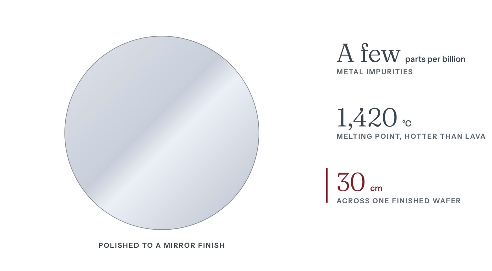
An arc furnace melts the quartz rock with carbon, and the carbon takes the oxygen away as gas, leaving rough silicon metal. Refiners turn the metal into a gas, trichlorosilane, and distill it, because the impurities boil at other temperatures and separate out.
In the next step, the Siemens process, the clean gas flows over silicon filaments heated inside a bell jar. On the hot surface the gas breaks apart and its silicon settles onto the filaments. Over days the filaments thicken into gray rods of . Everything downstream is made from those rods. Polysilicon comes in two ultra-high-purity grades, one for semiconductors and one for solar cells, and use the 1.
A grower melts the polysilicon at about 1,420 degrees Celsius, hotter than lava, and pulls a single crystal out of it by the Czochralski method2. The grower lowers a small seed crystal on the end of a rod to the surface of the melt and draws it back up, slowly turning. Silicon freezes onto the seed in the seed's own atomic pattern, and a cylinder, the ingot, grows beneath it. The pull starts with a thin neck so that flaws from the seed's first contact with the melt stay in the neck and never reach the ingot. Boron or phosphorus is stirred into the melt, a step called doping. The added element sets how readily the wafer conducts and whether negative or positive charges carry its current.
A wire saw, a web of fine wire running through abrasive, slices the ingot into discs. The maker then laps each disc, both faces flat between rotating plates. It off the damaged surface with chemicals, then polishes the disc to a mirror with colloidal silica, a of silica particles far too small to see. Almost every step throws material away.
get one more layer of near-perfect silicon, grown on top at about 1,200 degrees Celsius2. That is still hot enough to glow orange.
A polished wafer is a doped single crystal polished to a mirror finish2. An epitaxial wafer is a polished wafer with a thin layer of single-crystal silicon grown on top2. The are built in that layer, so flaws in it can make them leak current. SUMCO says an epitaxial wafer suits customers who need a near-perfect crystal or layers that differ in electrical resistance2. SEMI, the industry association, credits the 2025 rise in shipments to AI-driven demand for advanced epitaxial wafers for and polished wafers for 9.
In a silicon-on- (SOI) wafer, a buried layer of oxide, which is glass, separates a thin working layer of silicon from the bulk beneath. Soitec says nearly all SOI wafers sold worldwide are made with its Smart Cut process18. Soitec's SOI product lines include RF-SOI for radio chips and fully depleted SOI (FD-SOI)18. Its markets run from mobile communications to cloud AI18. But for logic chips, SEMI credited the AI-driven growth in 2025 to a different kind of wafer, the advanced epitaxial wafer9.
The Center for Security and Emerging Technology (CSET) at Georgetown University named five key wafer firms in a January 2021 brief19. They were Shin-Etsu and SUMCO of Japan, GlobalWafers of Taiwan, Siltronic of Germany and SK Siltron of South Korea19. CSET also listed nine Chinese-owned producers, among them Zhonghuan, Simgui, ZingSEMI and Okmetic, a Finnish firm bought by a Chinese state investment fund19. It said Chinese wafer producers made little revenue compared with the five key firms20.
China's 300 mm wafer industry has grown since 2018. As of 2018, five Chinese firms were making or planning 300 mm wafers20. In its October 2025 listing prospectus, Eswin, a Chinese wafer maker, counts seven Chinese firms, itself included, making 300 mm wafers at scale21. Their combined capacity was 2.94 million at the end of 202421.
Companies based in Japan held 53 percent of 2023 wafer sales
Silicon wafer sales by supplier headquarters, 2023. Japan held 53%, and the source shows no separate share for China or the United States
| Japan | 53% |
|---|---|
| Taiwan | 19% |
| South Korea | 13% |
| Europe | 10% |
| Other | 5% |
Sharma, Yashvardhan. “Figure 02.2: Silicon wafer sales by supplier headquarters, 2023. Japan held 53%, and the source shows no separate share for China or the United States.” Chip Supply Chain: How AI Chips Are Made. Updated 27 October 2026. https://chipsupplychain.org/silicon-and-wafers/#fig-silicon-and-wafers-wafer-concentration
Japanese companies held 53 percent of the world's silicon wafer sales in 20234. The chart shows shares of 2023 sales from a survey by Fuji Keizai, a Japanese research firm4. , Trade and Industry reproduced the figures in a December 2025 strategy deck4. The ministry's chart of the Fuji Keizai survey prints only Japan's 53 percent, so the other shares in the chart above are measured from its bars4. An earlier page of the ministry's deck prints Europe's share in the same Fuji Keizai survey as 10 percent22. The chart gives no separate share to Chinese or US companies4.
Siltronic's April 2026 investor presentation says the top five wafer makers serve around 75 percent of the market, based on revenue in the first three quarters of 20253. It names the five as Shin-Etsu, SUMCO, GlobalWafers, SK Siltron and Siltronic itself3. Siltronic describes itself as the only Western-based maker among the five3.
The wafer makers' 2025 results show strong AI demand and weak demand for chips made on older, .
Worldwide, the wafer area shipped rose 5.8 percent in 2025, but revenue fell 1.2 percent9. SEMI attributes the softer revenue mostly to traditional chip uses outside AI, where demand and pricing had yet to improve9.
Polysilicon is the raw material for both wafers and solar cells, and almost all of China's is made for solar cells. In 2023 China made 1.50 million metric tons of polysilicon, about 93 percent of world output16. Solar-grade material was an estimated 98 percent of that output and electronic-grade 2 percent16. The US Commerce Department found in 2026 that semiconductor-grade polysilicon makes up only 2.4 percent of global production, close to the electronic-grade share of China's output8. These figures do not show how much of China's electronic-grade polysilicon ends up in chips.
An estimated 98 percent of China's 2023 polysilicon was solar-grade
China's polysilicon output by grade, 2023. China made 1.50 million metric tons that year, about 93% of world output
| Solar-grade | 98% |
|---|---|
| Electronic-grade | 2% |
Sharma, Yashvardhan. “Figure 02.3: China's polysilicon output by grade, 2023. China made 1.50 million metric tons that year, about 93% of world output.” Chip Supply Chain: How AI Chips Are Made. Updated 27 October 2026. https://chipsupplychain.org/silicon-and-wafers/#fig-silicon-and-wafers-polysilicon-grade
Siltronic put the 2025 market for electronic-grade silicon at $1.4 billion, with five major suppliers, none of them Chinese: Wacker, Hemlock, OCI, Tokuyama and Mitsubishi6.
GlobalWafers of Taiwan has expanded its wafer making in the United States. It opened a $3.5 billion plant in Sherman, Texas in May 2025, the first fully integrated plant for advanced silicon wafers built in the United States in over twenty years7. The same day it announced another $4 billion for phases three and four in Sherman7. The US government had awarded it up to $406 million under the program for wafer plants in Texas and Missouri17.
US import rules issued in 2026 on polysilicon products also cover the single-crystal wafers that chips are built on. US Presidential Proclamation 11052, signed 6 August 2026, sets a minimum import price of $100 per kilogram for polysilicon ingots and wafers from 4 December 20268. From the same date it adds an extra 15 percent duty on imported ingots and other listed products made from polysilicon8. A September 2026 US Commerce Department rule meant to stop stockpiling before the duties start lists tariff code 3818.00.0040 among the products it covers25. That code covers round, doped, single-crystal silicon wafers26.
The US Commerce Department may approve plans to build US polysilicon, ingot, wafer or solar cell plants whose construction starts by 20 January 20298. Firms with approved plans can import production equipment, and polysilicon, ingots, wafers and solar cells in amounts the department sets to match their new investment, without the new duties8.
China makes most of the world's polysilicon, but as of 2019 Chinese firms held under 5 percent of the wafer market and under 1 percent of the 300 mm market19. As of 2018, Chinese producers made 12 percent of the wafers for Chinese-headquartered 300 mm fabs, against 18 percent for 100 to 200 mm fabs27.
Eswin, mainland China's largest maker of 300 mm wafers, says it ranked sixth in the world with about 7.7 percent of global 300 mm shipments in the first half of 20265. Its October 2025 Shanghai listing prospectus, drawing on SEMI data, estimates that the five largest makers shipped 79.08 percent of 300 mm wafers in 202428. It puts Eswin at 6.01 percent and all other makers at 14.91 percent28.
Making the smoothest, high-purity 300 mm wafers takes considerable know-how that is hard to write down20. Customers have to a new wafer plant before they buy from it, and Siltronic completed key customer qualifications at its new Singapore fab in July 202511.
Almost all fab capacity for advanced chips runs on 300 mm wafers. In SEMI figures from November 2020 cited by CSET, 99.7 percent of world fab capacity at 45 and below used 300 mm wafers20. SEMI estimated that 300 mm wafers made up about 78.8 percent of all wafer area shipped worldwide in 2025, according to Eswin's 2025 annual report summary29.
The last increase in wafer size, to 300 mm, happened in 200230. Wafers are still produced in diameters of up to 300 mm9. Bigger wafers cut the cost of , etching and other steps, because those steps have to be run fewer times for the same number of chips30. So printing, or , takes a bigger share of the processing cost30. A 2013 University of Texas lecture cited by CSET put photolithography at half the cost of processing a 300 mm wafer, against a quarter for a 150 mm one30.
Large and the newest processes need better wafers. Some GPU dies fill the whole area a lithography tool can print in one exposure. One fatal defect on such a die ruins far more silicon than one on a small chip. printing also stays in focus over only a tiny range of heights (see Lithography), so the disc has to be flat at every point. SEMI's wafer group says the move to sub-3nm processes is raising requirements for wafer quality and consistency9.
Recall each answer, then turn the card.
What is a wafer?
A thin disc of pure silicon, about 30 centimeters across, that carries hundreds of chips.
It is sliced from a single crystal and polished to a mirror finish. Reread: How it works
Which five companies make most of the world's silicon wafers?
Shin-Etsu and SUMCO of Japan, GlobalWafers of Taiwan, Siltronic of Germany and SK Siltron of South Korea.
Together they served around 75 percent of the wafer market in 2025, based on revenue in the first three quarters. None of them is American or Chinese. Reread: Who makes it
Why can a fab not switch wafer suppliers quickly?
A fab has to test and approve, or qualify, a new wafer plant before buying from it.
Making the smoothest, high-purity 300 mm wafers takes know-how that is hard to write down. Siltronic, one of the five largest makers, completed key customer approvals for its new Singapore fab in July 2025. Reread: The chokepoint
Why does making most of the world's polysilicon give China little hold over chip wafers?
Chips need electronic-grade silicon, and none of the five major suppliers of that grade is Chinese.
China made about 93 percent of the world's polysilicon in 2023, but an estimated 98 percent of it was solar-grade. The five electronic-grade suppliers Siltronic named for 2025 are Wacker, Hemlock, OCI, Tokuyama and Mitsubishi. Reread: The chokepoint
Chapter 03Stage 3 of 14High concentrationModerately hard to substitute
Japanese companies held 78 percent of world photoresist sales in 2023. Supply of chip chemicals, gases and metals has been disrupted three times since 2019.
Sharma, Yashvardhan. “Chemicals, Gases and Photoresist.” Chip Supply Chain: How AI Chips Are Made. Updated 27 October 2026. https://chipsupplychain.org/chemicals-gases-and-photoresist/
A specialty gas cabinet with its door off, and a bulk liquid cylinder standing behind it. The cabinet is about 1 m wide and 1.9 m tall and holds three gas cylinders. The drawing is to scale. The steel-gray panel on the back wall holds the valves, regulator and gauges that control the gas flow.
is a coating that changes wherever light hits it. A machine spins a coat of it, thinner than a soap bubble, across the . Light shines through a stencil onto the coat, and a liquid wash then takes away the parts the light reached. What remains is a pattern, and the next machine cuts that pattern into the wafer beneath, a step called . Hundreds of other chemicals, gases and materials lay down layers, strip them off and clean the wafer between steps1. The are purified until metal and other impurities are down to parts per trillion, the Japanese chemical maker Sumitomo Chemical said in 20212. A chipmaker has to test and approve each new resist in its own factory before using it3. Even a resist that passes the first time takes seven to 17 months to approve, the Semiconductor Industry Association wrote in 20233. Japanese companies held 78 percent of world photoresist sales in 2023, by a Fuji Keizai survey that Japan's trade ministry reproduced4.
In July 2019 Japan began requiring an for each contract to sell , or fluorinated polyimide to South Korea5. Japan's hydrogen fluoride exports to South Korea then fell 87.9 percent, but its photoresist exports did not5. Production of all three chemicals rose inside South Korea5.
China banned exports of the metals , germanium and antimony to the United States in December 20246. In Europe, germanium metal averaged an estimated $4,100 a kilogram in 2025, against $1,392 in 2023, on Argus Media prices reported by the US Geological Survey7. In November 2025 China suspended the ban until 27 November 20268.
A draws on hundreds of chemicals, gases and other materials1. A shortage of any one of them can stop it. The French gas company Air Liquide alone supplies more than 200 different chemicals and roughly 50,000 cylinders a year9.
Why one missing material can stop a fab
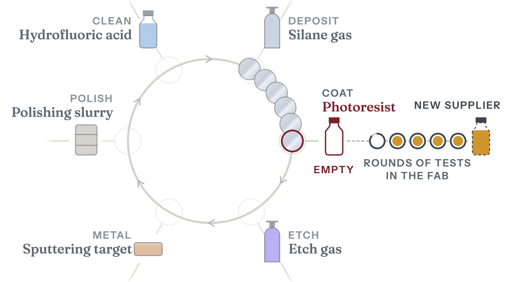
The has to change only where the light lands. It also has to work with very little light, so the , the machine that projects the pattern, can expose each patch of the in milliseconds.
Since the 1990s the standard has been chemically amplified resist. In resists for light with wavelengths of and , a photon absorbed in the film can free an acid molecule, and little more happens until the wafer is baked. In the bake, each acid molecule sets off hundreds of reactions around itself that turn the film soluble, so a little light does a lot of chemistry20. The wash then takes away the exposed film and leaves the rest.
The 248 nm light comes from a krypton fluoride (KrF) laser. The 193 nm light comes from an argon fluoride (ArF) laser. also pass it through a layer of water, which sharpens the image.
Chemically amplified resist works less well with (EUV) light (see Lithography). An absorbed EUV photon instead knocks electrons loose, and a cascade of lower-energy secondary electrons makes the chemical changes in the resist21. A 13.5 EUV photon carries about fourteen times the energy of a 193 nm one, so the same dose of light arrives as far fewer photons. With fewer photons, random variation in where each one lands matters more. It shows up as ragged line edges and missing contact holes, the tiny holes that link one layer of a chip to the next.
Resist makers responded with , which are built on clusters with a tin-oxide core and absorb more of the EUV light than chemically amplified resists22. In 2021 the Japanese resist maker JSR agreed to buy Inpria, an Oregon-based US maker of these resists19.
The other chemicals and gases put material on the wafer, take it off or keep it clean. such as nitrogen come by pipeline or from plants built at the fab, and specialty gases come in cylinders9. Silane gas carries the silicon for new layers into the chamber that holds the wafer. A splits , and the fluorine it frees scrubs the chamber walls clean between wafers. cleans the wafer itself. grind each new layer flat before the next goes on.
are slabs of pure metal. A plasma knocks atoms off them, and the atoms settle on the wafer as thin metal films, including the barrier and seed layers for copper wiring23. Electroplating then fills in the copper wiring itself24. Filters and wafer carriers keep contamination out.
| Resist class | Wavelength | Where it is used | Limit |
|---|---|---|---|
| novolak | 365 nm | Packaging, | Resolution |
| KrF chemically amplified | 248 nm | , thick films | Resolution |
| ArF immersion chemically amplified | 193 nm | Most critical layers below 28 nm | Needs per layer |
| EUV chemically amplified | 13.5 nm | single-exposure layers | Shot noise from too few photons |
| EUV metal-oxide | 13.5 nm | , tightest | Cost, defects, outgassing |
Each resist class is made for one kind of , such as EUV, ArF immersion, ArF, KrF or i-line25.
Japanese companies sell most of the world's photoresist, by two different counts. In a January 2021 brief, Georgetown University's Center for Security and Emerging Technology (CSET) put Japan's share of the semiconductor photoresist market at 90 percent, citing a 2019 estimate25. The brief put most of the rest with US and South Korean firms25. In a December 2025 strategy presentation, , Trade and Industry (METI) published figures from a separate survey by Fuji Keizai, a Japanese market research firm4. That survey counts sales by company nationality and puts Japanese companies at 77 percent in 2021 and 78 percent in 2023, with American and South Korean companies next4.
Japanese companies held 78 percent of photoresist sales in 2023
Photoresist sales share by company nationality, 2023
| Japanese companies | 78% |
|---|---|
| US, South Korean and other companies | 22% |
Sharma, Yashvardhan. “Figure 03.2: Photoresist sales share by company nationality, 2023.” Chip Supply Chain: How AI Chips Are Made. Updated 27 October 2026. https://chipsupplychain.org/chemicals-gases-and-photoresist/#fig-chemicals-gases-and-photoresist-resist-country
CSET's January 2021 brief lists five Japanese resist makers: JSR, Tokyo Ohka Kogyo, Shin-Etsu Chemical, Fujifilm and Sumitomo Chemical26. It also lists Dongjin of South Korea, four Chinese firms and three firms it counts as American: DuPont, EMD Performance Materials and Inpria26. Qnity Electronics, the former DuPont electronics business, says in its 2025 annual report that it offers lithography materials for every wavelength, including EUV27.
In its 2025 annual report summary, the Chinese firm Hubei Dinglong said China had yet to reach large-scale production of advanced resist for 248 nm, 193 nm or EUV printing17. But it said three of its own resists for 248 nm and 193 nm printing had moved into stable volume supply28.
A Japanese state-backed fund, Japan Investment Corporation, took control of JSR in April 2024. A company the fund controls bought 84.36 percent of JSR's shares at ¥4,350 each in an offer to all shareholders that closed on 16 April 202413. JSR's shares were delisted from the Tokyo Stock Exchange on 25 June 202429.
Two Japanese suppliers tie their growth to demand for AI chips. Tokyo Ohka Kogyo sold ¥139,668 million in the first half of fiscal 2026, up 25.1 percent, as strong demand for AI servers in data centers raised demand for chips14. Fujifilm planned to raise its polishing-slurry capacity at Kumamoto in Japan by about 30 percent from January 2025, to meet demand driven by AI chips30. It also scheduled new production and quality-evaluation equipment for EUV resist at Shizuoka in Japan and Pyeongtaek in South Korea to start in October 202531.
World sales of wafer fabrication materials reached $45.8 billion in 2025, and sales of packaging materials reached $27.4 billion11. SEMI counts silicon wafers and among wafer fabrication materials, along with resists, gases, chemicals and polishing materials12.
In electronic gases, CSET named Merck, Air Products and Air Liquide as the market leaders in January 202132. Air Liquide's electronics business sold €2,465 million in 2025, 9.1 percent of group revenue9. SK Specialty has made nitrogen trifluoride since 2001, when it became the first company to produce the gas in South Korea33. The Japanese firm Kanto Denka Kogyo refines its own fluorine gas and turns it into specialty gases for , and cleaning34. Stella Chemifa, also Japanese, makes ultra-high-purity hydrofluoric acid for chipmaking35. Another Japanese firm, Morita Chemical Industries, sells an hydrofluoric acid36.
A few firms held most of the markets for and polishing slurries in 2019. CSET's January 2021 brief, drawing on a 2019 report by the market research firm Mordor Intelligence, put five firms, KMG Chemicals, BASF, Avantor, Honeywell and Kanto Chemical, at more than 60 percent of the wet chemicals market32. Citing a 2019 report by the market research firm Market Reports World, it put DuPont and Cabot Microelectronics at about 56 percent of a $790 million market for polishing slurries25. Counting by company nationality, the same Fuji Keizai survey, as published by METI, puts Japanese companies at 51 percent of polishing-slurry sales and 59 percent of high-purity cleaning-liquid sales in 20234. Both shares were 49 percent in 20214.
The slurry businesses of both leaders CSET named have since moved to other companies. Cabot Microelectronics renamed itself CMC Materials in October 202037. The American firm Entegris completed its purchase of CMC Materials on 6 July 202215. DuPont separated its electronics business into an independent company, Qnity Electronics, on 1 November 202538. Qnity sells polishing slurries and pads39.
In sputtering targets for semiconductors, JX Advanced Metals puts its own share of the world market at about 65 percent as of fiscal 202616.
Supply at this stage has been disrupted three times since 2019, twice by governments and once by a war.
In July 2019 Japan put photoresist, hydrogen fluoride and fluorinated polyimide under individual for South Korea, so each export contract needed its own license5. South Korea's chip industry depended heavily on Japan for all three chemicals, and Japanese firms supplied more than 90 percent of South Korea's imports of two of them5. Japan's hydrogen fluoride exports to South Korea then fell 87.9 percent5. Japanese photoresist exports to South Korea did not fall, possibly in part because Japan allowed three-year bulk licenses for some resist sales in December 20195.
South Korea bought more hydrogen fluoride from the United States and Taiwan and more photoresist from Belgium5. Production of all three chemicals rose inside South Korea5. The rise came both from South Korean firms and from Japanese companies' affiliates in South Korea5.
Researchers at Japan's Research Institute of Economy, Trade and Industry (RIETI) found that Japanese hydrogen fluoride exports to the United States rose5. They say some Japanese supply may have reached South Korea by way of the United States5. Japan ended the individual licenses on 23 March 2023, when it put exports of the three chemicals to South Korea under its bulk export license system40.
Russia's invasion of Ukraine in 2022 put chipmakers' supply of at risk. Before the invasion, Ukraine supplied about 70 percent of the world's neon and 90 percent of the semiconductor-grade neon used by US industry41. The fighting forced at least two of Ukraine's three major gas producers, Cryoin and Ingas, to shut their operations in Odesa and Mariupol41. That halted a significant part of the world's exports of neon, krypton and xenon41. Gas mixtures containing neon fill the lasers used in lithography, but EUV scanners use a tin light source instead42. Many chipmakers had added to their gas stockpiles after Russia annexed Crimea in 201441. Samsung, SK hynix, Renesas and Rohm reported adequate neon supplies from China41.
For chipmaking materials, China's export controls cover metals. On 3 July 2023 China announced that exports of would need licenses from 1 August18. On 3 December 2024 it said it would in principle grant no licenses to export gallium, germanium, antimony or superhard materials to the United States6. On 9 November 2025 it suspended that ban until 27 November 20268. In February 2026 the US Geological Survey put China's share of world production of primary low-purity gallium at 99 percent43.
The White House set out a trade deal with China on 1 November 202544. It said that under the deal China would issue general licenses for exports of gallium, germanium and antimony for the benefit of US and their suppliers44.
Most gallium used in the United States goes into chips, and both metals are recovered as byproducts of processing other minerals. Of the gallium used in the United States in 2025, 73 percent went into integrated circuits built on gallium arsenide or gallium nitride43. Another 26 percent went into optoelectronic devices such as LEDs and laser diodes43. In the United States, germanium goes mainly into fiber optics, infrared optics, semiconductors and solar cells, and radiation detectors7. Gallium is recovered mostly as a byproduct of processing bauxite, the ore that aluminum is made from43. Germanium is recovered from certain zinc smelter residues and from coal ash45. Because both metals are economical to produce only as byproducts, their supply may not rise much when their prices do45.
In Europe, germanium metal averaged an estimated $4,100 a kilogram in 2025, against $1,392 in 2023, on Argus Media prices reported by the US Geological Survey7. US imports of the metal fell an estimated 67 percent in 2025 because of China's ban7. In October 2024 the US Geological Survey estimated that a total Chinese ban on gallium and germanium exports could cut US GDP by $3.4 billion46.
Germanium in Europe rose to an estimated $4,100 a kilogram in 2025
Germanium metal, annual average price in Europe. China required export licenses from August 2023, banned shipments to the US in December 2024 and suspended the ban from November 2025 to 27 November 2026
| 2021 | $1,187/kg |
|---|---|
| 2022 | $1,294/kg |
| 2023 | $1,392/kg |
| 2024 | $1,991/kg |
| 2025 | $4,100/kg |
Sharma, Yashvardhan. “Figure 03.3: Germanium metal, annual average price in Europe. China required export licenses from August 2023, banned shipments to the US in December 2024 and suspended the ban from November 2025 to 27 November 2026.” Chip Supply Chain: How AI Chips Are Made. Updated 27 October 2026. https://chipsupplychain.org/chemicals-gases-and-photoresist/#fig-chemicals-gases-and-photoresist-germanium-price
A slower risk is the European Union's proposed restriction on PFAS, the long-lived fluorinated chemicals. These chemicals are used throughout a fab, from some etch gases to seals, filters and the plastic linings of chemical tanks and pipes. Most of the photoacid generators that free the acid in resist contain PFAS too47.
Each resist made without PFAS would need full in the chipmaker's fab3. The Semiconductor Industry Association wrote in 2023 that photoresist needs the most rigorous qualification of any chemical a chipmaker uses, because each resist is tuned to the layers it prints10. The resist maker adjusts its formula over rounds of tests in the fab3. A fab could not qualify all the new resists at once, mainly because testing several together can muddle the results3. So some would have to be qualified one after another3.
The EU proposal may still let chipmakers keep using PFAS where the risks can be controlled. The national authorities of Denmark, Germany, the Netherlands, Norway and Sweden prepared the proposal and updated it after evaluating more than 5,600 comments48. ECHA, the EU chemicals agency, published the updated proposal on 20 August 202548. The updated proposal assessed options that would let electronics and semiconductor makers keep using PFAS where the risks can be controlled48.
In March 2026 ECHA's two scientific committees backed an EU-wide restriction with targeted derogations, or exemptions49. One committee gave its backing in a final opinion and the other in a draft49. Their evaluation is due to finish by the end of 202649. The European Commission will decide in consultation with the member states48.
Recall each answer, then turn the card.
What does photoresist do?
It is a light-sensitive coating that holds the printed pattern, so the next step can etch that pattern into the wafer.
A wash removes the parts the light reached. The pattern that remains guides the etch. Reread: How it works
Which country's companies sell most of the world's photoresist?
Japan's.
Japanese companies, among them JSR, Tokyo Ohka Kogyo and Fujifilm, held 78 percent of world sales in 2023. Reread: Who makes it
Why is it slow to switch to a new photoresist supplier?
Each resist is tuned to the layers it prints, and the chipmaker has to approve it in its own fab.
Even a resist that passes the first time takes seven to 17 months to approve, the Semiconductor Industry Association wrote in 2023. Reread: The chokepoint
Which two metals has China required a license to export since August 2023?
Gallium and germanium.
China made 99 percent of the world's primary low-purity gallium, the US Geological Survey said in February 2026. In the United States, 73 percent of the gallium used in 2025 went into chips built on gallium arsenide or gallium nitride. Reread: The chokepoint
Chapter 04Stage 4 of 14Extreme concentrationVery hard to substitute
ASML, a Dutch firm, is the only maker of extreme ultraviolet scanners, the machines that print the finest layers of a chip. It sold 48 of them in 2025.
Sharma, Yashvardhan. “Lithography.” Chip Supply Chain: How AI Chips Are Made. Updated 27 October 2026. https://chipsupplychain.org/lithography/
An extreme ultraviolet scanner cut open along its light path. The machine is the size of a bus and weighs about 180 metric tons. The blue-violet thread is the 13.5 nm light, bouncing mirror to mirror from the violet-white tin plasma at bottom left to the wafer. The mask at the top and the wafer at bottom right are drawn about twice their true size.
Parts, as numbered on the drawing
prints the pattern of a circuit onto the . A machine holds a stencil of one layer of the circuit up to a light source and projects the image, four times smaller, onto the silicon. The shorter the wavelength of the light, the finer the lines a machine can print. Even so, a machine can print lines narrower than its light's wavelength. , for example, shine the light through a layer of water between lens and wafer, which lets them print smaller features with the same light1. ASML rates its NXT:2150i immersion scanner at features of 38 or less with argon fluoride laser light2. Air soaks up light, the shortest in use, so machines that print with it work in a vacuum. Only ASML, a Dutch company, makes them. are government rules on who a company may sell to. Every advanced passes through ASML's machines, so export controls on ASML affect all advanced chipmaking.
ASML is the only company that makes (EUV) 3. It also holds above 80 percent of the market for (DUV) , which uses light of longer wavelength than EUV4. ASML says the production capacity of Zeiss, its sole supplier of optics, limits how many lithography systems it can build5.
set up by the United States with allies including the Netherlands block EUV scanners from Chinese 6. In December 2025 Reuters reported a Chinese prototype that had made EUV light but had printed no chip7. In July 2026 Reuters reported, citing one unnamed source, that a Shanghai firm with two state shareholders has started producing tools, which shine their light through water8.
ASML sold 327 in 2025, 48 of them (EUV)9. Nobody else makes EUV systems3.
Chinese firms have begun small-batch production of , but none has yet been shown fit for producing advanced , the Center for Technology & Statecraft found in September 202613. Its central estimate in 2026 was that China would have a commercially viable immersion scanner for 7 nm chips in the mid-2030s, with the early 2030s plausible, and EUV not before the second half of the 2030s13. Meanwhile Chinese had built a stockpile of more than 330 immersion DUV systems by the first quarter of 2026, most of them ASML's NXT:1980i13.
No American firm makes , CSET found in 202114. But every immersion DUV scanner holds a light source from Cymer, a US company now part of ASML, or from Japan's Gigaphoton, so the two governments could stop sales by controlling those parts, the Center for Technology & Statecraft found in September 202613. A US rule published in October 2023 already covers immersion scanners with an error between 1.5 nm and 2.4 nm bound for advanced chipmaking if they hold any American-made parts15. The US also requires a license to supply the firms it names16.
The stencil is called a , and the machine a scanner (see Photomasks and pellicles).
The is coated with , a film that changes wherever light touches it. The mask holds one layer of the circuit as a pattern of clear and dark areas, drawn at four times its size on the . The machine shines light through the mask, shrinks the image four times with a lens, and lands it on the film.
A wash then removes the film where the light hit, or, with some films, where it did not, leaving the pattern standing on the wafer17. The film then serves as a stencil for the next step, which either the pattern into the layer beneath or fires ions into the open areas to change how the silicon conducts17. Then the film is stripped and the next mask goes in. Chips are made up of dozens of layers, ASML says17. Photronics, a US , says masks are typically sold in sets, with each layer's pattern on a different mask18.
How lithography prints a chip

The image from one mask covers a patch of up to 26 by 33 mm19. The wafer moves under the optics one patch at a time, close to a hundred patches per wafer. ASML's own rating for an EUV scanner assumes 96 of them19. Before the wafer is exposed, the machine measures marks printed in earlier layers so the new layer lines up with them19. For its NXE:3400B EUV scanner, ASML rates the matched-machine overlay, a measure of that alignment, at 2 19. That model first shipped in 201720.
Finer lines need shorter light. Glass and air both absorb the shortest light in use, at 13.5 nm21. So an EUV scanner works in a vacuum and uses mirrors instead of lenses, and its masks are mirrors too21. (DUV) machines use light with a wavelength more than fourteen times longer12. ASML calls its the workhorses of the industry, used in of the most advanced logic and memory chips22.
When one exposure cannot draw a pattern finely enough, chipmakers use . In the litho-etch kind, the pattern is split between two or more masks printed in turn23. Each added mask brings more process steps, more cost and a risk that the parts of the pattern misalign24. Self-aligned double and quadruple patterning (SADP and SAQP) print the lines with one exposure and then multiply them with and etch steps23. In SAQP each printed line ends up as four23. Because one exposure places all those lines, they cannot misalign with each other23. A later exposure still prints blocks that break them where the circuit needs gaps23. ASML says one EUV exposure per layer cuts masks and process steps and lowers cost3.
Deep ultraviolet (DUV) light comes from gas lasers called excimer lasers: 248 nanometers from (KrF), 193 from (ArF), shone through air or water12. Cymer, an independently run ASML business in San Diego, makes these excimer lasers, which generate the light that scanners use to print patterns on wafers25. Gigaphoton, a Komatsu company in Japan, also makes excimer lasers for tools26.
Of the systems ASML sold in 2025, 131 were ArF immersion, 78 KrF and 16 ArF dry, all deep ultraviolet, and another 54 were older tools27. The i-line tools use 365 nm light from a mercury lamp, and ASML says they print features as small as 220 nm12.
Reuters gives one price for the whole DUV segment, with tools costing roughly $60 million each4. ASML's own figures split its DUV sales by tool type. In 2025 the 131 ArF immersion tools it sold made up 42 percent of its system sales, and the 78 KrF tools only 4 percent27. In DUV, ASML competes with Nikon and Canon, and it still holds above 80 percent of that market4.
Chipmakers without EUV build their finest layers on immersion DUV scanners, in several passes per layer3. From 1 September 2023, Dutch covered the most advanced of these scanners, ASML's NXT:2000i and later models28.
The 13.5 nm light comes from molten tin droplets shot from a generator12. A laser hits each droplet twice, first with a low-intensity pulse that flattens it and then with a more powerful one that vaporizes it into 12. The process repeats 50,000 times a second12. Mirrors made by Zeiss, a German optics company, carry the light to the wafer1. The largest are a meter across and smooth to within tens of picometers, a picometer being a thousandth of a nanometer1.
Brighter light means more wafers an hour, and ASML demonstrated the first 1,000-watt EUV source in April 202529. Its TWINSCAN NXE:3800E ships at its full 220 wafers an hour, 37 percent more than the NXE:3600D30.
raise the numerical aperture (NA), a measure of how well the optics collect and focus light, from 0.33 to 0.5531. That cuts the smallest printable feature from 13 nm to 8 nm31. Their optics shrink the mask image four times in one direction and eight in the other, halving the patch of wafer one exposure covers and doubling the exposures per wafer31. The second-generation TWINSCAN EXE:5200B runs at 175 wafers an hour, 60 percent above the EXE:50003.
Reuters puts a standard EUV tool at around $200 million and a High-NA machine at an estimated $350 to $400 million4.
High-NA EUV scanners cost an estimated $350 million to $400 million in 2026
What one lithography system costs. The DUV bar is one figure for the whole segment, and the High-NA bar shows the low end of an estimated $350-400M range
| DUV tool | $60M |
|---|---|
| EUV, 0.33 NA | $200M |
| High-NA EUV | $350M |
Sharma, Yashvardhan. “Figure 04.2: What one lithography system costs. The DUV bar is one figure for the whole segment, and the High-NA bar shows the low end of an estimated $350-400M range.” Chip Supply Chain: How AI Chips Are Made. Updated 27 October 2026. https://chipsupplychain.org/lithography/#fig-lithography-tool-price
ASML sold four High-NA (EXE) systems in 2025, against two in 202432. In its 2025 annual report, filed in February 2026, ASML said it expected High-NA to start supporting high-volume manufacturing in 20275.
Intel and TSMC have chosen differently on High-NA:
On 8 September 2026 ASML and TSMC announced a move from 6-inch photomasks to 12-inch ones, to remove stitching constraints35. Stitching constraints are the design limits that come from printing a large chip in two halves. ASML and TSMC aim for a pilot line for the new masks by 2031 and for High-NA systems that use them to enter production by 203335.
| 2023 | 53 tools |
|---|---|
| 2024 | 44 tools |
| 2025 | 48 tools |
Sharma, Yashvardhan. “Figure 04.3: EUV systems ASML sold each year.” Chip Supply Chain: How AI Chips Are Made. Updated 27 October 2026. https://chipsupplychain.org/lithography/#fig-lithography-euv-shipments
ASML's net sales were EUR 32.7 billion in 2025, at a 52.8 percent 9. In October 2026 it expected 2026 net sales of EUR 44 to 45 billion, at a gross margin of around 56 percent36. Its 2025 annual report lists 5,100 suppliers5. Three of them and ASML's own San Diego site make the main parts of the EUV machine:
ASML says the production capacity of Zeiss, its sole supplier of optics, limits how many lithography systems it can build5.
Lithography is the stage of the chain that European firms lead, with ASML the only maker of EUV scanners3. The bulk of ASML's suppliers are in the Netherlands and the rest of Europe, the Middle East and Africa, the company says40.
In Japan, Nikon and Canon also make lithography tools. Nikon sold 22 new chip lithography systems in the year to March 2026, in a market it sizes at 570 units for 202510. Its Precision Equipment business made an in the year to March 202641. Canon sold 234 chip lithography systems in 2025, 188 of them i-line and 46 KrF11. Its range runs from KrF scanners to i-line steppers, including some built for 42. Canon also makes a nanoimprint system, the FPA-1200NZ2C, which stamps the pattern instead of projecting it and can print lines down to 14 nm wide43. Canon delivered one in 2024 to the Texas Institute for Electronics, to be used for research and prototypes43.
In January 2021 CSET, a research center at Georgetown University, found that the United States lacked firms in a few key parts of the chip supply chain, above all lithography tools14.
EUV made up 48 percent of ASML's 2025 system sales
ASML net system sales by technology, 2025
| EUV | 48% |
|---|---|
| ArF immersion | 42% |
| KrF | 4% |
| Metrology and inspection | 3% |
| ArF dry | 2% |
| i-line | 1% |
Sharma, Yashvardhan. “Figure 04.4: ASML net system sales by technology, 2025.” Chip Supply Chain: How AI Chips Are Made. Updated 27 October 2026. https://chipsupplychain.org/lithography/#fig-lithography-litho-mix
Export controls set up by the United States with allies including the Netherlands block ASML from shipping EUV scanners to Chinese foundries6. In September 2025 judged that EUV remained "firmly out of reach" for China despite massive state investment6. For DUV scanners and other tools, the restrictions came in this order:
China's share of ASML's net system sales fell from 41 percent in 2024 to 33 percent in 202527.
On DUV, Reuters reported in July 2026, citing one unnamed source, that Shanghai Aishengna Electronic Technology Group has started producing home-grown immersion DUV tools8. The firm was registered in August 2023 with 7 billion yuan of capital and two state shareholders, Shanghai Electric Holding and a Shanghai International Trust subsidiary8. It has no website and has taken in teams from SMEE, China's older scanner maker, and the startup Yuliangsheng8. SMEE is strongest in i-line, the coarsest kind of lithography tool, and even there holds only four percent of the world market6.
The Center for Technology & Statecraft, a research group, found in September 2026 that none of China's home-grown immersion scanners had yet been shown fit for producing advanced chips13. Its central estimate was a commercially viable Chinese immersion scanner for 7 nm chips in the mid-2030s, and EUV not before the second half of the 2030s13. Until then Chinese rely on imported tools, and by the first quarter of 2026 they had built a stockpile of more than 330 immersion DUV systems, most of them ASML's NXT:1980i13.
There is less evidence of Chinese progress on EUV. Reuters reported in December 2025 that a Shenzhen team of former ASML engineers had built a prototype that made extreme ultraviolet light but had printed no chip7. To print a chip, a machine also needs mirrors that carry that light to the wafer, and ASML's sole supplier of those mirrors is Zeiss5.
China took 33 percent of ASML's 2025 system sales, the largest share
ASML net system sales by the region tools shipped to, 2025
| China | 33% |
|---|---|
| South Korea | 25% |
| Taiwan | 22% |
| United States | 12% |
| Japan | 5% |
| Rest of Asia | 2% |
| EMEA | 1% |
Sharma, Yashvardhan. “Figure 04.5: ASML net system sales by the region tools shipped to, 2025.” Chip Supply Chain: How AI Chips Are Made. Updated 27 October 2026. https://chipsupplychain.org/lithography/#fig-lithography-asml-region
If ASML stopped shipping, no fab anywhere could add EUV capacity, because no other company makes EUV scanners3. The scanners already in fabs would keep printing only as long as they were serviced. ASML has around 10,000 customer support employees who maintain and upgrade those machines around the clock48. Serviced this way, ASML's machines stay in use for a long time. In its 2025 annual report ASML said about 95 percent of the systems it had sold in the previous 30 years were still in use5. The same report warned that export controls may limit the service ASML can provide for machines already installed49.
ASML has a of its own. Zeiss SMT is its only supplier of lenses, mirrors and other critical optics50. ASML says that if Zeiss could not supply them for a long period, ASML would effectively be unable to run its business50.
ASML's capacity caps how many EUV scanners fabs anywhere can add each year. In July 2026 ASML put its 2026 capacity at around 65 standard (low-NA) EUV scanners and said it plans to add 30 percent for 202751.
AI are made with EUV, which prints their finest layers, the ones that set how densely and wires pack21. TSMC expects the number of layers needing High-NA to rise, driven mainly by the more complex transistors that AI chips need35.
Recall each answer, then turn the card.
What does lithography do?
It prints each layer of a chip's circuit onto the wafer.
The machine projects the image of a stencil, four times smaller, onto the silicon. Reread: How it works
Why do chipmakers print the finest layers with extreme ultraviolet (EUV) light?
Its shorter wavelength lets one exposure print what deep ultraviolet (DUV) machines need several passes to build.
Each added mask brings more process steps, more cost and a risk that the parts of the pattern misalign. ASML says one EUV exposure per layer cuts masks and process steps and lowers cost. Reread: How it works
Who makes EUV machines?
Only ASML, in the Netherlands.
ASML recorded sales of 48 EUV systems in 2025. The mirrors in these machines come from one supplier, Zeiss. Reread: Who makes it
How do export controls keep EUV machines out of China?
They block ASML, the only maker, from shipping EUV scanners to Chinese foundries.
In September 2025 CSIS judged EUV firmly out of reach for China. A Chinese prototype reported that December had made EUV light but had printed no chip. Reread: Controls and China's answer
Chapter 05Stage 5 of 14Extreme concentrationHard to substitute
Only three firms in the world make the blank plates for the masks used to print the finest layers of leading-edge chips. Japan's AGC and Hoya are two of them.
Sharma, Yashvardhan. “Photomasks and Pellicles.” Chip Supply Chain: How AI Chips Are Made. Updated 27 October 2026. https://chipsupplychain.org/photomasks-and-pellicles/
An EUV photomask, or reticle, with its pellicle dust cover. The glass plate is drawn to scale. It is a 152 mm square, 6.35 mm thick, about the size of a small floor tile. The dark blue band around the top edge is the mirror coating. The real coating is about forty pairs of layers, each pair 7 nm thick, far thinner than drawn.
A is the stencil that prints from, at least one for each layer of a 1. The same mask prints its layer on after wafer, so one mask shapes millions of chips. The most complicated layers are printed with (EUV) light, and the rest can often be printed with light2. For deep ultraviolet the mask is a quartz plate that the light shines through. No glass lets EUV light through, so the mask for EUV layers is a mirror. The mirror is built up from about forty pairs of thin layers, and the light bounces off it. Japan's AGC and Hoya are two of the three firms that make these mirrors. A dark pattern drawn on top of the mirror soaks up the light wherever no line should print. Any speck of dust on the mask repeats on every wafer it prints. So a thin membrane on a frame, called a , sits just above the mask and catches dust where it is too far out of focus to print.
On CSET's count from TechInsights data, Austria's IMS Nanofabrication held 46.6 percent of the 2025 world market for , which draw the pattern onto a 3. Hoya says its share of the market is exceptionally high4.
SemiAnalysis put a full set of masks for a at $40 million in May 20265. In July 2022 it wrote that more companies will lack the volume to spread the fixed cost of mask sets6. On 8 September 2026 ASML and TSMC announced a plan to move from 6-inch to 12-inch masks7. They expect the change to raise productivity and lower chipmaking costs7.
Each layer of an is printed from a built on a . Only three companies worldwide supply those plates, and Japan's AGC is one of them8. Hoya, also Japanese, is another4. AGC says it is the only company in the world that takes an EUV blank all the way from the glass to the finished coating9.
How a photomask prints its pattern
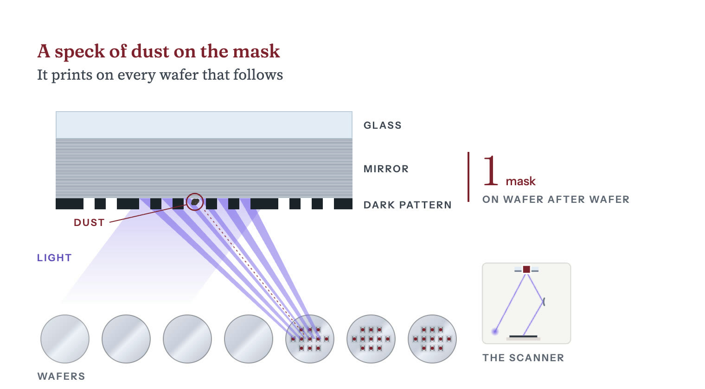
A mask starts as a blank, a polished plate with no pattern on it yet. For the blank is a window of quartz carrying a light-blocking film such as molybdenum silicide16. Japan's Shin-Etsu is one maker of those blanks16. For EUV the blank is a mirror of about 40 molybdenum and silicon layer pairs, 7 to a pair, laid on glass17. A dark tantalum film on top, called the absorber, will carry the pattern18.
The blank is coated with a sensitive film called . A then draws the design into the resist with electrons. A single-beam writer flashes one shape at a time, while NuFlare's multi-beam writer for the most advanced masks controls 260,000 beams at once19.
A wash removes the drawn resist. An then removes the blocking film or absorber wherever the resist is gone, and the rest of the resist is stripped. The plate now passes light, or reflects it, in the shape of one layer of the . On standard EUV scanners the pattern is drawn four times larger than it will print20. An inspection tool compares the plate to the design, and a repair tool fixes the stray defects it finds.
EUV masks bring problems of their own:
, the newest EUV machines, print finer lines with larger mirrors. To keep masks at their usual size, the ' mirrors shrink the pattern four times in one direction and eight times in the other20. So each exposure covers half the area of a standard exposure, and a wafer takes twice as many exposures20.
On 8 September 2026 ASML and TSMC announced a plan to move from the current 6-inch masks to 12-inch masks7. They expect the change to raise productivity, lower chipmaking costs and remove stitching constraints, the design limits that come from printing a large chip in two halves7. They aim to set up a 12-inch mask pilot line by 2031, so that High-NA scanners using 12-inch masks can enter advanced chip production by 20337.
AGC says it spent more than a decade meeting the blank's requirements, which include near-zero , perfectly smooth and flat surfaces and no particle contamination8. It says it began only in 20178.
AGC publishes no market share figure for EUV blanks. In its data book, AGC ranks itself No.2 worldwide in EUV blanks, based on its own fiscal 2026 estimates10. Hoya says its share of the mask blank market is exceptionally high, and it calls itself the primary supplier for EUV 4. It also says customers may gradually start buying EUV blanks from more than one supplier4.
AGC planned to add EUV blank capacity by 2025, and it says its sales reached their target a year early. In April 2023 AGC said its EUV blank capacity would grow by about 30 percent in 20259. The growth would come from a line in Fukushima9. , Japan's industry ministry, chose the project for a program that supports new plants and equipment in Japan to strengthen supply chains9. AGC also said it was aiming for more than ¥40 billion of sales in the business by 20259. Its EUV blank sales grew 50 percent in 2023, AGC said in December 20248. In February 2025 AGC reported that the sales reached ¥40 billion in 2024, which it called a year ahead of its initial target21.
AGC plans to add capacity again after a dip in sales. Its EUV blank sales declined in 2025 and were recovering in 2026, AGC said in June 202622. In August 2026 AGC set out capacity expansions of 20 to 50 percent across EUV blanks, and lens materials for tools23. It gave no separate figure for the blanks23. Mass production on the added capacity is to begin in 202823.
An electron-beam writer draws the pattern into the resist on the blank. Multi-beam writers fire many beams at once, and Japan's NuFlare sells them for the 3 nm node19.
In September 2023 Intel, the majority owner of Austria's IMS Nanofabrication, called it the established industry leader in the mask writing tools that advanced EUV requires24. Counting all electron-beam mask writers, CSET, a research center at Georgetown University, put IMS's share of a $994 million world market at 46.6 percent in 2025, using TechInsights data3. NuFlare had 39.2 percent and JEOL 14.2 percent, in the same CSET analysis of TechInsights data3.
Intel sold a combined 32 percent of IMS in 2023 and still held the other 68 percent on 27 December 202525. In June 2023 it agreed to sell about 20 percent of IMS to Bain Capital24. Intel agreed in September 2023 to sell roughly 10 percent of IMS to TSMC at a valuation of about $4.3 billion24. TSMC's subsidiary TSMC Development held that 10 percent at the end of 2024, at a fair value of $432.8 million in TSMC's accounts26.
A mask defect cuts the number of good chips on every wafer that mask prints, so masks are checked as blanks, after patterning and again at the fab. Actinic inspection uses 13.5 nm light, the wavelength of EUV lithography11. In 2019 Lasertec launched the ACTIS A150, which it calls the world's first actinic inspection system for patterned EUV masks11. In October 2025 it launched the ACTIS A200HiT series, which it says triples the A150's inspection speed11. Lasertec reported net sales of ¥230,485 million in the year to June 202627.
As of 2026 KLA's Teron systems for detect pattern and particle defects on both EUV masks and optical masks, the quartz masks used with deep ultraviolet light15.
Zeiss makes AIMS EUV, which checks a mask in EUV light under the scanner's own imaging conditions to judge how a defect will affect printing13. Zeiss calls AIMS the only system that tests how a mask will print under conditions equivalent to the scanner's13. Zeiss says the tool can be extended to ASML's High-NA scanner, the EXE:500013. Zeiss also sells electron-beam repair tools that work on EUV masks28.
A is a thin membrane on a frame above the mask. Particles land on it, too far out of focus to print, and the pattern below stays clean.
Every photon a pellicle absorbs is light that never reaches the wafer29. The light crosses the pellicle twice, on the way in and on the way back off the mirror, so absorption counts double. In 2022 ASML described its most advanced EUV pellicle as a membrane 13 nanometers thick that can withstand up to 500 degrees Celsius in a high vacuum29. ASML released its first EUV pellicles in 2016 and calls the pellicle one of the breakthroughs that brought EUV lithography to high-volume manufacturing29.
Carbon nanotube membranes are a newer kind of pellicle, aimed at next-generation High-NA, high-output EUV scanners30. In 2020 imec, a Belgian chip research center, mounted them on masks and exposed them in an ASML NXE:3300 scanner31. The membranes passed up to 97 percent of the light in a single crossing, and imec found their effect on imaging low and correctable31.
Mitsui Chemicals began commercial production of silicon-based EUV pellicles under an ASML license in 202130. In 2024 it said it would build a carbon nanotube membrane plant at Iwakuni-Ohtake, tentatively due to finish in December 202530. In December 2025 Mitsui Chemicals said the plant was scheduled for completion in its fiscal 2025, in line with its initial plan32. The same presentation lists the plant under March 2026 in its table of key investments33. The membranes are designed to pass 92 percent or more of the light and to withstand exposure power above 1 30.
A mask set costs more at each newer node, by SemiAnalysis's figures. In July 2022 SemiAnalysis put mask sets above $1 million at 28 nm and above $10 million at 7 nm6. It expected 3 nm mask sets to reach the $40 million range6. Its May 2026 primer still puts a leading-edge mask set at $40 million5. The same primer puts a single respin, remaking a chip after a design flaw, at $50 million to $100 million at leading-edge nodes5.
Mask costs restrict which firms can use a node. SemiAnalysis wrote that at 5 nm and 3 nm, only firms with large wafer volume see the cost per fall6. It wrote that more companies will lack the volume to spread the fixed cost of mask sets6. It expected failed chip designs to show up first among AI chip startups, which work on much tighter budgets6.
In 2022 SemiAnalysis projected a 3 nm mask set at $40 million
What one mask set costs, by node, 2022. The 28 nm and 7 nm figures are minimums and 3 nm was a projection
| 28 nm | $1M |
|---|---|
| 7 nm | $10M |
| 3 nm | $40M |
Sharma, Yashvardhan. “Figure 05.2: What one mask set costs, by node, 2022. The 28 nm and 7 nm figures are minimums and 3 nm was a projection.” Chip Supply Chain: How AI Chips Are Made. Updated 27 October 2026. https://chipsupplychain.org/photomasks-and-pellicles/#fig-photomasks-and-pellicles-mask-set-cost
Mask making splits between chipmakers that make masks for their own use and independent merchant firms that sell to them and others1. Photronics says that chipmakers' own shops once supplied most of the market, and that production has more recently tended to move toward the independents1. TSMC makes masks too, and lists mask making among the services it offers besides making wafers34.
Photronics calls itself a leading worldwide maker of masks for chips and flat panel displays12. It had $849.3 million of revenue in fiscal 2025, $615.1 million of it from chip masks12. The competitors it names in chip and display masks include Dai Nippon Printing, Hoya, Tekscend Photomask and two Chinese firms, Shenzhen Newway Photomask and Shenzhen Qingyi Photomask1. It also competes with chipmakers' own mask shops1.
Chinese and foreign firms make masks in China, but no Chinese firm appears in CSET's 2025 market shares for electron-beam mask writers, the machines that draw the pattern onto a mask3. SMIC, a Chinese , runs two in-house mask shops in Shanghai that make masks for deep ultraviolet and older lithography machines14. Photronics began operating two mask plants in China, in Hefei and Xiamen, in 20191. Its chip mask business in Xiamen is a joint venture in which Dai Nippon Printing holds 49.99 percent1.
Every EUV mask depends on a handful of firms at each step, from the blank plate to the tool that tests how it will print. Only three firms supply the blank plates for EUV masks8. IMS Nanofabrication held 46.6 percent of the 2025 market for electron-beam mask writers and NuFlare 39.2 percent, by CSET's count3. In 2019 Lasertec launched what it calls the first tool that inspects patterned EUV masks in EUV light11. Zeiss calls its AIMS the only system that tests how a mask will print under conditions equivalent to the scanner's13.
Pellicles already work in high-volume EUV manufacturing29. But ASML says no material is completely transparent to EUV light, so any pellicle in the light's path costs customers productivity29. In 2024 Mitsui Chemicals said it would set up production of carbon nanotube membranes, designed to pass 92 percent or more of the light, for next-generation High-NA, high-output EUV scanners30.
Recall each answer, then turn the card.
What is a photomask?
The stencil that lithography prints from, at least one for each layer of a chip.
Each mask prints its layer on wafer after wafer, so any flaw on it repeats on every wafer. Reread: How it works
How many firms make the blank plates for EUV masks?
Three, and two of them are AGC and Hoya of Japan.
A blank is the plate before any pattern is drawn on it. For EUV it is a mirror of about 40 pairs of molybdenum and silicon layers laid on glass. Reread: Blanks
Why is it hard for a new firm to start making EUV mask blanks?
The blank needs near-zero thermal expansion, perfectly smooth and flat surfaces and no particle contamination.
AGC says it spent more than a decade meeting those requirements before it began mass production in 2017. Reread: The chokepoint
What kind of masks does China's SMIC make in its own shops?
Masks for deep ultraviolet and older lithography machines.
SMIC runs two in-house mask shops in Shanghai. No Chinese firm appears in CSET's 2025 market shares for electron-beam mask writers, the machines that draw a mask's pattern. Reread: Who makes it
Chapter 06Stage 6 of 14High concentrationModerately hard to substitute
Deposition and etch tools build a chip layer by layer. China-based toolmakers' share of deposition tools rose from 2 to 7 percent between 2019 and 2024, by CSET's count.
Sharma, Yashvardhan. “Deposition and Etch.” Chip Supply Chain: How AI Chips Are Made. Updated 27 October 2026. https://chipsupplychain.org/deposition-and-etch/
A plasma etch chamber cut in half. The vessel is 500 mm across inside and holds one 300 mm wafer clamped to a holder, called a chuck, at the bottom. The violet haze above the wafer is the plasma. The gap it fills is drawn about twice its real height of 30 to 40 mm. The rest is to scale.
and build the itself, one layer at a time. Deposition lays down a thin film, sometimes only a few atoms thick. prints a pattern on it. Etch then eats away everything the pattern does not protect, and the next film goes down on top. Making one chip takes 1,000 to 1,500 steps, the Semiconductor Industry Association estimated in 20251. Some of the holes the etch cuts in memory chips are more than 50 times deeper than they are wide, like a finger-wide shaft about a meter deep2. The film has to coat them right to the bottom. The etch has to eat one material and leave the one beside it untouched. Applied Materials and Lam Research in the United States, Tokyo Electron in Japan and ASM International in the Netherlands make most of these machines. Chinese toolmakers have gained share in both kinds of tool since 2019.
American companies held 60.3 percent of the world market for tools in 2025, Japanese companies 14.0 percent and China-based companies 9.8 percent, by CSET's count from TechInsights data3. In and cleaning tools that year, American companies held 52.6 percent, Japanese companies 32.6 percent and China-based companies 10.1 percent4.
tools coat a hole's walls and floor as evenly as its rim5. China-based companies held only 2.6 percent of the world market for them in 2025, by CSET's count from TechInsights data6. The December 2024 US export rule targets tools for atomic layer deposition of the metals molybdenum and ruthenium, and for coating holes more than 200 times deeper than they are wide7.
Applied Materials and Lam Research are the two largest and suppliers. Applied Materials' revenue across all its businesses was $28.368 billion in fiscal 20258. Lam Research's was $23.233 billion in fiscal 2026, the year to June 20269.
One round of deposition and etch

Most etch steps, and many deposition steps, happen in a vacuum chamber that holds one at a time. A pump empties the chamber of air, and a measured flow of gas comes in. A radio-frequency field, an electric field that reverses millions of times a second, turns the gas into a . The field splits the gas into charged ions and into neutral fragments called radicals, which are more reactive than whole molecules16.
In most deposition steps, the gas carries the material the film will be made of. The molecules, or the radicals a plasma splits from them, land on the wafer and stick. The film builds up a few atoms at a time.
To coat the floor of a deep hole as thickly as its rim, the machine can work in cycles, a method called . First one gas settles in a single layer on every surface, and the pump removes the rest. Then a second gas reacts with that layer and nothing else, and the pump empties the chamber again. Each cycle adds a fraction of a layer of atoms wherever the gas reached, so the film grows as evenly on a hole's walls and floor as on its rim5.
Not every step runs one wafer at a time. Batch furnaces such as Tokyo Electron's TELINDY PLUS heat as many as 125 wafers at once, usually without plasma17. They grow oxide films and run low-pressure and some atomic layer deposition17.
For etch, the gas attacks one material and leaves the one beside it. Wherever the covers the wafer, it shields the film beneath. Wherever it does not, the radicals react with the surface and turn it into a gas, which the pump carries away. A second field pulls the ions straight down at the wafer, so the etch cuts vertically and a narrow hole keeps its width as it deepens16. When the etch reaches the material underneath, which the gas was chosen not to touch, it slows almost to a stop, and the tool ends the step.
The market sizes and leading shares below are 2025 figures from Georgetown University's Center for Security and Emerging Technology (CSET), based on data from the research firm TechInsights. CSET puts the deposition tool market at $26.2 billion3. It puts the dry etch market at $21.9 billion10.
AI hardware needs sideways cuts, deeper holes and a second stack of metal wiring on the back of the wafer.
The industry association SEMI put world sales of at $135.1 billion in 2025, up 15 percent from $117.1 billion29. Sales of wafer processing equipment, the category that includes deposition and etch tools, rose 12 percent29.
No one firm dominates deposition and etch the way ASML dominates . In dry etch, CSET's count for 2025 from TechInsights data puts Lam Research at 41.1 percent, Tokyo Electron at 23.4 percent and Applied Materials at 17.4 percent10. Tokyo Electron's own results presentation, citing Gartner, gives it 23 percent of dry etch and 27 percent of deposition systems in 2025, a category that includes furnace, ALD and low-pressure CVD tools28. Within that category, Tokyo Electron's share of ALD was 15 percent28. The same presentation, again citing Gartner, gives it 91 percent of coater/developers in 202528. These machines coat wafers with photoresist and develop the pattern after lithography.
ASM International, the atomic layer deposition specialist, reached a record EUR 3.2 billion of revenue in 2025 as customers built 2 nm gate-all-around capacity30. Molybdenum ALD, a new use of its tools that deposits the metal molybdenum, entered that year30.
Chipmaking equipment sales rose to $135.1 billion in 2025, from $117.1 billion
What the world spent on chipmaking equipment
| 2024 | $117.1B |
|---|---|
| 2025 | $135.1B |
Sharma, Yashvardhan. “Figure 06.3: What the world spent on chipmaking equipment.” Chip Supply Chain: How AI Chips Are Made. Updated 27 October 2026. https://chipsupplychain.org/deposition-and-etch/#fig-deposition-and-etch-equipment-billings
China is the tool vendors' largest market, buying $49.3 billion of equipment in 2025, half a percent less than in 202429. Taiwan's spending rose 90 percent to $31.5 billion29. South Korea's rose 26 percent to $25.8 billion29. China still takes a large share of every major vendor's sales.
Between 2019 and 2024, by CSET's analysis of TechInsights data, China-based suppliers went from 2 to 7 percent of deposition and from under 3 to almost 9 percent of etch and clean35. In ALD they gained no share and held less than 1 percent in 202435.
CSET's newer analysis, of data that TechInsights published in July 2026, puts China-based suppliers at 9.8 percent of deposition in 20253. They held 10.1 percent of etch and clean that year4. In dry etch alone their share was 12.4 percent10. In ALD they held 2.6 percent in 2025, most of it from Piotech6.
The Chinese toolmaker AMEC alone held 12.4 percent of dielectric etch in 2025, by CSET's count from TechInsights data13. Its revenue was RMB 12.385 billion that year, up about 36.62 percent36. It spent RMB 3.744 billion on research and development, 30.2 percent of sales36.
The United States tightened its at least five times between 2022 and 2025. The rules describe each deposition or etch tool by the process it is designed to run24.
BIS enforces the rules on toolmakers too. In February 2026 BIS said Applied Materials had shipped , tools that fire atoms into silicon, to a company in China on the Entity List in 2021 and 2022 without the license the Entity List requires47. The tools, worth about $126 million, went to China through Applied's Korean unit47. BIS set the penalty at about $252 million, twice their value and the most the law allows47. In fiscal 2026 Applied Materials took a $253 million charge to settle an export controls compliance matter with BIS34.
Of the tools in the chart below, China-based suppliers have their largest share in dry stripping, which clears leftover photoresist off the wafer48. Dry stripping was a $314.6 million market in 2025, by CSET's count from TechInsights data48. Japan's Kokusai held 35.7 percent of it, Mattson Technology 22.6 percent and Naura 8.3 percent48. Mattson is based in the United States, but Beijing E-Town bought it in 201635. CSET counts Mattson's share as China's35.
Deposition and etch tools are a , but a weaker one than lithography, because chipmakers can buy each main tool from more than one maker. In dry etch, Lam Research held 41.1 percent in 2025, Tokyo Electron 23.4 percent and Applied Materials 17.4 percent, by CSET's count10. Atomic layer deposition has at least five makers6.
Recall each answer, then turn the card.
What do deposition and etch do?
Deposition lays down a thin film, and etch cuts away the parts the printed pattern leaves exposed.
Making one chip takes 1,000 to 1,500 steps, the Semiconductor Industry Association estimated in 2025. Reread: How it works
Which four companies make most deposition and etch tools?
Applied Materials, Lam Research, Tokyo Electron and ASM International.
Applied Materials and Lam Research are American, Tokyo Electron is Japanese and ASM International is Dutch. No one firm dominates the way ASML dominates lithography. Reread: Who makes it
What share of the deposition and dry etch tool markets did Chinese toolmakers hold in 2025?
9.8 percent of deposition and 12.4 percent of dry etch, by CSET's count.
Their share of deposition tools rose from 2 percent in 2019 to 7 percent in 2024. Reread: China and the controls
What share of atomic layer deposition tools did Chinese toolmakers hold in 2025?
2.6 percent, most of it from Piotech.
Atomic layer deposition coats a hole's walls and floor as evenly as its rim. BIS, which writes the US export rules, says that makes it important for 3D structures such as gate-all-around transistors. Reread: China and the controls
Chapter 07Stage 7 of 14High concentrationModerately hard to substitute
KLA, an American firm, held 56.8 percent of the market for tools that measure and inspect wafers in 2025, by CSET's count.
Sharma, Yashvardhan. “Metrology and Inspection.” Chip Supply Chain: How AI Chips Are Made. Updated 27 October 2026. https://chipsupplychain.org/metrology-and-inspection/
An electron-beam inspection column, cut in half down its axis, standing over a 300 mm wafer. The column is about a meter tall, drawn to scale. The green line is the electron beam, running from the emitter at the top through the lenses to the spot where it lands on the wafer.
(measurement) and inspection are a 's quality control. Between the steps that build a , another machine looks the over. It checks whether the lines are the right width, whether this layer landed squarely on the last one, and whether a speck of dirt has killed a circuit. The main chip in an , the one that does the calculating, is one of the largest cut from a wafer. A bigger chip is a bigger target for a speck. In a textbook example with the same density of specks, 49.2 percent of chips 1 centimeter on a side come out flawless, but only 11.3 percent of chips 2 centimeters on a side1. In 2025 one American firm, KLA, held 56.8 percent of the market for these tools, by CSET's count from TechInsights data2. So a chip factory, or fab, cut off from KLA would find fewer of the faults that make its chips fail.
By CSET's count from TechInsights data, defect inspection was the largest kind of measuring and inspection tool in 2025, a $6.7 billion market2. KLA held 85.9 percent of it2. Chinese makers held 0.7 percent of the whole market that year by the same count2. Yet China took 26 percent of KLA's revenue in the June 2026 quarter3.
Since October 2022 the US has required a license for any tool subject to US export rules bound for Chinese that make advanced logic or memory 4. A December 2024 rule added specific tools to the list, among them that can find defects of 21 or smaller5.
tools, the machines that measure and inspect and , were a $15.7 billion market in 2025, by CSET's count from TechInsights data2. CSET is a research center at Georgetown University. KLA puts the whole wafer equipment market, including , at about $120 billion that year6.
KLA held more than half of this market in 2025, several times the share of any rival. CSET's count puts KLA at 56.8 percent and Applied Materials, the next largest, at 11.2 percent2. At its March 2026 investor day KLA cited Gartner's figures for 2024, which put its share at 56.5 percent, 6.5 times its nearest competitor's7. In April 2026 KLA said its 2025 share was about 7 times the nearest competitor's8.
An inspection tool sweeps a beam of light across the wafer, photographs it, and compares the image of each with the image of its neighbors. The chips on a wafer are meant to be identical, so the tool flags anything that shows in one and not the others as a possible defect. It records where each one is. For faults too small for light to show, a second tool scans a beam of electrons across a small patch and builds a picture from the electrons the beam knocks loose from the surface.
A metrology tool measures known shapes. It shines light on a test pattern printed beside the circuits and works out from the reflected light how wide the lines are and how thick the film is. It also reads marks printed in this layer and the last to measure how far the two are out of line, which chipmakers call .
The pays for all this to protect , the share of chips on a wafer that work. A wafer loses value two ways: whole regions ruined by mishandling, misalignment or over-, and single circuits killed by stray material or an airborne particle10.
A bigger chip is a bigger target for the second kind, so the cost of each good chip grows faster than its area1. Chipmakers call each chip on a wafer a . In the standard formula, die yield is (1 + D0A/a) to the power minus a. Here is defects per square centimeter, A is die area, and a is a clustering constant of 3 to 4 that says how much defects bunch together. At a defect density of 0.8 per square centimeter, with a set to 3, a 1 square centimeter die yields 49.2 percent and a 2 by 2 centimeter die 11.3 percent1. Because the bigger die yields less and fits fewer times on a wafer, it costs 20.1 times as much as the small one1.
One percentage point of yield can be worth millions of dollars a year. In another textbook example, a fab makes 5,000 wafers a week, each holding 200 dies, and earns $15 from each 11. Each percentage point of yield is then worth $7.8 million a year11. Engineers raise yield by finding the process step that is losing dies and fixing it, work called yield learning.
Chipmakers can sell more dies than the formula suggests, because its percentages count only dies with no killer defect. A chip built from many identical blocks can carry spares and switch off a faulty block12. Nvidia's full H100 design has 144 of its main computing blocks, called streaming multiprocessors, and the SXM5 version it ships has 132 turned on13. But the formula shows how fast flawless dies get scarce as chips grow.
Why big chips lose more to defects
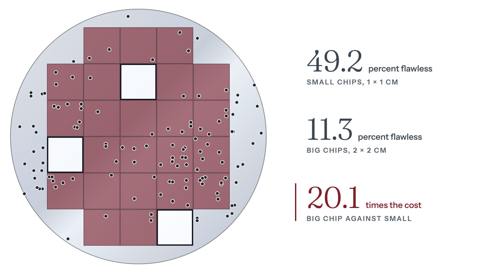
All the market sizes and shares below are CSET's, for 2025, from TechInsights data2.
Defect inspection was the largest tool family in 2025, at $6.7 billion
Process control market by tool family, 2025
| Defect inspection | $6,700M |
|---|---|
| Film and shape metrology | $2,600M |
| Mask inspection and repair | $2,200M |
| E-beam metrology | $1,300M |
| CD metrology | $1,200M |
| Overlay metrology | $991.4M |
| Defect review | $729.1M |
Sharma, Yashvardhan. “Figure 07.2: Process control market by tool family, 2025.” Chip Supply Chain: How AI Chips Are Made. Updated 27 October 2026. https://chipsupplychain.org/metrology-and-inspection/#fig-metrology-and-inspection-pc-segments
KLA says its share grew 3.6 percentage points from 2021 to 20258. It says it gained share again in 2025 across mask, optical wafer and e-beam inspection8. Its revenue for fiscal 2026, the year to June 2026, was $13.579 billion, up from $12.156 billion in fiscal 202518.
KLA's rivals are far smaller, and none holds more than 11.2 percent, by CSET's count from TechInsights data for 20252. Eight of them each held more than 1 percent of the market that year2.
KLA's patterning line, which includes several metrology products and mask inspection, grew 61 percent year on year in the June 2026 quarter3.
Wafer inspection was 49 percent of KLA's June 2026 quarter revenue
KLA revenue by product line, June 2026 quarter
| Wafer inspection | 49% |
|---|---|
| Services | 22% |
| Patterning | 20% |
| PCB and component inspection | 4% |
| Specialty semiconductor process | 4% |
| Other | 1% |
Sharma, Yashvardhan. “Figure 07.4: KLA revenue by product line, June 2026 quarter.” Chip Supply Chain: How AI Chips Are Made. Updated 27 October 2026. https://chipsupplychain.org/metrology-and-inspection/#fig-metrology-and-inspection-kla-mix
KLA says process control's share of spending on is still rising22. For memory chips, KLA credits the rise to higher performance specifications, fewer spare circuits and more logic circuitry in devices built for 23.
KLA says its systems use AI to analyze data and suppress noise, and that this helps chipmakers reach high yield sooner23. In April 2026 KLA said it had added AI to every product line over the previous five years23.
KLA says the AI build-out is making advanced packaging, and the process control it needs, more important24. KLA says it became the largest supplier of process control tools for advanced wafer-level packaging in 2025, adding 14 percentage points of share8. It expects about $1.1 billion of packaging process control revenue in 2026, up more than 70 percent24. In February 2026 Onto said it had signed a volume purchase agreement estimated at over $240 million with a (HBM) maker20. The deal covers 2D inspection and 3D , which measures the tiny metal bumps that join stacked chips, through 202720.
Chinese makers are still small in process control, but one of them is growing fast. CSET's count, built on TechInsights data, puts all Chinese firms at 0.7 percent of the market in 20252. Skyverse (Shenzhen Zhongke Feice), a maker of wafer inspection and metrology tools, reported 2,053,298,171.74 yuan of revenue in 20259. That was up 48.75 percent on 20249. In its 2025 annual report Skyverse says Chinese makers still hold a low share of China's market for these tools and that KLA holds the largest share of it25. In the June 2026 quarter China took 26 percent of KLA's revenue and Taiwan 31 percent3.
Chinese firms held 2 percent or less of each of five kinds of tool in 2025. By CSET's 2025 count from TechInsights data, they held 0.6 percent of defect inspection tools26. They held 0.4 percent of line-width measurement tools in 202527. In film and shape metrology they held 2 percent in 2025, all of it from Raintree Scientific Instruments, or RSIC28. They held no share of mask inspection and repair tools in 202529. Nor did they hold any share that year of the tools that inspect wafers during advanced packaging30.
In October 2022 the US began requiring a license for any item subject to US export rules, process control tools included, bound for certain Chinese fabs4. The rule covered fabs that made at 16/14 nm or below, memory with 128 or more layers, or at 18 nm or below31.
A December 2024 rule added specific process control tools to the list. It controls tools for defect inspection and measurement of patterned 300 mm wafers if they can find defects of 21 nm or smaller32. The control covers only tools that do this using light with a wavelength below 400 nm, an electron beam with a resolution of 1.65 nm or better, a cold field emission source, or two or more electron-beam sources32. The same rule controls overlay metrology accurate to 0.5 nm or better in two cases32. One is a tool built into the track, the machine that coats and develops the light-sensitive 33. The other is a tool that can change its measurement wavelength and take a measurement in less than 25 ms33. It also controls stand-alone wafer shape metrology that feeds corrections to immersion or EUV scanners32. A separate new entry, 3B994, covers optical film and line-width metrology for 300 mm wafers with software for measuring non-planar 33.
, the US Commerce Department bureau that wrote the rule, placed all of these tools in two new entries, 3B993 and 3B994, for items it says also have legitimate uses in older chipmaking34. For that reason BIS decided that, unlike tools built only for advanced chips, they do not warrant a license requirement covering a whole country or a presumption that BIS will refuse a license34. A new extends US jurisdiction to specified foreign-made chipmaking tools bound for or for a destination such as China35.
A fab that can buy and etchers but not sensitive inspection tools finds fewer of the defects that lower its yield, so its yield rises more slowly. Most of those tools come from one firm, KLA, which held more than half the process control market in 20252. KLA led four kinds of process control tool that year, by CSET's count2. It held 85.9 percent of defect inspection, the largest kind2. Still, every kind of process control tool had a second maker that year, by CSET's count from TechInsights data2. KLA says its share of the whole market grew from 2021 to 20258.
Recall each answer, then turn the card.
What do metrology and inspection tools do?
They check each wafer between steps for line width, layer alignment and defects.
Their measurements help a fab find out why its chips fail. Reread: How it works
Why do AI chips depend so much on finding defects?
They are among the largest chips made, and a bigger chip is more likely to have a defect.
In a textbook example at the same density of defects, 49.2 percent of chips 1 centimeter on a side come out flawless, but only 11.3 percent of chips 2 centimeters on a side. Reread: How it works
Which company leads the market for tools that measure and inspect wafers?
KLA, an American firm, with 56.8 percent of the market in 2025, by CSET's count.
Applied Materials, the next largest, held 11.2 percent. A fab cut off from KLA would find fewer of the faults that make its chips fail. Reread: Who makes it
What share of the market for wafer measuring and inspection tools did Chinese makers hold in 2025?
0.7 percent, by CSET's count.
Skyverse, a Chinese maker of these tools, says KLA holds the largest share of China's own market for them. China took 26 percent of KLA's revenue in the June 2026 quarter. Reread: Packaging, AI and China
Chapter 08Stage 8 of 14Extreme concentrationHard to substitute
The newest chips need the know-how to build the newest transistors and a fab that costs tens of billions of dollars. Only TSMC, Intel and Samsung have both.
Sharma, Yashvardhan. “Foundries and Fabs.” Chip Supply Chain: How AI Chips Are Made. Updated 27 October 2026. https://chipsupplychain.org/foundries-and-fabs/
A gate-all-around transistor, the switch in a 2 nm-class chip, drawn at true proportions. The three silicon sheets are each 6 nm thick and 30 nm wide. Each sheet is a few dozen atoms from top to bottom, roughly ten thousand times thinner than a human hair. The gold cage is the gate metal wrapping all four sides of each sheet.
A , or fab, builds the , the billions of tiny switches in every , and then wires them together. Each switch works like a valve. Current runs along a narrow strip of silicon called the channel, and a small voltage on a gate above the strip opens or shuts the flow. For decades chipmakers made the strips shorter, so the transistors switched faster and more of them fit on a chip. But once the strip gets short enough, current leaks through even when the gate is off, and the chip burns power doing nothing. The newest kind of transistor, called , cuts this leak by wrapping the gate around all four sides of the strip. A chipmaker needs two things to make the newest chips, and having one does not bring the other. The first is the know-how to build the newest switches, a long sequence of steps that have to run in exact order. In 2026 only TSMC, Intel and Samsung had it. The second is factories that cost tens of billions of dollars each, and in 2022 most of the world's capacity for the most advanced was in Taiwan. China's SMIC runs factories, but without machines or the know-how for the newest switches, its most advanced chips are . IBM developed 2 technology, but it no chips until Rapidus finishes a factory to run it, with planned for 2027. No chip company sells enough of one product to fill such a factory on its own, so chip companies share a handful of them, run by that make chips for other companies. TSMC runs the biggest, and all six of its largest plants are in Taiwan.
Since September 2024 the United States has required a license to share the know-how for building , except with countries that impose matching controls1. China has announced $43 billion to develop its own (EUV) , but in September 2025 the judged that EUV remains firmly out of reach2.
SEMI projected in 2026 that China would keep the world's largest installed capacity in 2026 and 20273. In July 2026 TSMC raised its planned investment in Arizona to $265 billion across 12 facilities4. SIA and BCG projected in May 2024 that the US share of the world's logic capacity below 10 would rise from almost none in 2022 to 28 percent by 20325.
Nvidia's Blackwell holds 208 billion switches on two , each die the largest a can print in one shot6. Every switch has to turn on fully, let almost no current through when off, and keep doing it for years. Blackwell is made by TSMC, on a custom process called 4NP6. TSMC calls a plant a GIGAFAB once it can run more than 100,000 , each a disc, twelve inches across7. It operates six of them, and every one is in Taiwan8.
China's SMIC made its most advanced on N+3, a process built without , SemiAnalysis found in June 202619. SMIC cannot buy those scanners, so it prints its tightest layers in on older machines19. China will keep the world's largest installed fab capacity in 2026 and 2027, SEMI projected in its third-quarter 2026 forecast3.
Intel is the only chipmaker that both develops and manufactures leading-edge in the United States, by its own account in August 202520. The United States had almost no logic capacity below 10 nm in 2022, and SIA and BCG projected in May 2024 that its share would reach 28 percent by 20325. In July 2026 TSMC raised its planned investment in Arizona to $265 billion across 12 facilities4. The US government agreed in August 2025 to buy a passive 9.9 percent stake in Intel, with no board seat20.
Why the gate wraps around the channel
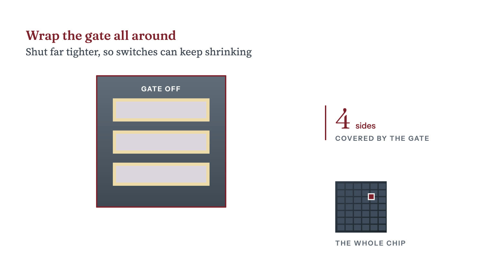
Current leaks in two main ways, straight through the gate and along the channel from end to end while the gate is off. The second leak grows as the channel gets shorter. Three fixes deal with the two leaks:
Making the switches is called the . It builds them in a fixed order, starting with the channel. In a FinFET, the older design, the fab the silicon into thin fins that stand up from the , and the gate goes over each one.
In a gate-all-around transistor, the fab instead grows alternating layers of silicon and silicon- and cuts the stack into narrow bars22. It lays a placeholder, called a dummy gate, across each bar where the real gate will go23. On either side of the placeholder it cuts deep trenches where the source and drain, the two ends of the channel, will go24. Through those trenches it etches the silicon-germanium layers back a little and fills the gaps with an insulator, the inner spacer, which keeps the gate apart from the source and drain22. Then it grows the source and drain as crystal inside the trenches, a step called 24.
Only then does the fab remove the placeholder and etch away the silicon-germanium, leaving thin silicon sheets that hang between the source and drain like shelves22. The inner spacer shields the source and drain from that etch23. The fab coats every sheet with an insulating film a few atoms thick, so the gate can control the channel without touching it. Gate metal then fills the gaps above, below and beside each sheet, covering all four sides25. Last come the contacts, small metal plugs down to the source, the drain and the gate, ready for the wiring layers above.
The steps have to run in exact order, because later layers cover earlier ones. Once gate metal surrounds a sheet, the insulating film can no longer go between the sheet and the metal. Each step is a separate , etch or . An implant step, called ion implantation, fires atoms of boron or phosphorus into chosen patches of silicon so they conduct the way the design needs.
A nanosheet transistor lays the channel flat again, stacks two to four thin sheets and wraps gate metal around each one. Each fin in a FinFET adds a fixed amount of current, so a designer who needs more current has to add a whole fin. Nanosheets can be drawn at different widths, so current can be set in finer steps.
TSMC's N2, its first nanosheet , entered in the fourth quarter of 202512. TSMC rates the follow-on N2P at 18 percent more speed at the same power and 36 percent less power at the same speed than its earlier N3E26. It gives N2P 1.2 times the of N3E and 1.15 times its chip density, but its technology page does not define either measure26. These numbers are TSMC's own claims until someone measures the silicon. Each picks its own baseline, and none publishes a density figure that can be compared with a rival's.
Intel and Samsung also make gate-all-around transistors. Intel's version, called RibbonFET, is built into its 18A process, which Intel says is in high-volume production in the United States13. Samsung got there first, starting initial production of its 3 nm gate-all-around process in June 202214. But SemiAnalysis reported in February 2023 that, because of problems, high-volume on Samsung's 3 nm gate-all-around technology were expected only in 202427.
SemiAnalysis reported in 2024 that the cell, which holds one bit in the fast memory on a , had barely shrunk since the 5 nm node28. TSMC said in 2025 that its 2 nm SRAM uses a 0.021 square-micrometer cell and gets 1.1 times the density of its previous node by tuning design and process together29. See Memory and HBM.
In a conventional chip, power and signal share one stack of copper wiring above the transistors, where wide power rails crowd out the signal wires. With , the fab grinds the wafer thin and builds a second network for power underneath it.
Intel's version, PowerVia, is part of 18A, and Intel calls it an industry first13. It cut routed area, the space a block of circuits takes once its wiring is laid out, by 11 percent and dynamic voltage droop tenfold30. Droop is the sag in supply voltage when a block of logic switches on at once. TSMC's Super Power Rail connects the backside network directly to each transistor's source and drain28. Against N2P, TSMC rates A16, which uses Super Power Rail, at 8 to 10 percent more speed, 15 to 20 percent less power and up to 1.10 times the chip density26.
TSMC plans to start A14 production in 2028, with more than 20 percent higher logic density than N231. It said in April 2026 that two more processes, A13 and A12, are scheduled to enter production in 202932.
TSMC plans four logic nodes beyond N2 for 2028 and 2029
TSMC's logic roadmap beyond N2, from its own announcements
Sharma, Yashvardhan. “Figure 08.2: TSMC's logic roadmap beyond N2, from its own announcements.” Chip Supply Chain: How AI Chips Are Made. Updated 27 October 2026. https://chipsupplychain.org/foundries-and-fabs/#fig-foundries-and-fabs-node-roadmap
A basic logic circuit needs two transistors that switch on opposite signals, and in production chips the two sit side by side. Complementary field-effect transistors, or CFETs, stack the two on top of each other33. The research institute imec sees them as an attractive design for logic nodes beyond 1 nm33.
Wiring the transistors together is called the , and it has become as hard to make as the transistor. Copper, the usual wiring metal, seeps into the insulator around it, so every wire needs a barrier, a liner and a cap34. As the most critical wiring levels drop below a 20 nm , those extra layers take a large share of the wire's width34. Pitch is the distance from the center of one wire to the center of the next. Two metals are moving into those narrow levels.
A foundry makes chips designed by other companies, running all their designs on the same tools. TSMC and UMC, both based in Taiwan, make chips only for other companies. TSMC, founded in 1987, pioneered this pure-play model37.
Inside a fab, a chip is built up in layers, and a similar loop of steps repeats for each one. Wafers travel in batches, called , inside a sealed pod called a FOUP, short for front-opening unified pod. Entegris, a US maker of these pods, offers a standard version that holds 25 wafers38. An overhead track carries the pod from tool to tool.
At each tool a robot lifts one wafer out and the tool does its one job, such as depositing a film, printing a pattern, etching it, cleaning it or measuring it. Then the robot puts the wafer back, and the pod moves on to the next tool, often across the building. When a layer is finished, the loop starts again with the next one.
Turning silicon into a finished, packaged chip takes 1,000 to 1,500 steps, depending on how complex the chip is, the Semiconductor Industry Association said in 202539. In 2021 the association put the time to make a finished wafer at about 12 weeks on average, and up to 14 to 20 weeks for advanced processes40. The pod keeps the wafer clean for all of that time, because the wafer never meets the room's air.
How a fab builds a chip, layer by layer
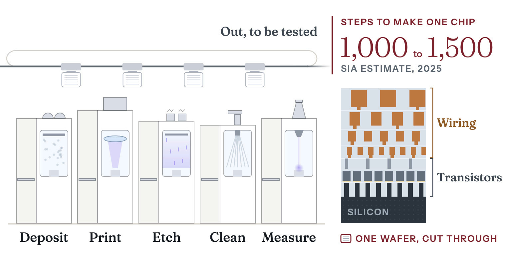
Each tool is set by a recipe, the list of gases, temperatures and times for one step. A foundry offers every customer the same list of recipes, so every design in the building can run on the same shared tools. The tools run day and night, because an idle tool earns nothing. The finished wafer is tested (see Test and assembly), then cut and packaged.
Chips at 7 nm and below, meaning the newest processes, were 79 percent of TSMC's wafer revenue in the third quarter of 202641. That share split into 33 percent at 3 nm, 28 at 5 nm, 10 at 7 nm and 8 at 2 nm41. TSMC's revenue for the quarter was $46.72 billion, at a 66.4 percent 41.
Intel and Samsung design and sell their own chips and rent out capacity too. Renting out capacity is harder for them, because customers dislike handing their designs to a competitor and each company's own products take its best capacity. Intel Foundry reported $5.8 billion of segment revenue in the second quarter of 2026 and an of $2.089 billion42. Only $293 million of that revenue came from outside customers43.
A new fab costs tens of billions of dollars. In 2023 the Boston Consulting Group (BCG) estimated that a new fab for chips at 2 nm and below, completed in 2026, would cost $35 to $43 billion to build, equip and run over ten years10. Building and equipping alone takes as much as $20 to $25 billion of capital for a leading-edge fab, the Semiconductor Industry Association (SIA) told the US Senate in March 202617.
Most of TSMC's capacity is in its six GIGAFABs. Together, the plants TSMC and its subsidiaries run had capacity for more than 17 million wafers a year in 2025, counted as if each were the standard 12-inch size8. The six largest plants had a combined capacity of more than 13 million7. The other plants are five smaller fabs in Taiwan, two in China, two in the United States and one in Japan8. In July 2026 TSMC announced another $100 billion for four more fabs at 2 nm or below, taking its planned investment in Arizona to $265 billion across 12 facilities4.
In 2025 the biggest AI chip designers used most of the world's supply of two inputs but only a small share of its advanced chipmaking. Epoch AI estimated that the four largest used around 90 percent of the world's packaging capacity and memory supply44. CoWoS is TSMC's packaging for AI chips, and HBM is the stacked memory that sits beside them. The same four used only 12 percent of advanced logic production44. See Advanced packaging.
AI have usually trailed the leading edge. A die as large as theirs is more likely to hold a defect45. So the share of dies that work, called the yield, gets high enough only once a process has run long enough to cut its defect rate.
Nvidia's Blackwell is made on an older TSMC process than AMD's MI455X. Epoch AI estimated in December 2025 that a 300 mm wafer on Blackwell's 4NP process costs $17,00011. AMD's MI455X, launched on 23 July 2026, is made on TSMC's 2 nm and 3 nm processes46. It spreads its compute across eight separate dies47.
TSMC, Intel and Samsung build gate-all-around nodes with (EUV) . China's SMIC builds nodes without it19. SemiAnalysis reported in September 2026 that Intel's Panther Lake, Samsung's Exynos 2600 and Apple's A20 Pro, which is made on TSMC's N2, all use gate-all-around transistors48.
In August 2025 Intel called itself the only semiconductor company that both develops and manufactures leading-edge logic chips in the United States20. That month the US government agreed to buy 433.3 million newly issued Intel shares at $20.47 each, or $8.9 billion in all, for a 9.9 percent stake20. The stake is passive, with no board seat20. The deal also gave the government a five-year warrant to buy a further 5 percent of Intel at $20 a share20. It can use the warrant only if Intel's ownership of its foundry business falls below 51 percent20.
In 2026 Intel began high-volume manufacturing of some of its Panther Lake processors using ASML's extreme ultraviolet scanners42. But it is building fewer fabs than it planned. In July 2025 Intel said it would no longer go ahead with planned projects in Germany and Poland and would slow construction in Ohio49.
In December 2024 the US Commerce Department awarded Samsung up to $4.745 billion of funding, to support more than $37 billion of planned investment in Central Texas50. That plan covers two new leading-edge logic fabs and a research fab in Taylor, and an expansion of Samsung's existing plant in Austin50.
China's SMIC has the factories without the know-how for the newest transistors. Its revenue rose 16.2 percent to $9.327 billion in 2025, at a 21 percent gross margin15. Its lines ran 93.5 percent full, on monthly capacity above a million wafers counted in the smaller 8-inch size15.
A node's name, such as 7 nm, does not measure any feature on the chip. SMIC's N+3, its third-generation 7 nm process, sets its narrowest wires 32.5 nm apart, tighter than the 36 nm in Intel's Panther Lake chips on 18A19. But the 18A process itself allows wires 32 nm apart19. SemiAnalysis called the comparison an incomplete, cherry-picked metric19. N+3 packs 113.4 million transistors per square millimeter, against 107.7 for TSMC's N619.
Two research groups disagree about where Huawei's Ascend AI chips are made. Georgetown University's Center for Security and Emerging Technology (CSET) reported in June 2024 that the Ascend 910B was believed to be made on SMIC's N+2 process51. But the research firm SemiAnalysis judged in April 2025 that most Ascend 910B and 910C chips were made on TSMC's 7 nm process52. It said Huawei got around the sanctions that barred it from TSMC by buying about $500 million of 7 nm wafers through another company, Sophgo52.
IBM shows the opposite split. Its 2 nm technology yields no chips until Rapidus, a state-backed newcomer in Japan, finishes a factory to run it. The two firms agreed in December 2022 to develop that technology further for production at Rapidus's plant in Japan53.
In July 2025 Rapidus said it had started making 2 nm prototypes at the plant, in Chitose, Hokkaido, and would begin mass production in 20279. In February 2026 it raised 267.6 billion yen from the Japanese government and 32 companies to reach 2 nm mass production by 202716. By June 2026 Rapidus had raised 424.95 billion yen in equity54.
A firm that wants to make the newest chips has to develop its own process, because TSMC, Intel and Samsung do not sell their leading-edge process flows. A process flow sets the steps, their order and the tools for each. In September 2024 the United States began requiring a license to share the know-how for building gate-all-around transistors, except with countries that impose matching controls1.
China has money for chipmaking but cannot buy EUV scanners. It launched its third in May 2024 with 344 billion yuan, about $47 billion55. China's 7 nm chips have been made on machines, a generation behind EUV2. China had stockpiled those machines from ASML, the Dutch scanner maker, before export restrictions took effect2. SMIC gets fine features out of them by building its tightest layers in several patterning steps19.
In July 2026 Reuters reported that a Shanghai state firm had begun making home-grown scanners56. Reuters's own source said the firm's machine still needed testing and was far from matching ASML's models56.
Domestic EUV is further off. China has announced $43 billion to develop it2. In September 2025 the (CSIS) judged that EUV remains firmly out of reach despite massive state investment2. See Lithography.
The factories are concentrated too. In 2022 South Korea and Taiwan held almost all of the world's logic capacity below 10 nm, and the United States had almost none57. Taiwan alone held 69 percent5. In May 2024 SIA and BCG projected that the US share of that capacity would reach 28 percent by 20325.
China leads the world in capacity for logic chips made at 28 nm or older, but little of its capacity is advanced58. Most of the world's wafers come off such , which make power devices, analog chips and microcontrollers. Across all nodes, old and new, the industry association SEMI forecast in June 2024 that China would have installed capacity of 10.1 million wafers a month in 2025, the most of any region59. It forecast 5.8 million for Taiwan, out of a world total of 33.7 million, all counted in the 8-inch size59. In the third-quarter 2026 update of its World Fab Forecast, SEMI projected that China would keep the largest installed capacity in 2026 and 20273.
China led SEMI's 2025 capacity forecast at 10.1 million 8-inch-equivalent wafers monthly
SEMI's June 2024 forecast of installed wafer fab capacity by region in 2025, all nodesmillion 8-inch-equivalent wafers per month
| China | 10.1 million 8-inch-equivalent wafers per month |
|---|---|
| Taiwan | 5.8 million 8-inch-equivalent wafers per month |
| South Korea | 5.4 million 8-inch-equivalent wafers per month |
| Japan | 4.7 million 8-inch-equivalent wafers per month |
| Americas | 3.2 million 8-inch-equivalent wafers per month |
| Europe and Mideast | 2.7 million 8-inch-equivalent wafers per month |
| SE Asia | 1.8 million 8-inch-equivalent wafers per month |
Sharma, Yashvardhan. “Figure 08.5: SEMI's June 2024 forecast of installed wafer fab capacity by region in 2025, all nodes.” Chip Supply Chain: How AI Chips Are Made. Updated 27 October 2026. https://chipsupplychain.org/foundries-and-fabs/#fig-foundries-and-fabs-capacity-by-region
Chip production in Taiwan faces three risks:
Building capacity outside Taiwan is slow, and TSMC has yet to build a gigafab anywhere else8. SemiAnalysis wrote in December 2025 that a foundry needs highly skilled engineers to get the most working chips from each wafer18. It judged that finding enough workers remained a major challenge for TSMC in Arizona18.
Recall each answer, then turn the card.
What two things does a chipmaker need to make the newest chips?
The know-how to build the newest transistors, and factories that cost tens of billions of dollars.
Having one does not bring the other. China's SMIC runs factories, but its most advanced chips are 7 nm-class, and in 2026 only TSMC, Intel and Samsung had both. Reread: How it works
Why do the newest transistors wrap the gate around the channel?
To cut the current that leaks when the switch is off.
Shorter channels switch faster but leak more when the gate is off. A gate on all four sides cuts that leak further than a fin, whose gate covers three. Reread: How it works
What is a foundry?
A company that makes chips designed by other companies.
A chip factory, or fab, costs tens of billions of dollars, and no chip company sells enough of one product to fill a fab by itself. Reread: The foundry and the fab
Where are TSMC's largest plants?
All six are in Taiwan.
In 2025 they could make more than 13 million wafers a year, out of more than 17 million for the whole company. Taiwan held 69 percent of the world's logic capacity below 10 nm in 2022. Reread: Capacity and cost
How does China's SMIC make advanced chips without an EUV machine?
It builds its tightest layers in several patterning steps on deep-ultraviolet tools.
China cannot buy EUV scanners. With this method SMIC makes chips on N+3, its third-generation 7 nm process. Reread: The chokepoint
Chapter 09Stage 9 of 14Extreme concentrationHard to substitute
SK hynix, Samsung and Micron make nearly all high bandwidth memory (HBM), the stacked memory beside AI chips. SK hynix took 63.2 percent of HBM revenue in 2025.
Sharma, Yashvardhan. “Memory and HBM.” Chip Supply Chain: How AI Chips Are Made. Updated 27 October 2026. https://chipsupplychain.org/memory-and-hbm/
A twelve-high HBM stack pulled apart: a logic die at the base, shown in copper, and twelve memory dies above it. The finished part is 11 by 11 mm and 0.72 mm tall. Each memory die is ground to about 30 micrometers, thinner than a human hair. The footprint is to scale, but the heights are exaggerated about fifteen times.
, or HBM, is where an AI keeps the numbers it is working on, and it is built to hand them over fast. A memory maker tiny holes into each memory , fills them with copper and grinds the wafer until the copper shows through its back. It tests each of the wafer's chips and stacks up to sixteen good ones into a cube, with every layer wired to the ones below. The cube then sits beside the processor, the chip that does the calculating. Stacking is the hard part because each chip is ground thinner than a human hair and the finished cube has to stay within a height limit of less than a millimeter. One chip that fails after stacking can scrap the whole cube. Only SK hynix, Samsung and Micron make HBM . One US export rule covers HBM from all three, including the two based in South Korea.
US-based Micron went from 5.8 percent of revenue in 2024 to 23.1 percent in the first quarter of 2026, according to IDC figures in SK hynix's US prospectus1. Over the same period, Samsung's share fell from 37.8 percent to 20.5 percent1.
Since December 2024, a US license has been required, unless an exception applies, to export to China any HBM moving more than 2 GB per second per of its area2. The Institute for Progress reported in October 2025 that China's CXMT planned to produce HBM3 in 20263. Even so, working from TrendForce's estimate of world HBM shipments, the institute projected that producers outside China would make 70 times as much HBM as China in 20263. In June 2026 SemiAnalysis judged that CXMT was still struggling to stabilize supply of eight-high HBM34.
An moves numbers from memory to its arithmetic units and back. The US office wrote in December 2024 that a processor cannot reach its full capabilities unless its memory capacity and bandwidth rise with its speed2.
Each layer in the cube is a , the ordinary kind of computer memory. Each layer is ground thin and bonded to the one below through tiny metal called microbumps. The whole stack sits on a , a chip that manages it. The copper-filled holes are called , or TSVs. They let a signal reach any layer without a wire running around the outside.
An cube has a 1,024-bit interface, meaning it exchanges data with the processor over 1,024 wires at once8. That is sixteen times wider than a standard DDR5 memory module, the memory stick in a PC8. HBM4 doubles that to 2,048 wires9. Ordinary memory cannot be made that wide, because the pins would not fit on a . The stack can, since its wires run down through the TSVs and across a to the processor beside it, with no board in the way8. The interposer is a slice of silicon carrying fine wiring, set under both the memory and the processor (see Advanced packaging).
Inside a memory stack
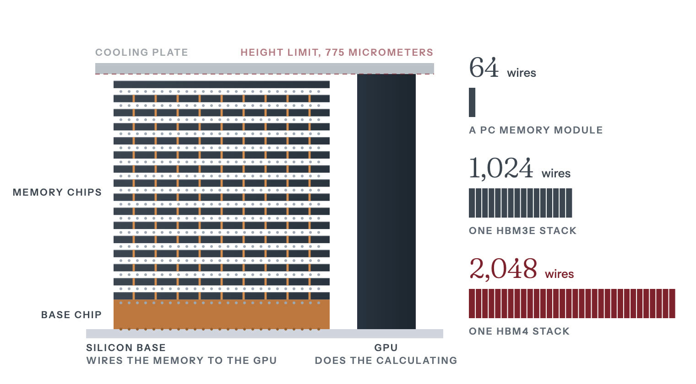
A chip needs the width most when it answers a prompt. Training reuses each stored number across a huge multiplication, so a chip can fetch little and compute a lot. But to generate one word of an answer, the chip reads the whole model from memory, plus the whole record of the conversation so far. Then it does a little arithmetic and waits for the next read. That record grows with the length of the conversation and the number of users served at once. So memory size and speed usually set how many people one chip can serve.
| Generation | Interface | Bandwidth per stack | Capacity per stack |
|---|---|---|---|
| HBM3E | 1,024-bit, 16 channels (32 pseudo-channels) | over 1.2 | 24 GB (8 chips), 36 GB (12 chips) |
| HBM4 | 2,048-bit, 32 channels | over 2.0 TB/s, up to 3.3 TB/s | up to 64 GB (16 chips, 32 Gb ) |
Micron's HBM3E comes in two sizes, 24 GB with eight chips stacked and 36 GB with twelve10.
All three HBM makers run their HBM4 faster than the 8 Gb/s per pin in the industry standard. The standards body published JESD270-4 in April 2025, setting the 2,048-bit interface and 2 TB/s per stack at 8 Gb/s per pin9. SK hynix says it was first to complete HBM4 development, in September 2025, at over 10 Gb/s per pin11. Samsung says it began and shipped the first commercial HBM4 in February 2026, at 11.7 Gb/s per pin, with a 4 logic base die12. Micron's parts run above 11 Gb/s for more than 2.8 TB/s per stack13. Micron says it began volume production of its 36 GB twelve-high HBM4 in fiscal 2026 and expects to volume of HBM4E, the next generation, in calendar 202714.
Through HBM3E, SK hynix made its own base dies, the chips at the bottom of each stack15. For HBM4 it chose TSMC's advanced logic process, so the base die can hold more functions15. As a result, TSMC, which does not make HBM, makes the base die for SK hynix's HBM4.
| HBM3E, 1,024-bit | 1,200 GB/s |
|---|---|
| HBM4, 2,048-bit | 2,000 GB/s |
| HBM4, advanced configurations | 3,300 GB/s |
Sharma, Yashvardhan. “Figure 09.2: Bandwidth per HBM stack.” Chip Supply Chain: How AI Chips Are Made. Updated 27 October 2026. https://chipsupplychain.org/memory-and-hbm/#fig-memory-and-hbm-hbm-bandwidth
is the next step, but it is not ready. It would join the chips copper to copper and to insulator, with no solder and no filler17. In chip packaging generally, microbumps sit about 20 micrometers apart, and hybrid bonds can sit less than 1 micrometer apart17. A tech note on SK hynix's newsroom says full-scale adoption in HBM is most likely at HBM4E or HBM5, where stacks are projected to pass twenty layers17. Taller stacks trap more heat, and removing it becomes a major challenge at 16 to 20 layers17. The same tech note says hybrid bonding manages that heat more efficiently17.
Three firms took more than 90 percent of the revenue from ordinary computer memory, or DRAM, in the first quarter of 2026, according to IDC figures in SK hynix's US prospectus1. HBM comes from the same three, SK hynix, Samsung and Micron1. No other company has both DRAM and a stacking line of its own. SK hynix says only a few firms have the expertise and resources to design, make and package memory chips1. It says HBM also needs advanced production processes, such as TSV packaging, and must pass the rigorous testing and approval processes its customers set1.
SK hynix says it was the first company to mass-produce several generations of HBM, including HBM3 and HBM3E1.
SK hynix and Micron are both adding HBM capacity. SK hynix broke ground in August 2026 on an plant in West Lafayette, Indiana, an investment of over $4 billion19. Micron is modernizing and expanding its DRAM and HBM production capacity in Taiwan14. It has also broken ground on an HBM advanced packaging plant in Singapore to expand its packaging capacity from early 202714.
SK hynix led HBM revenue in 2024, in 2025 and in the first quarter of 2026, and in that quarter Micron passed Samsung for second place. In 2024 SK hynix took 56.4 percent, Samsung 37.8 and Micron 5.81. In 2025 the three took 63.2, 19.3 and 17.4 percent1. In the first quarter of 2026 they stood at 56.4, 20.5 and 23.1 percent, which put SK hynix back at its 2024 share1. The split is public because SK hynix registered shares in the United States, and its US prospectus credits the research firm IDC1.
SK hynix took 63.2 percent of global HBM revenue in 2025
Global HBM revenue by supplier, 2025
| SK hynix (KR) | 63.2% |
|---|---|
| Samsung (KR) | 19.3% |
| Micron (US) | 17.4% |
Sharma, Yashvardhan. “Figure 09.3: Global HBM revenue by supplier, 2025.” Chip Supply Chain: How AI Chips Are Made. Updated 27 October 2026. https://chipsupplychain.org/memory-and-hbm/#fig-memory-and-hbm-hbm-suppliers
Micron sees HBM reaching $100 billion in 2028, from an estimated $35 billion
HBM market, Micron's estimate for 2025 and forecast for 2028
| 2025 | $35B |
|---|---|
| 2028 | $100B |
Sharma, Yashvardhan. “Figure 09.4: HBM market, Micron's estimate for 2025 and forecast for 2028.” Chip Supply Chain: How AI Chips Are Made. Updated 27 October 2026. https://chipsupplychain.org/memory-and-hbm/#fig-memory-and-hbm-hbm-revenue
As HBM grows, memory makers have less factory capacity left for traditional DRAM. In December 2025 Micron put the HBM market at about $35 billion in 2025 and forecast that it would reach around $100 billion in 20285. Micron says HBM needs more wafers than traditional DRAM, the kind used in PCs and phones, to make the same number of bits14. SK hynix says the industry's shift of production capacity to HBM has left traditional DRAM undersupplied1. The shortage, it says, helped drive a significant price recovery for that DRAM from the third quarter of 20251.
The leading accelerators made outside China use HBM from SK hynix, Samsung or Micron. Nvidia's carries 20 TB of HBM3E at up to 576 TB/s20. Each Nvidia Rubin carries up to 288 GB of HBM4 at up to 22 TB/s21. AMD's MI355X carries 288 GB of HBM3E at 8 TB/s22.
A US export rule of December 2024 covers every HBM stack that was in production when it was published. The (BIS), the US export control office, published the rule on 5 December 20242. It added an export classification, .c, for "High bandwidth memory (HBM) having a '' greater than 2 gigabytes per second per "2. Its technical note defines that density as the memory bandwidth in gigabytes per second divided by the area of the package or stack in square millimeters2. The rule also covers stacks made outside the United States, through a , which applies US controls to goods made abroad with American technology2. BIS stated in the rule that all HBM stacks then in production exceeded that threshold2.
BIS reviews license applications to ship controlled HBM to or a destination such as China according to where the buyer is headquartered23. It presumes it will deny a license when the buyer or its ultimate parent is headquartered in one of those places, and presumes approval otherwise23.
Two provisions narrow the control. , at 740.25, applies to exporters headquartered in the United States or a Country Group A:5 ally7. It lets them ship HBM below 3.3 GB per second per square millimeter without a license, including to Macau and Country Group D:5 destinations such as China7. HBM sent to those destinations must be bought directly by the designer of the chip it will be packaged into7. Every shipment under the exception must go straight to the packaging site7. The rule also excludes chips that combine HBM and logic and whose main function is processing, which other chip controls may cover instead2.
The think tank said in December 2024 that the rules still allowed HBM2, a generation introduced in 2016, to go to China, with limits on who could buy it and what for24. It also said Nvidia's H20, whose HBM3 is packaged with the processor, was then still exportable under the performance limits for AI chips24.
China's strongest DRAM maker, CXMT, was still struggling to make HBM in steady supply by June 2026. In December 2024 CSIS called CXMT one of only two Chinese firms with a credible path to producing advanced HBM, though it did not name the other24. The Institute for Progress reported in October 2025 that CXMT was planning to produce HBM3 in 20263. It also estimated that China would make virtually no HBM in 20253. In June 2026 SemiAnalysis judged that CXMT was still struggling to stabilize supply of eight-high HBM3, with even greater challenges at twelve-high4.
Huawei plans to use HBM of its own design in its Ascend 950 AI chips, but when it announced the designs in September 2025 it did not say who would make the memory6. The two designs are called HiBL 1.0 and HiZQ 2.06. Huawei said the 950DT, due in the fourth quarter of 2026, would carry 144 GB of HiZQ 2.0 at 4 TB/s6.
Recall each answer, then turn the card.
What is HBM?
High-bandwidth memory, made of memory chips stacked into a cube beside the processor and wired to pass data fast.
Before stacking, each chip gets holes filled with copper, which wire every layer to the ones below. A stack holds up to sixteen chips. Reread: How it works
Why does an AI chip need such fast memory?
For each word it writes, it reads the whole model from memory.
Memory speed and size usually set how many users one chip can serve. Reread: How it works
Who makes HBM?
SK hynix, Samsung and Micron make nearly all of it.
SK hynix sold 63.2 percent of it in 2025 and Samsung 19.3 percent. A fourth maker would need both the newest DRAM, the kind of memory chip used in PCs and phones, and a line that stacks it. Reread: Who makes it
How much HBM did China make in 2025?
Virtually none, the Institute for Progress estimated in October 2025.
China's strongest DRAM maker, CXMT, was still struggling to make HBM in steady supply by June 2026. A US export rule of December 2024 controls every HBM stack that was in production when the rule was published. Reread: The chokepoint
Chapter 10Stage 10 of 14Extreme concentrationModerately hard to substitute
Epoch AI estimates that in 2025 Nvidia, Google, AMD and Amazon used around 90 percent of the capacity for CoWoS, TSMC's packaging for AI chips.
Sharma, Yashvardhan. “Advanced Packaging.” Chip Supply Chain: How AI Chips Are Made. Updated 27 October 2026. https://chipsupplychain.org/advanced-packaging/
A CoWoS-L package, pulled apart. Two logic dies and eight HBM stacks sit on the interposer, shown in silver with its copper wiring. In CoWoS-L the interposer is fine redistribution wiring with small embedded silicon bridges. It sits on a resin substrate with a grid of solder balls underneath. The chips together cover about 2,700 mm2, a little over three reticle fields. Footprints are to scale. Thicknesses and the gaps between layers are exaggerated.
Packaging joins finished into one component and mounts them on a small , called a , wired far more coarsely than the chips themselves. A , which prints a chip's circuits, can cover only a rectangle about the size of a postage stamp in one shot. Many leading , Nvidia's Blackwell among them, need more logic than fits in that rectangle. So they are built from several chips, called , set side by side on an , a layer of much finer wiring that links them and sits on the substrate. Stacks of memory chips sit on the same interposer, a few millimeters away. The interposer is either one piece of silicon or layers of fine copper wiring that often carry small where the links are densest. Silicon expands less than the resin substrate beneath it when heated, so the package can warp and its joints crack. Preventing that in is hard. Nvidia, Google, AMD and Amazon all use TSMC's interposer packaging, called , made in Taiwan.
Epoch AI estimates that in 2025 Nvidia used 60.3 percent of all capacity for , TSMC's packaging1. On the July 2026 earnings call, TSMC's chief executive, C.C. Wei, said its packaging capacity was so tight that it limited customers' growth2. Asked about Intel's -T packaging, he said he hoped it would take some of the load off TSMC2.
In a TrendForce ranking by 2024 revenue, which CSET cites, four of the top ten outsourced firms that package and test are headquartered in China3. But in 2025 Chinese firms had 5.3 percent of the market for fabrication tools, against 65.8 percent for US firms, by CSET's analysis of TechInsights data4.
A prints a rectangle 26 mm by 33 mm, or 858 , in one exposure5. That area is called the . Every leading , counting its , covers more area than that. Packaging is the stage that lets an accelerator be larger than one reticle field, and the packaging method limits how much larger it can be.
Chinese firms had 5.3 percent of the market for fabrication tools built for in 2025, by CSET's analysis of TechInsights data4. Between 2019 and 2024 they gained 5 percentage points of share in test tools but lost share in bonding and other conventional assembly and packaging tools3.
A second reason for the is high bandwidth memory (HBM). An HBM4 stack connects through 2,048 data signals, packed too tightly for a standard , so the memory sits beside the logic on the interposer15. Even Nvidia's H100, whose single is 814 mm2 and fits inside one reticle field, carries five HBM stacks16. Epoch AI counts TSMC's packaging among the three inputs the H100 needs, along with its logic die and its HBM1.
The parts of an AI accelerator
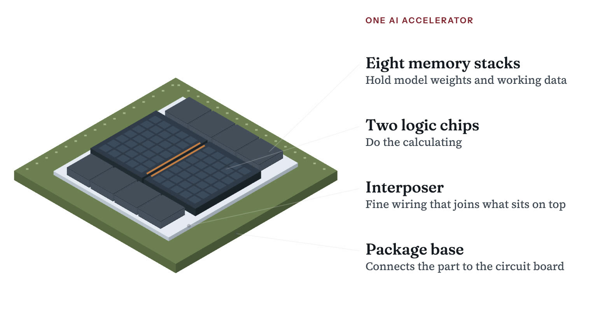
CoWoS stands for chip on wafer on substrate, the order in which the parts are joined. For CoWoS-S, the version whose interposer is one piece of silicon, TSMC makes a that carries wiring and but no . Vias are metal-filled holes that join one layer of wiring to the next.
TSMC bonds the logic dies and memory stacks face down onto that wafer with . These are dots of solder, and each dot is one electrical joint. In Intel's Foveros , which can also set side by side on a silicon interposer, the microbumps sit 36 apart, less than half a hair's width17. Then TSMC cuts the interposer out of the wafer and attaches it to the resin substrate, which later goes onto a .
One cracked joint can scrap a package holding eight tested HBM stacks and two large, expensive logic dies. Epoch AI estimated in December 2025 that CoWoS-L packaging, the version built with small , added about $1,100 to the cost of building one Nvidia B2006. That is more than its estimate of about $900 for the B200's two logic dies6.
| Family | Carrier | Size limit | Used for |
|---|---|---|---|
| CoWoS-S | Full silicon interposer | Up to 3.3x | H100-class parts |
| CoWoS-R | Resin interposer with fine | Above 3.3x reticle | Cost-sensitive, fewer HBM stacks |
| CoWoS-L | Redistribution wiring with local silicon bridges | 5.5x reticle in production, 9.5x in development | Blackwell, Rubin |
In 2.5D packaging the sit side by side and connect through an interposer or silicon bridges beneath them. TSMC has run CoWoS since 201218. CoWoS-S has the finest wiring, but its interposer is one unbroken piece of silicon whose (the share of interposers that work) falls as the area grows. CoWoS-L replaces that piece of silicon with redistribution layers (RDL) of fine copper wiring and embeds small silicon bridges where the wiring is densest19.
Intel's EMIB embeds similar silicon bridges in the resin substrate17. SemiAnalysis reported in March 2026 that EMIB was gaining traction, with Amazon's Trainium and Google's both adopting it12.
Blackwell was the first high-volume design on CoWoS-L, and packaging problems at TSMC and in Nvidia's design limited its supply20. The bridges that carry the 10 link between the two logic dies must be placed very precisely20. The dies, bridges, interposer and substrate also expand at different rates, and that mismatch caused warpage20.
In 3D packaging one die sits on top of another, and the joints between them are moving from solder microbumps to . Intel's Foveros stacks dies face to face and joins them with solder microbumps17. Its newer Foveros Direct drops the solder and bonds the copper pads directly, a method called hybrid bonding17. Hybrid bonding joins the around the pads as well as the copper, with no bumps in between21. That lets the connections sit far closer together than microbumps allow17. TSMC's SoIC also uses hybrid bonding, and AMD's 3D V- processors use SoIC to attach an extra cache die to the processor die22.
TSMC put SoIC into volume production in 2022, stacking SRAM memory chips on logic wafers23. Its 3 nm SoIC entered volume production in 202519. An A14-on-A14 version, stacking dies made on TSMC's 1.4 nm process, is due in 202913. It will carry 1.8 times the die-to-die connection density of SoIC that stacks 2 nm dies on 2 nm dies13.
In a stack, power for the top die has to pass up through vertical wires in the die below, called (TSVs)22.
SoIC bonding also brings optics into the package. TSMC's COUPE uses SoIC to join a silicon photonics chip, which sends data as light, to its electrical control chip19. TSMC said in April 2026 that COUPE on substrate would begin production in 202613. It also said that putting COUPE inside the package gives twice the power efficiency of a pluggable version on the circuit board13.
builds packages on a large rectangular panel instead of a round wafer, so rectangular packages fit it with less waste at the edges. See Test and assembly. , the semiconductor standards body, published a standard called SPHBM4 on 13 July 2026. It puts HBM4 memory on a carrying 512 data signals instead of 2,048, each running four times as fast to keep the same bandwidth15. With fewer signals, the connections can be spaced widely enough to mount the stack on a standard resin substrate instead of the silicon interposer15.
TSMC does not publish its CoWoS capacity1. Industry estimates from SemiWiki and TrendForce, compiled by Epoch AI, put it at about 65,000 to 75,000 at the end of 2025, up from 35,000 to 40,000 a year earlier1.
In 2024 TSMC was more than doubling CoWoS capacity and still could not keep up with demand. On the July 2024 earnings call, TSMC's chief executive, C.C. Wei, said TSMC was more than doubling CoWoS capacity in 2024 and would more than double it again in 202524. He said he could not yet balance supply and demand24. At its 2024 symposium TSMC had said CoWoS capacity would grow at a 60 percent compound annual rate over the next few years24. Asked about that rate on the call, Wei did not repeat it24.
In October 2025 Wei would say only that TSMC was still working to increase CoWoS capacity in 2026, and that it would probably give the actual capacity figure in 202625. He said capacity (making the chips) and capacity (packaging them) were both, in his words, very tight25.
By Epoch AI's estimate, four chip designers used most of the world's CoWoS capacity in 2025 but only a small share of its advanced chipmaking. Epoch AI compared each chip designer's use of components with world supply1. It puts Nvidia at 60.3 percent of all CoWoS capacity in 2025, with a 90 percent confidence interval of 56.5 to 64.31. Google took 13.5 percent, AMD 8.4 and Amazon 7.41. Together those four used around 90 percent of global CoWoS capacity and HBM supply, with HBM measured by value1. But they used only 12 percent of advanced logic die production1.
Nvidia used an estimated 60.3 percent of CoWoS capacity in 2025
Estimated share of CoWoS capacity used, 2025
| Nvidia | 60.3% |
|---|---|
| 13.5% | |
| AMD | 8.4% |
| Amazon | 7.4% |
| Everyone else | 10.4% |
Sharma, Yashvardhan. “Figure 10.2: Estimated share of CoWoS capacity used, 2025.” Chip Supply Chain: How AI Chips Are Made. Updated 27 October 2026. https://chipsupplychain.org/advanced-packaging/#fig-advanced-packaging-cowos-buyers
In March 2026 the research firm SemiAnalysis judged that front-end capacity had become the dominant bottleneck and that CoWoS constraints were easing12. It said TSMC was planning CoWoS capacity around how many wafers N3, its 3 nm process, could produce, because added packaging capacity is of no use without front-end wafers to fill it12. It also noted that CoWoS packaging can be, and has been, outsourced to assembly firms such as ASE and Amkor12.
TSMC gave a different account four months later. On the July 2026 earnings call, Wei said TSMC's packaging capacity was so tight that it limited customers' growth2. Asked about Intel's EMIB-T, he said he welcomed the extra flexibility and hoped it would take some of the load off TSMC2. Later in the call he said back-end capacity was still in shortage26.
TSMC plans 14-reticle CoWoS interposers for 2028, up from 3.5 in 2024
CoWoS interposer size on TSMC's roadmap
| 2024, CoWoS-L | 3.5 reticles |
|---|---|
| 2026, in production | 5.5 reticles |
| In development, no date | 9.5 reticles |
| 2028 | 14 reticles |
Sharma, Yashvardhan. “Figure 10.3: CoWoS interposer size on TSMC's roadmap.” Chip Supply Chain: How AI Chips Are Made. Updated 27 October 2026. https://chipsupplychain.org/advanced-packaging/#fig-advanced-packaging-cowos-reticles
Three kinds of firm package chips. TSMC, which makes chips for others, and Intel, which makes its own, do it in their own back-end fabs. firms do the rest. Intel opened 9 in Rio Rancho, New Mexico, in January 2024 to make its Foveros 3D packages in volume7. It called the plant the only US factory producing the most advanced packaging at scale7.
ASE leads the outsourced assembly and test firms, and Amkor is the largest one headquartered in the United States. ASE Technology Holding had revenue of NT$645.4 billion in 2025, about 40 percent of it from its electronics manufacturing arm, a business separate from assembly and test8. Its assembly, test and materials business brought in NT$389.2 billion, up from NT$325.9 billion in 20248. Amkor had net sales of $6.71 billion in 20259.
Each of the key packaging tools comes from a small number of makers.
TSMC and Amkor both plan advanced packaging plants in Arizona. TSMC's Arizona commitment reached $265 billion in July 2026 and covers two advanced packaging plants alongside 10 fabs29. Amkor started building a $7 billion campus in Peoria, Arizona, in October 2025 and expects production from early 202814. The US Commerce Department awarded Amkor up to $407 million in funding for the site in December 202430. In October 2025 Wei said a large outsourced packaging partner, which he did not name, was already breaking ground in Arizona31. He said its plant was on an earlier schedule than TSMC's own two packaging fabs there31.
China-based suppliers held 69 percent of linear and discrete testers in 2024
China-based suppliers' share of selected tool segments, 2024
| Test, linear and discrete | 69% |
|---|---|
| Burn-in test | 9% |
| Advanced packaging fabrication tools | 7% |
| SoC test | 5% |
Sharma, Yashvardhan. “Figure 10.4: China-based suppliers' share of selected tool segments, 2024.” Chip Supply Chain: How AI Chips Are Made. Updated 27 October 2026. https://chipsupplychain.org/advanced-packaging/#fig-advanced-packaging-china-backend-tools
Four of the top ten outsourced assembly and test firms by 2024 revenue are headquartered in China, by a TrendForce ranking that CSET cites3. JCET, a leading Chinese assembly and test firm, had record revenue of RMB 38.87 billion in 2025, up 8.1 percent10. JCET says its XDFOI packaging platform has entered high-volume manufacturing with redistribution-layer interposer, silicon interposer and silicon bridge options32. Those are the same three kinds of carrier that TSMC sells as CoWoS-R, CoWoS-S and CoWoS-L.
Chinese firms had a small share of the market for advanced packaging tools in 2024 and 2025, and they lost ground in bonding. In 2024 Chinese firms had 7 percent of the market for advanced packaging fabrication tools3. Between 2019 and 2024, they gained 5 percentage points of share in test tools and 4 points in fabrication tools built for advanced packaging, by CSET's analysis of TechInsights data3. But they lost share in bonding and other conventional assembly and packaging tools, the category where CSET counts hybrid and thermocompression bonders3. Within the advanced packaging fabrication tools, Chinese firms gained 10 points in and clean tools and 3 points in tools3. They lost 2 points each in and polishing () tools3. CSET's Chip Explorer, a separate data tool also built on TechInsights data, puts Chinese firms at 5.3 percent of the $6.2 billion world market for advanced packaging fabrication tools in 20254. It puts US firms at 65.8 percent and Japanese firms at 15.3 percent4.
TSMC said in April 2026 that it was producing CoWoS at 5.5 times the size of a reticle field and planning larger versions13. Each generation on TSMC's roadmap needs a larger interposer.
Recall each answer, then turn the card.
Why is an AI accelerator built from several chips in one package?
Many leading accelerators, Nvidia's Blackwell among them, need more logic than a lithography machine can print in one shot.
Packaging sets the chips and their memory side by side on an interposer, a shared wiring layer, and wires them together through it. Even the H100, built as one chip, uses an interposer to connect its memory. Reread: How it works
Which company do Nvidia, Google, AMD and Amazon rely on to package their AI accelerators?
TSMC, in Taiwan.
TSMC's packaging process is called CoWoS. Nvidia alone took an estimated 60.3 percent of CoWoS capacity in 2025. Reread: Who makes it
Why has packaging limited how many AI chips can be made?
TSMC could not add CoWoS capacity fast enough to meet demand, even while more than doubling it in 2024.
Packaging problems on CoWoS-L also limited the supply of Nvidia's Blackwell, the first high-volume design to use it. In July 2026 TSMC said its packaging capacity was still so tight that it limited customers' growth. Reread: Capacity
Where are advanced chip packages made in volume in the United States?
At Intel's Fab 9 in Rio Rancho, New Mexico, which makes Intel's Foveros 3D packages.
Intel calls it the only US factory producing the most advanced packaging at scale. Amkor expects its packaging plant in Peoria, Arizona, to start production in early 2028. Reread: Who makes it
Chapter 11Stage 11 of 14Extreme concentrationHard to substitute
Ajinomoto, a Japanese food company, told investors in June 2026 that it holds over 95 percent of the market for the insulating film inside high-end chip packages.
Sharma, Yashvardhan. “Substrates and PCBs.” Chip Supply Chain: How AI Chips Are Made. Updated 27 October 2026. https://chipsupplychain.org/substrates-and-pcbs/
A build-up substrate, the board a chip sits on, with a quarter cut away. It is about 100 by 72 mm and 1.5 mm thick, with eighteen copper layers inside. The olive-green bands are the build-up film between the copper layers. The footprint is to scale, but the thickness is exaggerated about twenty times.
A is the adapter between a and the under it. The chip's connections are finer than a human hair, but the board is wired in millimeters. The substrate is built in layers, like plywood, around a stiff core of and resin. Thin sheets of epoxy film are pressed onto both faces of the core. A laser burns holes through each sheet, and copper plated into the holes carries signals from one layer to the next. Every added layer is another set of holes that can fail. A handful of firms build these substrates, and two of the materials inside them come mainly from Japanese makers. Ajinomoto dominates the film, and Nitto Boseki dominates the low-expansion glass cloth in the core.
Ajinomoto's third site for making its , in Gifu Prefecture, is scheduled to start operating in 2032 to meet demand after 20301. Nitto Boseki says market demand seems to have risen about two to three times since it set its plan for fiscal 2024 to 20272. In January 2026 Nikkei Asia reported that Apple and Qualcomm were among the customers worried about Japanese supply3. In August 2026 Ibiden said it had prospects of a third and fourth glass cloth supplier and expected its material procurement risks to decrease4.
The wires together inside a package. Beyond the interposer, the wiring runs through a made of epoxy and glass, then a that can have more than 30 layers, then a server 5.
TTM, an American maker, said in its annual report for 2025 that its circuit board competitors are mostly based in China and Taiwan5. Nitto Boseki, a Japanese glass fiber maker, said in its 2025 integrated report that Chinese and Taiwanese companies are aggressively catching up with it in the special glass sector2.
How a substrate fans out

The substrate maker drills the core and plates it with copper before the build-up starts. In each cycle the maker then presses on a film of epoxy, burns holes through it with a laser to connect the layers, and adds copper wiring on top15. Each film is about 10 thick, and a human hair is about 80 micrometers across16.
Substrates for AI chips are larger and carry more layers of film than older ones. Ajinomoto counts 11 layers of its film on each side of the core in a 2026 AI package substrate about 100 mm square17. A substrate about 70 mm square had nine on each side around 202317. PC substrates had three layers of the film on each side when PCs first adopted it in 199917.
Silicon and epoxy expand at different rates when heated, so the larger the package, the more it warps. Nitto Boseki says its low-expansion cloth is highly rated as an effective fix for that warping18. It says use of the cloth in substrates has increased significantly, without giving a figure18.
Substrates built on bismaleimide-triazine , or BT, are the other main family. Mitsubishi Gas Chemical, which makes BT materials, says they go mostly into thin packages for smartphone processors, radio modules and memory19. The company says BT also goes into flip-chip substrates for computer CPUs and 19. In these the chip is mounted face down, and BT laminate also serves as the core of a build-up substrate, between layers of 20. In an October 2024 investor presentation, the company estimated that its BT resins held about 40 percent of what it calls the substrate materials market, the top share21.
One company, Ajinomoto, supplies nearly all the insulating film inside package substrates for . Ajinomoto Build-up Film, or ABF, is the insulating film between the layers of package substrates for logic chips, used in PCs, network equipment, servers and AI equipment12. Ajinomoto first developed it in 1999 and says major chipmakers have used it as the de facto standard ever since22. On Ajinomoto's own site, its electronic materials division said practically all high-performance computers and servers rely on the film16. In June 2026 Ajinomoto told investors that the film has held a share of over 95 percent since its launch8.
Substrate film layers rose from 3 in 1999 to 11 in 2026
Layers of build-up film on each side of a package substrate's core
| PC, 1999 | 3 layers |
|---|---|
| HPC, about 2023 | 9 layers |
| AI package, 2026 | 11 layers |
Sharma, Yashvardhan. “Figure 11.2: Layers of build-up film on each side of a package substrate's core.” Chip Supply Chain: How AI Chips Are Made. Updated 27 October 2026. https://chipsupplychain.org/substrates-and-pcbs/#fig-substrates-and-pcbs-abf-layers
A glass core expands less with heat than a resin core and stays flatter, so chipmakers and substrate makers are both trying it23.
Ajinomoto's electronic materials revenue is rising, and it is adding film capacity, but its third production site is not scheduled to open until 2032. Ajinomoto's Healthcare and Others segment, which includes electronic materials such as the film, lifted business profit 45.1 percent to JPY 66.2 billion in the year to March 202627. Ajinomoto attributes the rise mainly to higher electronic materials revenue and higher profit in Bio-Pharma Services & Ingredients27. It has set an investment budget of JPY 25 billion between 2023 and 2030 to expand film production28. It says it has no concerns about its current supply chain overall and will steadily expand its supply capacity over the medium to long term8. In May 2026 it announced the acquisition of land in Gifu Prefecture for a third production site, scheduled to start operating in 2032 to meet demand after 20301.
The glass cloth in the core also has a dominant supplier. Nitto Boseki's T-glass is stiff and expands little when heated, and the company calls it essential for making high-density package substrates29. Laminate makers such as Mitsubishi Gas Chemical coat the glass cloth with resin and press it with copper foil into the core laminate that substrate makers build on30.
Nitto Boseki says market demand seems to have risen about two to three times since it set its plan for fiscal 2024 to 20272. That plan included about JPY 80 billion of 31. The company claims an overwhelming advantage in quality and capacity for low-expansion glass2. In August 2025 it decided to expand glass fiber cloth production at its Fukushima Enterprise Center, with production scheduled to begin in the fourth quarter of its fiscal 202632. In May 2026 it forecast capital investment of JPY 45,000 million for the year to March 2027, up from JPY 21,702 million in the year to March 202633.
In January 2026 Nikkei Asia reported that Apple and Qualcomm were among the customers worried about Japanese glass cloth supply3. In August 2026 Ibiden, a Japanese substrate maker, said it had used only two glass cloth suppliers, in Japan and Taiwan, but now had prospects of a third and fourth for 4. Because a Japanese supplier, which Ibiden did not name, also plans to add capacity, Ibiden said it expected its material procurement risks to decrease4.
Nitto Boseki says Chinese and Taiwanese companies are aggressively catching up with it in the special glass sector2. In July 2026 Nikkei Asia reported that Chinese chip materials makers were competing with Japanese rivals in the market for chip materials, which the industry association SEMI put at $73.2 billion in 202534.
Most of the firms that build substrates for others are Asian. The White House's 2021 hundred-day supply chain review listed build-up substrate among the materials that commenters called vulnerable35. It named key substrate makers including Ibiden, Nanya, Shinko, Samsung, Unimicron, Shennan Circuits, Zhuhai Yueya and AKM, none of them American13.
A May 2024 report by the Semiconductor Industry Association and Boston Consulting Group found that every major package substrate vendor was headquartered in Japan, Taiwan or mainland China36. It counted two in Japan, two in Taiwan, one in mainland China and none in the United States36. But TTM Technologies, an American circuit board maker, says it offers package substrates too5.
In February 2025 a company owned mainly by funds of JIC Capital launched a tender offer to take Shinko, a Japanese substrate maker, private40. JIC Capital is a wholly owned subsidiary of Japan Investment Corporation, an investment company set up in September 2018 under Japan's Industrial Competitiveness Enhancement Act to pursue policy goals such as stronger industrial competitiveness41. Fujitsu, which owned 50.02 percent of Shinko, agreed to sell that stake back to Shinko, and the offer covered the shares Fujitsu did not own42. The tender offer succeeded in March 202543.
In September 2026 Shinko agreed to buy a plant in Mobara, Chiba Prefecture, from Japan Display, a display maker44. Shinko said it would make the site a new core plant for its flip-chip package substrates and would also expand capacity at its plants in Nagano44. Production at the Mobara plant is scheduled to start in fiscal 202844.
ABF substrates were 52 percent of Unimicron's second-quarter 2026 sales
Unimicron sales by technology, second quarter 2026
| ABF substrate | 52% |
|---|---|
| HDI | 27% |
| BT substrate | 9% |
| PCB | 9% |
| FPC | 2% |
| Other | 1% |
Sharma, Yashvardhan. “Figure 11.3: Unimicron sales by technology, second quarter 2026.” Chip Supply Chain: How AI Chips Are Made. Updated 27 October 2026. https://chipsupplychain.org/substrates-and-pcbs/#fig-substrates-and-pcbs-unimicron-mix
TTM Technologies says it regularly builds printed circuit boards of more than 30 layers and can go past 705. Those layers carry power to the GPUs and route fast signals between them, so how much signal the laminate absorbs is a main design constraint. Nitto Boseki also makes NE-glass, a low- glass cloth that absorbs less signal, used in switches and routers in data centers45.
Data center computing was 24 percent of TTM's fiscal 2025 revenue of about $2.9 billion, against 14 percent two years earlier5.
Board makers are adding plants outside China and Taiwan, where TTM says most of its circuit board competitors are based5. In its annual report for 2025, TTM said it was building a plant in Syracuse, New York, to make ultra-high-density circuit boards for national security needs5. It expected volume production there in the second half of 20265. Nikkei Asia reported in September 2025 that Thailand aimed to become the biggest circuit board hub outside China as board makers moved to diversify production46.
The few firms that build substrates are spending to add capacity, but it takes years. In August 2026 Ibiden said that, with supply short across the industry, the average price of package substrates had risen more than it expected4. The materials inside the substrate are harder to replace than the firms that build it. Mitsubishi Gas Chemical, a laminate maker, says chipmakers and electronic device makers further down the chain approve the materials it sells to substrate makers6. So a rival to Ajinomoto's film or to Nitto Boseki's low-expansion glass cloth would first need approval from those chipmakers and device makers.
Packages are also getting bigger. TSMC told investors in July 2026 that its packaging roadmap goes beyond 14 times the area a can print in one shot47. A bigger package warps more and needs more layers, so it has more holes that can break the circuit. That lowers , the share of substrates that come out working.
Recall each answer, then turn the card.
What does a package substrate do?
It connects a chip's hair-fine contacts to a circuit board wired in millimeters.
It is built in layers of epoxy film and copper around a stiff glass-cloth core. Reread: How it works
Which company makes nearly all the insulating film inside chip package substrates?
Ajinomoto, a Japanese food company.
Ajinomoto told investors in June 2026 that the film has held over 95 percent of its market since launch. Nitto Boseki, also Japanese, dominates the low-expansion glass cloth in the substrate's core. Reread: The materials underneath
Why is Ajinomoto's film hard to replace?
Chipmakers and device makers would first have to approve any rival film.
Ajinomoto says major chipmakers have used its film as the standard since 1999. Reread: The chokepoint
Where are the major package substrate makers based?
In Japan, Taiwan and mainland China, a May 2024 report by the Semiconductor Industry Association and Boston Consulting Group found.
It counted two in Japan, two in Taiwan, one in mainland China and none in the United States. Reread: Who makes it
Chapter 12Stage 12 of 14High concentrationModerately hard to substitute
Testing finds bad chips before they go into an expensive package. Japan's Advantest took about 65 percent of 2025 spending on chip testers, by its own estimate.
Sharma, Yashvardhan. “Test and Assembly.” Chip Supply Chain: How AI Chips Are Made. Updated 27 October 2026. https://chipsupplychain.org/test-and-assembly/
A vertical probe card over a wafer. It is called vertical because its needles point straight down at the wafer. The card is round, about 305 mm across, a little wider than the 300 mm wafer beneath it. Thousands of needles under it land on four dies at once, and those four dies are picked out in blue-violet. The gap between card and wafer is exaggerated. The real gap is a millimeter or two.
Before a can be sold, a machine called a has to check that it works. While the chips are still on the , thousands of needles press onto small metal pads on each one. The tester sends signals through the needles and reads what comes back, and any chip that fails goes no further. A modern is a dozen expensive pieces bonded into one package, and if one piece is bad, all of them are thrown away. So the industry now tests chips earlier, at higher temperatures and for longer, to make weak ones fail during testing before they reach a finished product. Two firms, Advantest in Japan and Teradyne in the United States, sell most of the testers.
In a TrendForce ranking cited by CSET, four of the ten largest assembly and test contractors by 2024 revenue are headquartered in China1. Georgetown's CSET, analyzing TechInsights data, finds that between 2019 and 2024 Chinese toolmakers gained 5 percentage points of world market share in test tools1. Across assembly, test and packaging tools, they still lag significantly behind foreign suppliers in market share1. Advantest says that switching to another maker means rebuilding a customer's whole test setup, at significant extra cost2.
Turning silicon into a finished, packaged takes 1,000 to 1,500 steps, depending on how complex the chip is, the Semiconductor Industry Association estimated in 20253. Of all those steps, only test puts electrical signals through the chip, Advantest's investor guide of July 2026 says4. The earlier stages of chipmaking make , the individual chips on a . The of the industry, assembly and test, checks which of them work and puts the good ones into packages.
Georgetown's CSET, analyzing TechInsights data, finds that between 2019 and 2024 Chinese toolmakers gained 5 percentage points of world market share in test tools and 4 points in fabrication tools built for 1. But they lost share in bonding and other conventional assembly and packaging tools1.
American firms held 23.5 percent of the market for test tools in 2025 and Japanese firms 63.0 percent, by CSET's analysis of TechInsights data5. Amkor raised its planned investment in an Arizona packaging and test campus to $7 billion in October 202512. In June 2026 it announced a long-term partnership with TSMC, which will buy packaging and test services from it in Arizona13.
How a chip is tested
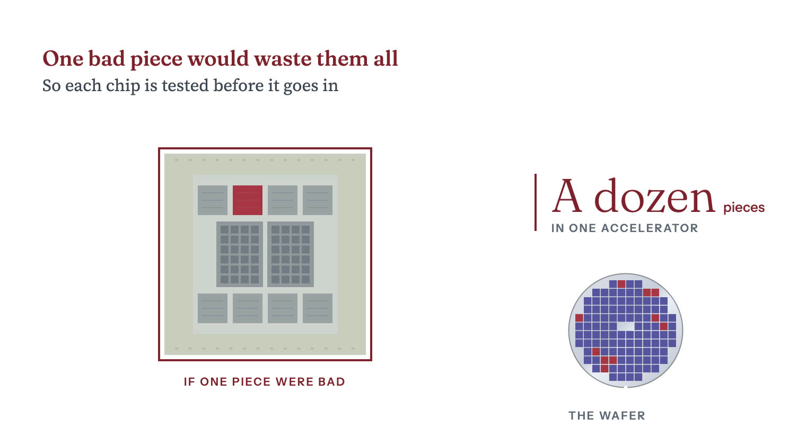
Each round of test catches failures the round before it cannot see.
As the parts in a package grow more valuable, finding a bad die before packaging matters more15. Aehr, an American maker of burn-in equipment, sells wafer-level burn-in systems that look for early-life and hidden failures before dies are cut from the wafer15. Catching those failures early lowers the risk of packaging and an expensive with a processor that may later fail15. Aehr says its lead AI customer is moving all burn-in of that customer's AI from the system level, after packaging, to the wafer16. The FOX-XP systems that customer ordered from Aehr in August 2026 each burn in nine 300 mm wafers at a time15.
The hard part of wafer sort is the , the that holds the needles. For a large every needle must sit in the same plane, survive repeated touchdowns without drifting, and do it hot. Each card is built for one chip design, so every new design needs a new card and a new . FormFactor, an American probe card maker, says its cards work at high enough frequencies to compete well in testing high-bandwidth memory, a stack of eight, twelve or sixteen memory dies17.
The bigger the package, the more one bad die can cost. TSMC told investors in July 2026 that its roadmap includes packages larger than 14 times the area a can print in one shot18. A die that fails after assembly wastes the memory and substrate joined to it15.
Advantest puts its own share at about 65 percent of an estimated $9.0 billion tester market in 20256. Its share of (SoC) testers, the machines that test processors and other non-memory chips, rose about ten points in a year to 66 percent6. It held about 60 percent of memory test6.
Teradyne, Advantest's main rival, took $2.52 billion of semiconductor test revenue in 2025, service included7. Of that, $1.89 billion came from SoC testers and $505 million from memory testers7. Teradyne's total revenue grew 13 percent to $3.19 billion in 2025, with fourth-quarter revenue up 44 percent on AI demand19.
Georgetown University's Center for Security and Emerging Technology (CSET) makes a second estimate, from data by the research firm TechInsights5. It gives Advantest 62.7 percent of a $9.1 billion market for test tools in 2025 and Teradyne 21.8 percent5. Japanese firms held 63.0 percent of that market and American firms 23.5 percent5.
SoC testers took an estimated $6.9 billion in 2025, memory $2.1 billion
Where the tester money went in calendar 2025
| SoC testers | $6.9bn |
|---|---|
| Memory testers | $2.1bn |
Sharma, Yashvardhan. “Figure 12.3: Where the tester money went in calendar 2025.” Chip Supply Chain: How AI Chips Are Made. Updated 27 October 2026. https://chipsupplychain.org/test-and-assembly/#fig-test-and-assembly-tester-market
The rest of the test and assembly equipment market splits into niches, each with its own suppliers.
use heat and force to press memory dies into a stack and to attach to substrates. ASMPT says it remained the leader in that market in 2025 and aims for a 35 to 40 percent share28. In its 2025 results it said it expects the market to reach $1.6 billion by 202828. In July 2026 ASMPT announced new bulk orders for more than 50 of its chip-to-substrate bonders for AI chips, from firms29. Hanmi Semiconductor in South Korea also sells thermocompression bonders for high-bandwidth memory30. See Memory and HBM.
Taiwanese firms lead outsourced assembly and test, the OSAT business, and Chinese firms are large challengers. Taiwan's ASE billed $20,573.4 million in 202511. Packaging made up about 48 percent of that, testing about 11 percent and its electronics manufacturing arm about 40 percent31. In a TrendForce ranking that CSET cites, four of the top ten OSATs by 2024 revenue are headquartered in China1.
Malaysia is a large center for chip assembly and test. Its investment agency said in July 2026 that the country ships 13 percent of the world's packaged chips32. It said a consortium of five Malaysian firms aims to help the country capture 7 percent of world shipments by 203532. A 2024 study by the Semiconductor Industry Association and Boston Consulting Group used a different measure, capacity33. It gave Malaysia 7 percent of global assembly, test and packaging capacity in 2022, the largest share in Southeast Asia33. The study measured capacity by factory floor space at contractors and chipmakers' own plants34.
Taiwan's assembly and test contractors are expanding. ASE ran 6,797 testers in the second quarter of 2025 and 8,348 a year later8. It spent $2.7 billion on machinery and $1.4 billion on buildings, facilities and automation in the first half of 202635. In July 2026 it said revenue from advanced packaging was running ahead of its $3.5 billion forecast for 202635. Powertech, another Taiwanese assembly and test firm, aims to run the first panel-level packaging line for AI chips in 202736.
Amkor, an American assembly and test contractor, took $6.71 billion of revenue in 20259. Its revenue in the second quarter of 2026 alone was $1.90 billion, up 26 percent year on year37. By October 2025 it had raised the planned investment in its Arizona campus to $7 billion12.
In October 2024 TSMC and Amkor signed a memorandum of understanding for TSMC to buy packaging and test services from Amkor's planned plant in Peoria, Arizona38. TSMC would use those services for its customers, especially those using its Phoenix 38. The two announced a long-term partnership in June 202613.
ASE ran 8,348 testers in mid-2026, up from 6,797 a year earlier
Testers installed at ASE, a Taiwanese assembly and test contractor
| Q2 2025 | 6,797 testers |
|---|---|
| Q1 2026 | 7,585 testers |
| Q2 2026 | 8,348 testers |
Sharma, Yashvardhan. “Figure 12.4: Testers installed at ASE, a Taiwanese assembly and test contractor.” Chip Supply Chain: How AI Chips Are Made. Updated 27 October 2026. https://chipsupplychain.org/test-and-assembly/#fig-test-and-assembly-ase-testers
Customers can switch tester makers, but at a cost. Advantest says that switching to another tester maker means rebuilding the whole test setup used for development, evaluation and , at significant extra cost to the customer2. Still, ASE says it buys testers with similar functions from different makers, including Teradyne and Advantest11.
Chinese toolmakers are gaining share in test and advanced packaging tools, but CSET finds they still lag significantly behind foreign suppliers in market share1. Between 2019 and 2024 they gained 5 percentage points of world market share in test tools and 4 points in fabrication tools built for advanced packaging, by CSET's analysis of TechInsights data1. But they lost share in bonding and other conventional assembly and packaging tools1.
Assembly and test contractors such as ASE and Amkor earn a small part of what the chip industry sells. ASE's packaging business took $9,829.2 million from outside customers in 2025, and its testing business $2,292.0 million11. Amkor's revenue was $6.71 billion9. Global semiconductor sales that year were $791.7 billion39.
Recall each answer, then turn the card.
Why do chipmakers test chips early and often?
One bad chip can ruin a package that holds a dozen expensive ones.
Testing makes a weak chip fail before it is built into a finished product. Reread: How it works
Who makes most chip testers?
Advantest of Japan and Teradyne of the United States.
Advantest puts its own share at about 65 percent of an estimated $9.0 billion tester market in 2025. Reread: Who makes it
How many of the ten largest chip assembly and test contractors are based in China?
Four, by 2024 revenue, in a TrendForce ranking that CSET cites.
Taiwanese firms such as ASE lead outsourced assembly and test, and Chinese firms are large challengers. Reread: The back end's geography
Chapter 13Stage 13 of 14High concentrationModerately hard to substitute
Nvidia's and AMD's racks wire 72 AI chips together to run as one computer. Many firms can assemble the racks, but lasers for the optical links were scarce in 2026.
Sharma, Yashvardhan. “Systems and Networking.” Chip Supply Chain: How AI Chips Are Made. Updated 27 October 2026. https://chipsupplychain.org/systems-and-networking/
An eight-GPU baseboard, the board that carries eight accelerator modules and the switch chips joining them. It is about 510 by 400 mm and drawn to scale, with the module frames standing about 30 mm above the board. The two nickel-gray squares in the middle are the NVLink switch chips.
One AI is not enough to train a model. So seventy-two of them are wired together in a , a cabinet the size of a wardrobe, and run as one computer. Many such racks are then linked to train a large model. Each chip sits on its own board and draws more than a thousand amps, several times the current a whole house is wired to carry. The chips have to swap results with each other all the time. A copper wire can carry those signals only a few meters before they fade, so the longer links send them as light down glass fiber. Many companies can build the rack, but in 2026 the lasers that send the light were scarce.
In March 2026 Nvidia agreed to invest $2 billion in the laser maker Lumentum, alongside a multibillion-dollar purchase commitment and rights to future capacity for advanced laser components1. is used in high-speed lasers for optical communications, and China produced 70 percent of the world's indium in 20252.
On 4 February 2025 China added indium phosphide , the the lasers are grown on, to its list3. AXT, a US-listed maker of those wafers, does all its manufacturing in China3. In its filing for the quarter to June 2026, AXT said it could not estimate when it would resume shipping the wafers to the United States3.
Before a package can compute, it has to be built into a machine. Building that machine is a separate industry from making the package.
Chinese firms such as InnoLight assemble high-speed , at sites including Suzhou and, since 2019, Thailand10. In February 2025 China put under new export restrictions2. The same month it began requiring export permits for indium phosphide , the that lasers for optical links are grown on3.
Coherent broke ground in Sherman, Texas, in June 2026 on an expansion of its factory there, which makes optical devices from indium phosphide15. In August 2026 Nvidia said that Wistron's new plant in Fort Worth, Texas, was producing its GB300 superchips and that Foxconn was building a factory in Houston16.
How AI chips are wired together
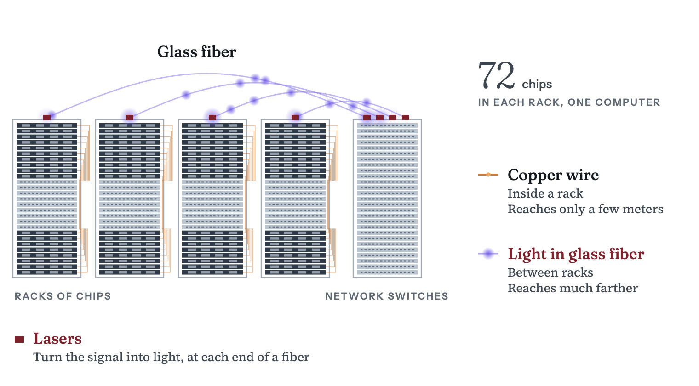
An (the AI chip) ships as a module, the chip package on a small board with the circuits that feed it power. Nvidia calls its version , and the open-standards equivalent is the Open Compute Project's accelerator module. Eight modules bolt onto a baseboard that carries their power and the links between them. On Nvidia's baseboard, switch chips pass data between any two modules at full speed.
systems drop the baseboard and put the chips on trays stacked in the rack. An Nvidia holds 18 compute trays plus nine switch trays, 72 in all, and draws up to 142 17. The newer Vera Rubin NVL72 uses the same rack footprint18. The research firm SemiAnalysis estimated in August 2025 that a rack of the earlier GB200 NVL72 model cost a typical $3.1 million, or about $3.9 million with networking, storage and other items6.
Inside the rack the trays reach each other over copper17. Between neighboring racks, the signal can travel up to 7 meters over active electrical cables, a type of copper cable sold by firms such as Credo19. Longer links run on glass fiber, with an at each end. A laser in the sending transceiver turns the electrical signal into pulses of light, and a detector in the receiving one turns the pulses back into current.
The accelerators in an AI cluster exchange data over two networks that are not interchangeable. connects anywhere from a few dozen accelerators to thousands closely enough that they can read each other's memory. It runs at . joins those groups to one another at hundreds of gigabits per second. Scale-up speeds are quoted in bytes and scale-out speeds in bits, and a byte is eight bits. Each GPU in a GB300 NVL72 can send 900 gigabytes per second each way over the scale-up network, or 7,200 gigabits per second20. Over the scale-out network it can send 800 gigabits per second20. So each GPU has nine times as much bandwidth for scale-up as for scale-out, SemiAnalysis calculated in January 202620.
Scale-up bandwidth limits how efficiently a large model trains. A model too big for one accelerator is split across many. The parts that exchange data constantly stay inside the scale-up group, because they need its high bandwidth21. Whole blocks of layers, the stages a model's calculation passes through in turn, can sit on different groups across the slower scale-out network21.
The designs differ in how many accelerators can share one pool of memory.
NVLink per GPU rose from 900 to 3,600 GB/s, Hopper to Rubin
NVLink bandwidth per GPU by generation
| NVLink 4 (Hopper) | 900 GB/s |
|---|---|
| NVLink 5 (Blackwell) | 1,800 GB/s |
| NVLink 6 (Rubin) | 3,600 GB/s |
Sharma, Yashvardhan. “Figure 13.2: NVLink bandwidth per GPU by generation.” Chip Supply Chain: How AI Chips Are Made. Updated 27 October 2026. https://chipsupplychain.org/systems-and-networking/#fig-systems-and-networking-nvlink-bandwidth
Scale-out networks typically use or Ethernet, SemiAnalysis wrote in January 202620. InfiniBand is a specialized network long used in supercomputers. But Ethernet switch capacity has grown quickly. Broadcom's Tomahawk 4 switched 25.6 Tbps on one chip in December 201925. Tomahawk 5 reached 51.2 Tbps in August 2022, and Broadcom said it had doubled the bandwidth about every two years since 201426. Tomahawk 6 doubled it again to 102.4 Tbps in June 202527. In June 2025 the Ultra Ethernet Consortium published its 1.0 specification, a set of Ethernet-based rules for communication in AI and supercomputing28. It covers how data is carried, how traffic jams are avoided and how one machine reads or writes another's memory directly28.
Tomahawk switch chip capacity rose from 25.6 Tbps to 102.4 Tbps
Broadcom Tomahawk switching capacity on one chip
| Tomahawk 4 | 25.6 Tbps |
|---|---|
| Tomahawk 5 | 51.2 Tbps |
| Tomahawk 6 | 102.4 Tbps |
Sharma, Yashvardhan. “Figure 13.3: Broadcom Tomahawk switching capacity on one chip.” Chip Supply Chain: How AI Chips Are Made. Updated 27 October 2026. https://chipsupplychain.org/systems-and-networking/#fig-systems-and-networking-switch-bandwidth
Nvidia sells switches and network cards for both InfiniBand and Ethernet. Its data center revenue, which counts its GPUs as well as its networking gear, reached $89.0 billion in the quarter to July 2026, up 117 percent from a year earlier29. In the quarter before, it credited its data center growth to Blackwell 300 products and to demand for its "InfiniBand, Spectrum-X Ethernet, and NVLink" solutions7.
Broadcom and Nvidia are moving the optics out of pluggable transceivers and into the switch chip's own package, a design called . A cluster needs several transceivers, the modules that turn electricity into light and back, for each accelerator. Their power cost is one reason for the change. Broadcom says its Tomahawk 6 Davisson cuts the power used by optical links by 70 percent compared with traditional pluggable modules30. It keeps its lasers in field-replaceable modules30. Nvidia's Spectrum-X Photonics switches, announced in March 2025, have up to 512 ports of 800 gigabits per second each, and Nvidia says they use four times fewer lasers than traditional designs31. Nvidia builds them on its Spectrum-6 switch design23. In August 2026 Nvidia said its Spectrum-6 switch systems, with pluggable or co-packaged optics, were arriving at AI data centers around the world32.
Chinese makers of optical modules have built plants outside China. InnoLight has run a plant in Thailand since 2019, alongside its sites in Suzhou and Taiwan10. The Thai subsidiary of Eoptolink, another Chinese module maker, lists sites in Chonburi and Rayong33.
A US rule from July 2026 may reach optical transceivers made by firms on a US security list. The list is the Federal Communications Commission's Covered List of equipment and services judged to pose an unacceptable risk to US national security or to the security and safety of 34. Under its July 2026 order, the FCC no longer approves new devices for the US market if they contain logic-bearing hardware components made by firms on the list35. The order counts as logic-bearing any part that uses digital logic, from a single chip to a whole module, and leaves out parts with no digital function, such as wiring and housings36. Commenters in the record named optical transceivers as one such component37. As of 16 October 2026, the Covered List did not include InnoLight38.
China produces most of the world's , the raw material for indium phosphide lasers, and restricts its export. Indium phosphide is used in the high-speed laser diodes and photodetectors for optical communications2. China accounted for 70 percent of world indium production in 20252. In February 2025 placed indium under new export restrictions2.
AI data centers were straining supplies of the lasers inside optical modules and pushing up their prices, Nikkei Asia reported in May 20265. Nvidia had agreed in March 2026 to invest $2 billion in one laser maker, Lumentum, alongside a multibillion-dollar purchase commitment and rights to future capacity for advanced laser components1. Coherent, another laser maker, broke ground in Sherman, Texas, in June 2026 on an expansion of its factory there, which makes optical devices from indium phosphide15.
Two American firms, Broadcom and Marvell, sell both custom AI chips and Ethernet switch chips. In its annual report for fiscal 2025, Broadcom said its AI chips include Ethernet switch chips as well as , which it builds to each customer's specifications39. Its AI semiconductor revenue reached $16.7 billion in the third quarter of fiscal 2026, up 221 percent from a year earlier8. Marvell also builds custom AI chips to each customer's specifications and sells Ethernet switch chips, its annual report for fiscal 2026 says40. Marvell's five-year agreement with Amazon Web Services, announced in December 2024, covers custom AI chips alongside the optical and networking parts that go with them41.
Taiwanese firms do much of the physical assembly. Foxconn booked NT$8.1 trillion of revenue in 2025, up 18 percent, and cloud and networking was its largest product category in the fourth quarter9. In the same results release, its chairman called Foxconn the world's largest AI server provider9.
Some assembly is moving to the United States. In April 2025 Nvidia said it was building supercomputer manufacturing plants in Texas, with Foxconn in Houston and Wistron in Dallas42. It expected to up in the following 12 to 15 months42. In August 2026 Nvidia said Wistron's new plant in Fort Worth, Texas, near Dallas, was producing its GB300 superchips, which pair Nvidia's Grace processor with its Blackwell Ultra GPUs16. It said Foxconn was building a factory in Houston to make Nvidia's AI systems16.
Many firms can build the racks. In October 2025 Nvidia said more than 50 makers of systems and components were gearing up for the Vera Rubin NVL72, which follows MGX, Nvidia's standard design for trays and racks18. But in its filing for the quarter to July 2026, Nvidia said the complexity of producing its data center systems had caused production delays29.
Four inputs to the rack are harder to source elsewhere.
Optical module assembly can move, as InnoLight's high-volume plant in Thailand, opened in 2019, shows10.
Recall each answer, then turn the card.
What is an AI rack?
A cabinet of 72 AI chips wired together to run as one computer.
One AI chip is not enough to train a model. Nvidia's GB300 NVL72, one such rack, holds 72 GPUs and draws up to 142 kW. Reread: How it works
Why do the longer links between AI chips carry signals as light?
Copper carries the signals only a few meters.
Active copper cables carry the signal up to 7 meters between racks. Beyond that a laser turns the signal into pulses of light that travel down glass fiber. Reread: How it works
Which part of an AI rack was scarce in 2026?
The lasers for the optical links.
Many firms can assemble the rack itself. In March 2026 Nvidia agreed to invest $2 billion in the laser maker Lumentum, with rights to its future capacity. Reread: The chokepoint
How much of the world's indium did China produce in 2025?
70 percent. Indium is the raw material for the lasers in optical links.
China put indium under new export restrictions in February 2025. That month it also began requiring permits to export indium phosphide substrates, the wafers the lasers are grown on. Reread: The chokepoint
Chapter 14Stage 14 of 14High concentrationModerately hard to substitute
By mid-2026, companies had asked to connect about 474 GW of new demand to the Texas grid, mostly for data centers. Only about 205 GW of those requests already had the grid study needed to enter the grid operator's first review. The large transformers that connect such sites to the grid commonly took three years to arrive in 2024.
Sharma, Yashvardhan. “Data Centers and Power.” Chip Supply Chain: How AI Chips Are Made. Updated 27 October 2026. https://chipsupplychain.org/data-centers-and-power/
A liquid-cooled rack of 72 GPUs, Nvidia's GB200 NVL72, drawn to scale. It is 2.24 m tall and 600 mm wide, taller than a door. It weighs about 1.36 metric tons, more than a small car, and draws about 120 kW. The newer GB300 NVL72 draws up to 142 kW. The gray steel power shelves and the copper busbar they feed are picked out.
A data center feeds electricity to the machines inside it and carries away the heat they give off. One of AI , a cabinet taller than a door, can draw 142 1. Every watt of it comes back out as heat, and liquid piped through the rack carries the heat away1. A large training site already holds more than a hundred thousand chips2. The newest sites are planned in gigawatts3. One gigawatt is the whole output of a large power station, and Epoch AI projects that OpenAI's seven Stargate sites in the United States will add up to more than nine of them by 20293. Getting that much electricity to the site is harder than putting up the building. and heavy switches connect a site to the grid, and turbines make the power. All of them come from a few suppliers and take years to arrive.
Measured by capacity, US factories supplied 29.2 percent of the bought in the US in 2023, and imports the rest4. GE Vernova's gas equipment backlog and reserved factory slots stood at 116 in mid-2026, against planned output of 20 GW a year from the third quarter5.
ERCOT, the grid operator for most of Texas, counted 9,456 MW of big power users approved to energize in its overview for September 20266. Judging by peak monthly use in September, it believed 4,132 MW of that was operating6. On 3 August 2026 Governor Greg Abbott ordered an audit of every data center seeking a connection before any data center project moves forward7. In September 2026 ERCOT said it had paused approvals to energize data centers of 75 MW or more until the audit and a review of their impact on local communities are complete8.
A passes through a in months, but in 2024 a commonly took three years to arrive9. Before the pandemic, the same order took under a year10.
Power in, heat out
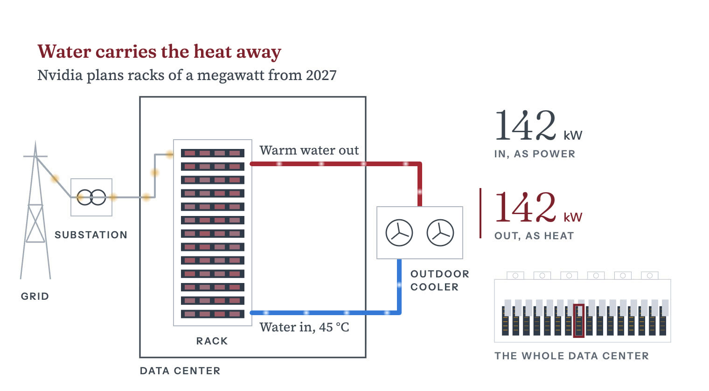
The is the basic unit of AI compute. Nvidia's rack draws up to 142 through eight 33 kW , the rack's own power supplies1. Large sites hold many such racks. Colossus 1, an AI data center in Memphis, Tennessee, held an estimated 230,000 Nvidia by July 20252.
Power reaches the rack through a chain of heavy equipment, and each piece has its own , the wait between order and delivery. Between the grid and the rack, a substation steps the high voltage down with transformers. Switchgear, the building's heavy circuit breakers, can cut any part of the site off in a fault. Battery-backed supplies keep the racks running for the seconds it takes backup generators to start. Distribution boards split the feed among the rows of racks.
At the back of each rack, a carries the current down to the server trays. It is a solid copper bar, because an ordinary cable would overheat at that current.
Heat leaves in water. , metal blocks with coolant running through them, sit on the GPU packages and pass the heat to the building's water loop, which releases it outdoors14. Nvidia's Rubin racks run coolant at up to 45 °C, warm enough that in many climates the loop can release its heat without turning on chillers, the refrigeration machines that cool water14.
Nvidia is also moving the power that feeds its racks to 800 volts of direct current. Raising the voltage cuts the current needed for the same power, and the heat in copper comes from current. Nvidia said in October 2025 that at 800 volts the same wire can carry 157 percent more power than at 415 volts of alternating current20. Inside racks such as the GB300 NVL72, power runs at 54 volts, and at that voltage a one-megawatt rack would need up to 200 kg of copper busbar21.
Nvidia says the cooling supply chain is keeping pace with the move to liquid14. Motivair, Schneider Electric's cooling division, has worked with Nvidia for nearly a decade, following Nvidia's product roadmap14.
Nvidia's 800-volt DC architecture is designed for racks from 100 kW to more than a megawatt, with megawatt racks from 202721. Nvidia is making the change because the 54-volt distribution in existing racks begins to hit physical limits once racks exceed 200 kW21.
Nvidia names nine data center power system providers for its 800-volt designs for gigawatt-scale data centers, among them ABB, Eaton, Hitachi Energy, Mitsubishi Electric, Schneider Electric, Siemens and Vertiv11.
A megawatt rack changes the busbar, the floor loading, the coolant flow, the leak detection and the energy stored in the rack. Nvidia's Vera Rubin NVL72 rack design adds energy storage to keep power steady11.
The largest data center operators pay for the buildout. by Alphabet, Amazon, Meta, Microsoft and Oracle came to $448.2 billion in 2025, the sum of quarterly figures compiled by Epoch AI, a research group24. If the trend continues, it will reach $770 billion in 202624. The International Energy Agency expected worldwide investment in data centers to reach $580 billion in 202512.
Amazon spent the most of five large operators, $134.7 billion in 2025
Capital spending by five large US data center operators, 2025
| Amazon | $134.7B |
|---|---|
| Microsoft | $108.3B |
| Alphabet | $93.1B |
| Meta | $72.5B |
| Oracle | $39.6B |
Sharma, Yashvardhan. “Figure 14.2: Capital spending by five large US data center operators, 2025.” Chip Supply Chain: How AI Chips Are Made. Updated 27 October 2026. https://chipsupplychain.org/data-centers-and-power/#fig-data-centers-and-power-hyperscaler-capex
Epoch AI also projects that OpenAI's seven US Stargate sites will exceed 9 GW by 20293. It expects the site in Abilene, Texas, to grow from an estimated 0.3 GW in April 2026 to 1.2 GW in the fourth quarter of 20263.
A few large firms make the turbines, transformers and switchgear. GE Vernova builds large gas turbines, and its 2025 annual report names Siemens Energy and Mitsubishi Power among the key competitors of its power generation business13. Its electrification business makes power transformers and switchgear, and the report names Hitachi Energy, Siemens Energy, Schneider Electric and ABB among that business's key competitors13.
Equipment makers limit how fast the buildout can go. GE Vernova's gas equipment backlog and reserved factory slots grew from 100 GW to 116 GW in the second quarter of 20265. In the first half of 2026, data center orders for its electrification business, which makes grid equipment, passed $5 billion, more than double that business's data center orders for all of 20255. GE Vernova bought the remaining half of Prolec GE, a transformer maker, in the first half of 20265.
GE Vernova plans 30 GW of annual gas turbine output in 2030
GE Vernova's planned annual gas turbine output
| Q3 2026 | 20 GW/yr |
|---|---|
| 2028 | 24 GW/yr |
| 2030 | 30 GW/yr |
Sharma, Yashvardhan. “Figure 14.3: GE Vernova's planned annual gas turbine output.” Chip Supply Chain: How AI Chips Are Made. Updated 27 October 2026. https://chipsupplychain.org/data-centers-and-power/#fig-data-centers-and-power-turbine-output
US data center electricity use is projected to rise steeply by 2030. US data centers used 192 in 2024, 4.7 percent of national electricity, according to a June 2026 estimate by Lawrence Berkeley National Laboratory that leaves out cryptocurrency mining25. The lab's reference case, its main scenario, projects 464 TWh in 2028 and 649 TWh in 2030, which would be 11.8 percent of forecast US electricity use25. Its scenarios for 2030 range from 521 to 843 TWh, or 9.5 percent to 15.3 percent26.
The US Energy Information Administration expects electricity demand to keep rising, but in September 2026 it cut its 2027 forecast for the region that includes Texas. In its October 2026 Short-Term Energy Outlook, it expects US electricity sales of 4,152.0 TWh in 2026 and 4,216.6 TWh in 202727. It expects electricity demand from the commercial sector, which includes data centers, to grow 2.8 percent in 2027 and demand from industry to grow 2.7 percent28. Its September outlook had lowered the 2027 electricity sales forecast for the region that includes Texas by 4.7 percent from August29. That outlook noted that Texas had paused connecting new data centers to the grid while the state audits proposed projects30. The pause, set by the grid operator for most of Texas, covers data centers and crypto mining sites of 75 MW or more8.
US data centers' projected 2030 use ranges from 521 to 843 TWh
US data center electricity use, 2024 and 2030 projection range
| 2024 | 192 TWh |
|---|---|
| 2030 low case | 521 TWh |
| 2030 reference case | 649 TWh |
| 2030 high case | 843 TWh |
Sharma, Yashvardhan. “Figure 14.4: US data center electricity use, 2024 and 2030 projection range.” Chip Supply Chain: How AI Chips Are Made. Updated 27 October 2026. https://chipsupplychain.org/data-centers-and-power/#fig-data-centers-and-power-us-dc-electricity
By the International Energy Agency's estimate, China accounted for 25 percent of the world's data center electricity use in 2024, second to the United States at 45 percent16. Data centers made up around 3 percent of the growth in China's electricity demand from 2022 to 2024, the agency found17.
Better do not by themselves cut total energy use. Google says its Ironwood , an AI chip, delivers twice the performance per watt of Trillium, the TPU before it31. A token is the chunk of text a model reads or writes. Energy per token can fall while total energy use still rises, if the number of tokens rises faster.
On the Texas grid, big power users have asked for far more electricity than is connected and running. ERCOT, the grid operator for most of Texas, was tracking about 474 GW of large loads (big power users) seeking a connection in June 2026, roughly 90 percent of it data centers32. In its operational overview for September 2026, ERCOT counted 9,456 MW of large loads approved to energize, that is, cleared to switch on6. Judging by peak monthly use in September, it believed only 4,132 MW of it was operating6.
Before a big user can connect, engineers must study whether the nearby grid can carry its load. In a preliminary review in July 2026, ERCOT found that about 205 GW of the requests already had such a study, which made them eligible for Batch Zero, the first batch of requests it studies together33. In September 2026 ERCOT conditionally classed 66.4 GW of Batch Zero projects as base load and 127.9 GW as studied load, pending final decisions in December8. Under ERCOT's Batch Zero rules, base load is demand from projects already running or far enough along to be counted without further study34. Studied load is demand that ERCOT will study before giving each project a share of the grid's capacity34.
Texas has paused new connections for large data centers while it audits them. On 3 August 2026 Texas Governor Greg Abbott ordered the state's Public Utility Commission and ERCOT to audit every data center waiting to connect to the grid before any data center project moves forward7. ERCOT then paused approvals to energize data centers and crypto mining sites of 75 MW or more until the audit and a review of their impact on local communities are complete8. It will report on the audit and the community review to the Public Utility Commission by 10 December 20268.
Projects in that queue also wait on equipment.
Memory chips are also in short supply. Micron's quarterly report for the period ended 28 May 2026 says AI-driven growth in demand for memory and storage is outpacing industry supply36. The memory shortage and the wait for power equipment both limit how much of the 2026 capital spending turns into working compute.
Recall each answer, then turn the card.
Why are AI racks cooled with liquid?
One rack can draw 142 kilowatts, and every watt of it comes back out as heat.
Air cooling works when each rack draws a moderate amount of power. Nvidia's GB300 NVL72 rack, which draws up to 142 kW, is liquid cooled. Reread: Cooling
How big are the newest AI data centers?
They are planned in gigawatts, and each gigawatt is the output of a large power station.
Epoch AI projects that OpenAI's seven Stargate sites in the United States will add up to more than nine gigawatts by 2029. Reread: How it works
What slows down building an AI data center besides chips?
Power equipment, which takes years to arrive.
In the United States in 2024, lead times of 36 months were commonly quoted for a large power transformer, against under a year before the pandemic. Reread: The chokepoint
Which two countries used the most data center electricity in 2024?
The United States, with 45 percent of the world's total, and China, with 25 percent.
Those are the International Energy Agency's estimates. Data centers made up around 3 percent of the growth in China's electricity demand from 2022 to 2024. Reread: Capacity and demand
Chapter 15The economics
Epoch AI estimated in December 2025 that Nvidia's B200 AI chip cost about $6,400 to build, mostly for memory and packaging. Its processor silicon cost about $900.
Sharma, Yashvardhan. “The Economics of AI Chips.” Chip Supply Chain: How AI Chips Are Made. Updated 27 October 2026. https://chipsupplychain.org/component-costs/
Epoch AI's December 2025 estimate of what it cost to build one B200, drawn as a column with each layer as tall as its share of the bill. From the bottom: $2,900 of memory in garnet, $1,100 of packaging, $1,000 of packaging yield loss drawn hollow, $900 of logic dies, $480 of power delivery, board and test. The total is about $6,400, against a selling price of $30,000 to $40,000 per chip reported in March 2024.
Most of what it costs to build Nvidia's B200, an AI from its Blackwell line, goes to memory and packaging that a few firms supply. A is the list of parts inside a product and what each one costs. Epoch AI estimated in December 2025 that the B200 cost about $6,400 to build1. The two , the pieces of silicon that do the calculating, cost about $900 of that1. The beside them accounted for about half, and the packaging that wires the and memory together cost more than the dies1. Three firms, SK hynix, Samsung and Micron, dominate the world market for that memory2. One Taiwanese firm, TSMC, does that packaging1.
Epoch AI says Nvidia's margin on Blackwell may be lower than the gap between the B200's build cost and its selling price suggests1. It cites reports from March 2024 that put the B200's selling price at $30,000 to $40,000 per 1. Epoch AI notes that most Blackwell revenue comes from servers and systems, which may carry lower margins1.
In 2026 Micron's , the share of sales left after production costs, passed Nvidia's. Micron's rose from 39.8 percent for the year to August 2025 to 80.7 percent for the year to September 20263. It reached 86.8 percent in the last quarter of that year3. Nvidia's was 75.0 percent in the quarter to July 20264. Epoch AI's estimate priced memory at $14 to $17 per gigabyte, before the 2026 rise in memory makers' sales and margins5.
A B200, one of Nvidia's Blackwell AI , sells for far more than it costs to build. In December 2025 Epoch AI estimated that building one cost about $6,4001. Epoch AI cites reports from March 2024 that put its selling price at $30,000 to $40,000 per chip1. Most B200s are sold inside Nvidia's GB200 systems6. Epoch AI's chip sales model, with data through October 2025, puts what Nvidia earns per for the computing hardware in those racks at $33,000 to $42,0006. That figure leaves out the networking gear in the racks6.
Three numbers set the cost of a , the finished rectangle of circuitry cut out of a .
Together, those three numbers put the two dies inside a B200 at about $9001. Epoch AI's estimate for the whole B200 counts only variable costs, which rise with each chip made1. It leaves out fixed costs such as research and development1.
The largest line on the bill is the 192 GB of beside those dies, a generation called HBM3E1. At $14 to $17 per gigabyte it comes to about $2,900, which Epoch AI counts as half of the build cost1. Epoch AI says HBM prices are negotiated deal by deal and can vary significantly with volume and contract length1. The $14 to $17 range dates from December 2025, before the 2026 rise in memory makers' sales and margins described below5. SK hynix said and prices rose significantly in the second quarter of 2026 from the quarter before, led by high-performance products for AI servers5.
Few firms make this memory, and one of them says demand has outrun its supply. SK hynix, Samsung and Micron dominate the world market for it2. SK hynix said in July 2026 that demand for its products had exceeded its available supply in recent quarters8.
-L, the TSMC process that mounts dies and memory on one carrier and wires them together, adds about $1,100, more than the logic dies it carries1. Epoch AI models packaging yield at 65 to 95 percent1. A package that fails testing loses its logic dies and memory stacks1. Spreading that loss over the good units adds about $1,000 to each B2001. Power delivery hardware, the , and final assembly and testing add $4801. See Advanced packaging for how tight packaging capacity has been.
| Line | Estimate | Range |
|---|---|---|
| HBM3E, 192 GB | $2,900 | $2,800–3,100 |
| CoWoS-L packaging | $1,100 | $1,000–1,200 |
| Packaging yield loss | $1,000 | $430–1,700 |
| Logic die, two on TSMC 4NP | $900 | $720–1,200 |
| Power delivery, board, assembly and test | $480 | $370–600 |
| Manufacturing cost | ~$6,400 | $5,700–7,300 |
| Reported selling price per chip, March 2024 | $30,000–40,000 | |
| Nvidia compute revenue per GPU in GB200 racks, data to October 2025 | $33,000–42,000 |
Epoch AI models each line as a range, deriving the packaging line from TSMC's revenue and Nvidia's share of CoWoS capacity1.
Epoch AI says Nvidia's actual margin on Blackwell may be lower than the gap between the B200's build cost and its reported chip price suggests1. The estimate covers the module only and leaves out servers and rack-scale systems1. Epoch AI notes that most Blackwell revenue comes from those systems, which may carry lower margins1.
Epoch AI's line-by-line estimate covers the B200, which is no longer Nvidia's newest chip. In its results for the quarter to July 2026, Nvidia said its Vera Rubin platform was into full production4. Each Rubin GPU carries up to 288 GB of HBM4, a newer generation of the stacked memory9.
Memory, $2,900, is the largest line in Epoch AI's 2025 B200 estimate
Where the ~$6,400 of B200 manufacturing cost goes, Epoch AI estimate, December 2025
| HBM3E, 192 GB | $2,900 |
|---|---|
| CoWoS-L packaging | $1,100 |
| Packaging yield loss | $1,000 |
| Logic die, two on 4NP | $900 |
| Power delivery, board, test | $480 |
Sharma, Yashvardhan. “Figure 15.1: Where the ~$6,400 of B200 manufacturing cost goes, Epoch AI estimate, December 2025.” Chip Supply Chain: How AI Chips Are Made. Updated 27 October 2026. https://chipsupplychain.org/component-costs/#fig-component-costs-b200-bom
Each new generation of Nvidia rack costs its owner more per hour than the last10. At rack scale, cost is measured per GPU-hour, one GPU running for one hour. For an operator that owns the machine, SemiAnalysis put a at $3.57 per GPU-hour in July 2026, against $1.84 for a GB200 and $2.36 for a GB30010.
But SemiAnalysis found Rubin cheaper than GB200 and GB300 per token, a short chunk of text10. Rubin stayed cheaper at every level of interactivity SemiAnalysis compared, where interactivity is the number of tokens per second each user receives10. That finding rests on early results from the cloud provider CoreWeave running the DeepSeek R1 model, and SemiAnalysis said it had not verified them10.
One level up, a cluster needs power and a network as well as servers. SemiAnalysis estimated in June 2024 that a cluster of 100,000 of Nvidia's earlier H100 GPUs cost over $4 billion in servers11. The cluster needs more than 150 of data center capacity and uses 1.59 a year, which costs $123.9 million at $0.078 per kWh11. In the network design Nvidia recommended, 98,304 link the cluster's GPUs to the first layer of switches, called leaf switches11.
| Firm | Stage | Quarter ended | |
|---|---|---|---|
| Micron | HBM and DRAM | September 2026 | 86.8%3 |
| Nvidia | Accelerator design | July 2026 | 75.0%4 |
| TSMC | Wafers and CoWoS | September 2026 | 66.4%12 |
| KLA (non‑GAAP) | Inspection | June 2026 | 62.4%13 |
| ASML | September 2026 | 57.5%14 | |
| Lam Research | June 2026 | 51.7%15 | |
| Applied Materials | July 2026 | 50.3%16 | |
| ASE Technology | Packaging and test segment | June 2026 | 27.3%17 |
| Amkor | June 2026 | 16.8%18 |
In the table, gross margin is highest at the memory maker Micron and lowest in assembly and test. The firms in design, equipment and wafers earn gross margins of 50.3 to 75.0 percent, and those in assembly and test 16.8 to 27.3 percent. Micron's gross margin rose from 39.8 percent for the year to August 2025 to 80.7 percent for the year to September 20263. It reached 86.8 percent in the last quarter of that year3.
Each figure except KLA's comes from the firm's own earnings release. KLA's shareholder letter gives only a non-GAAP gross margin for the quarter, 62.4 percent13. KLA's non-GAAP figures adjust its results under US accounting rules, known as GAAP, to leave out items such as acquisition-related charges and restructuring, severance and other charges19. For ASE the table shows its packaging and test segment17. The company as a whole had a gross margin of 21.0 percent, because about a third of its revenue came from electronics manufacturing services, which earned 8.9 percent17.
The table leaves out two firms whose results give no gross margin. SK hynix's was 76 percent in the quarter to June 2026, and its revenue was up 257 percent from a year earlier5. The maker Ibiden's operating profit was 21.8 percent of net sales in the quarter to June 202620.
Micron's gross margin, 86.8 percent, was highest of nine firms in 2026
Gross margin, quarters ended June to September 2026
| Micron | 86.8% |
|---|---|
| Nvidia | 75% |
| TSMC | 66.4% |
| KLA (non‑GAAP) | 62.4% |
| ASML | 57.5% |
| Lam Research | 51.7% |
| Applied Materials | 50.3% |
| ASE packaging and test | 27.3% |
| Amkor | 16.8% |
Sharma, Yashvardhan. “Figure 15.2: Gross margin, quarters ended June to September 2026.” Chip Supply Chain: How AI Chips Are Made. Updated 27 October 2026. https://chipsupplychain.org/component-costs/#fig-component-costs-gross-margins
World chip sales are forecast to jump in 2026, with memory growing far faster than logic. The Semiconductor Industry Association, using monthly data compiled by World Semiconductor Trade Statistics, counted $791.7 billion of global chip sales in 202521. In its June 2026 forecast, World Semiconductor Trade Statistics put 2025 slightly higher, at $795.6 billion22. It forecast $1.51 trillion for 2026, with memory growing about 250 percent and logic 37 percent22.
In 2025 at five large tech firms far exceeded the world's sales of . The industry group SEMI counted $135.1 billion of semiconductor equipment billings in 202523. Capital spending at Alphabet, Amazon, Meta, Microsoft and Oracle came to $448.2 billion in 2025, the sum of Epoch AI's quarterly figures24. Epoch AI says that spending would reach $770 billion in 2026 if the trend continues24. These totals overlap, so they cannot be added together.
World chip sales reached $791.7 billion in 2025, the largest total shown
Chip sales, capital spending at five tech firms, Nvidia data center revenue and equipment sales, 2025
| Semiconductor sales | $791.7B |
|---|---|
| Hyperscaler capex | $448.2B |
| Nvidia data center revenue | $193.7B |
| Semiconductor equipment | $135.1B |
Sharma, Yashvardhan. “Figure 15.3: Chip sales, capital spending at five tech firms, Nvidia data center revenue and equipment sales, 2025.” Chip Supply Chain: How AI Chips Are Made. Updated 27 October 2026. https://chipsupplychain.org/component-costs/#fig-component-costs-market-2025
The table below sorts each stage by whether its cost falls as volume grows. A structurally expensive stage stays costly because the work is hard, capacity is short or one firm sets the price. A stage compressible with scale gets cheaper as volume grows. An already commoditized stage has several competing suppliers. The classes are a judgment drawn from the sources in this chapter and the stage chapters.
| Stage | Class | Why |
|---|---|---|
| lithography | Structurally expensive | One supplier, ASML. See Lithography. |
| and | Structurally expensive | Every design needs its own mask set, and every EUV layer a flawless mask. See Photomasks and pellicles. |
| Structurally expensive | KLA held 56.8 percent of the market for these tools in 2025, by CSET's analysis of TechInsights data25. See Metrology and inspection. | |
| HBM | Structurally expensive | SK hynix says HBM needs more wafer input than ordinary DRAM8. See Memory and HBM. |
| Advanced packaging, CoWoS-L | Structurally expensive | Modeled packaging yield is 65 to 95 percent, and a failed package loses its dies and memory. |
| Structurally expensive | Investment can add substrate lines, but Ajinomoto said in June 2026 that the insulating film it makes for these substrates has held over 95 percent of its market since launch26. See Substrates and PCBs. | |
| Power and cooling plant | Structurally expensive | In the United States, grid connections face long queues, so at least three of OpenAI's seven Stargate sites will use on-site natural gas plants27. GE Vernova's backlog of gas power equipment, together with agreements reserving future production slots, grew from 100 GW to 116 GW in the second quarter of 202628. See Data centers and power. |
| Optical transceivers | Structurally expensive | In May 2026 Nikkei reported that building AI data centers had caused shortages and price rises for lasers, optical fibers and other optical parts29. Nvidia agreed in March 2026 to invest $2 billion in the laser maker Lumentum, with rights to future capacity30. It agreed a similar $2 billion deal with Coherent31. See Systems and networking. |
| Leading-edge logic wafers | Compressible with scale | A very large die yields well only once a process matures. See Foundries and fabs. |
| Design and | Compressible with scale | A design is paid for once, and its cost is spread across every chip sold. See Chip design, EDA and IP. |
| Deposition and etch tools | Compressible with scale | Most deposition and etch steps have three or four established tool makers. See Deposition and etch. |
| Test and assembly (OSAT) | Already commoditized | Gross margins of 16.8 to 27.3 percent at Amkor and ASE's packaging and test segment, in the table above. |
| Wafers and | Already commoditized | Several firms make approved 300 mm wafers. By Siltronic's estimate, the five largest wafer makers served around 75 percent of the market in the first three quarters of 202532. See Silicon and wafers. |
| Rack integration () | Already commoditized | In October 2025 Nvidia said more than 50 makers of systems and components were gearing up for the Vera Rubin NVL7233. See Systems and networking. |
Recall each answer, then turn the card.
What does an Nvidia B200 cost to build?
About $6,400, in Epoch AI's December 2025 estimate.
Reports in March 2024 put its selling price at $30,000 to $40,000 per chip. Epoch AI says Nvidia's margin may be lower than that gap suggests, because most Blackwell revenue comes from servers and racks, which may carry lower margins. Reread: The B200 bill of materials
What is the most expensive part of an Nvidia B200?
The stacked memory, about $2,900 in Epoch AI's December 2025 estimate, or about half of the cost to build.
The two logic chips that do the calculating cost about $900. Reread: Memory is the largest line
Why does packaging add so much to the cost of a B200?
The CoWoS-L process itself costs about $1,100, more than the $900 logic chips, and a package that fails testing wastes the chips and memory inside it.
In Epoch AI's estimate, spreading the cost of those failed packages over the good ones adds about $1,000 to each B200. Reread: Packaging, substrate and test
Chapter 16The contest
Since 2018 the United States has used export controls to limit China's access to advanced chips and chipmaking tools, and China has been learning to make both.
Sharma, Yashvardhan. “Who Controls the Chain.” Chip Supply Chain: How AI Chips Are Made. Updated 27 October 2026. https://chipsupplychain.org/geopolitics/
The world, with nineteen chokepoint towns pinned in garnet. Five towns building alternatives to those chokepoints are pinned in ink: Beijing, Wuhan, Shenzhen, Hefei and Dresden. The taller the garnet pin, the tighter the chokepoint at that town's stage of the chain. The pins are not to scale. If the globe were the size of the Earth, the tallest pin would stand about 1,000 km high.
work only when a country's own firms sell something the buyer cannot get elsewhere, so few governments can use them to much effect. An export control is a rule that requires the government's permission for a sale. The government names an item and a country or a buyer. From then on its own companies must hold a license before they ship that item to that country or buyer. The American government extends some of these rules to goods made abroad with American technology. The machines, software and chemicals used to make an advanced come from a short list of firms in the United States, the Netherlands and Japan, so those three governments can control who gets them.
Japan and the Netherlands have aligned their own with the American rules on 1. China has answered by building its own tools and by restricting sales of US in China. Chinese toolmakers supplied 35 percent of China's own chipmaking equipment market in 2025, up from 10 to 15 percent before 20222. Nvidia says the Chinese government restricted the sales of its H200 chip that the United States licensed in February 20263.
The most advanced chips come mainly from Taiwan. It held 69 percent of the world's capacity for below 10 in 2022, by the count of the Semiconductor Industry Association and Boston Consulting Group4.
China cannot yet make the most advanced machines, which print a 's finest circuits5. China's leading lithography maker, SMEE, produces only older, less precise machines, among them some types5. China has also yet to show it can make , the stacked memory beside an AI chip, .
In 2022 the United States changed its aim from staying ahead of China to pushing China's chipmaking back. In September 2022 US National Security Advisor Jake Sullivan said the United States must keep "as large of a lead as possible" in foundational technologies such as advanced logic and memory chips6. The export rules of October 2022 were the first to apply his doctrine of a , meaning strict controls on a narrow set of technologies1. Those rules went beyond the old aim of staying two technology ahead of China and tried to push China's capability back below the level it had already reached7.
US license rules can target a single buyer or a whole country, and in 2022 the rules on advanced AI chips and the tools for advanced began to cover all of China. In October 2018, for example, the (BIS), the US Commerce Department's office, put the Chinese chip company Fujian Jinhua Integrated Circuit on its 8. From then on any item under US export rules needed a license to reach the company8. The 2022 rules went further and required a license for any advanced AI chip, and any tool for an advanced fab, bound for China9. BIS reviewed most applications under a , meaning it would normally refuse them9. It reviewed applications for equipment bound for the China fabs of firms headquartered in the United States or allied and partner countries 9.
| Segment | Leader | Share | Basis |
|---|---|---|---|
| lithography | Netherlands | 100.0% | revenue, 2025 |
| lithography | Netherlands | 99.3% | revenue, 2025 |
| United States | 71.7% | revenue, 2025 | |
| United States | 60.3% | revenue, 2025 | |
| and clean | United States | 52.6% | revenue, 2025 |
| Japan | 78% | revenue, 2023 | |
| Japan | 53% | revenue, 2023 | |
| logic, below 10 | Taiwan | 69% | capacity, 2022 |
| , all nodes | Taiwan | 81.9% | market share, 2025 |
| HBM | South Korea | 82.5% | revenue, 2025: SK hynix 63.2, Samsung 19.3, Micron 17.4 |
| design | United States | 65% | sales, 2022 |
| , 28 nm and above | China | 33% | capacity, 2022 |
No country leads every segment. The United States leads four of the table's segments. The Netherlands, Japan and Taiwan lead two each, and South Korea and China one each.
is missing from the table because no public source splits its capacity by country. The Taiwanese chipmaker TSMC does not publish one either.
US chip controls grew tighter from 2020 to 2024. In August 2020 BIS widened its to require a license for any foreign-made item produced with US technology and bound for Huawei13. In 2022 BIS blocked China's access to the most advanced AI chips and to the tools to make them1. It tightened those rules in 2023 and 20241. But in August 2025 the US government began licensing some sales of Nvidia's H20 chip to China14. In February 2026 it began licensing small amounts of the H20014.
The United States has also approved large AI chip sales in the Gulf. In November 2025 Commerce authorized G42 of the United Arab Emirates and HUMAIN of Saudi Arabia to buy the equivalent of up to 35,000 Nvidia GB300 chips each under security and reporting conditions15. On 10 July 2026 BIS moved the United Arab Emirates into A:5, the export-control group that holds close US allies16. It named the Emirati government, G42 and eight US-headquartered AI companies as recipients that need no license for controlled AI chips and systems16.
The Export Controls page has the full timeline, with the legal citation for each rule.
US chip export controls tightened through January 2025, then partly eased
Eight US actions that shaped chip export controls
Sharma, Yashvardhan. “Figure 16.1: Eight US actions that shaped chip export controls.” Chip Supply Chain: How AI Chips Are Made. Updated 27 October 2026. https://chipsupplychain.org/geopolitics/#fig-geopolitics-control-timeline
Firms can use controlled chips without any chip crossing a border, because renting out time on a chip does not count as exporting it17. A Singapore data center selling time on an H200 already installed there, for example, moves nothing across a border17. The of January 2025 required a license for advanced AI chips bound anywhere in the world18. For the data centers it approved, it said that API access to a model, and rented capacity for , "are not prohibited"18. On 13 May 2025 the Commerce Department said it would rescind the rule and told BIS officials not to enforce it19.
The American rules reach that trade through the firms holding the chips. A license under the 15 January 2026 rule for H200-class chips bound for requires the applicant to obtain a description of the recipient's know-your-customer procedures20. These are the recipient's checks on who its customers are. The applicant must also obtain the recipient's list of customers renting computing power in China and seven other places, among them Russia and Iran20. The recipient must also promise that no algorithm trained on the chips is served to blacklisted or military 20.
Smugglers route chips past the controls through Southeast Asia. Since 14 July 2025 Malaysia has required a permit to export, transship or transit any high-performance US-origin AI chip21. On 25 March 2026 the Justice Department announced charges against three people accused of using Thai companies' names to order servers with export-controlled chips for China22. The orders included one for $170 million that was never completed22.
In July 2025 the US House of Representatives' select committee on China cited estimates that a median of 140,000 chips were smuggled to China in 202423. A bill in Congress, the Chip Security Act, would require location verification on controlled chips within 180 days of enactment24. The House Foreign Affairs Committee approved the House version 42-0 on 26 March 202625.
US tool controls alone would only shift the sales to Dutch and Japanese suppliers, so the campaign depends on those two governments. Both have aligned their own controls on with the American rules1.
A BIS rule effective 29 September 2025 extended Entity List restrictions to any company at least 50 percent owned by one or more listed firms32. The rule reached Nexperia, a Nijmegen chipmaker that supplies Europe's car industry, and the Dutch government said it worked to secure an exemption for the company33. On 30 September the Dutch economy minister invoked the Goods Availability Act against Nexperia34. He cited governance failures that risked moving technology out of Europe34. The order aimed to keep Nexperia's production capabilities available to Europe in an emergency33.
On 4 October the Chinese authorities imposed an export control on Nexperia's operations in China, so deliveries from those operations to customers needed an export license35. The Dutch government said uncertainty over licensing and long processing times caused chip shortages among Nexperia's customers and stopped production at some companies35.
Both the US rule and the Dutch order were suspended in November. On 10 November BIS suspended its rule until 9 November 202636. The minister suspended his order on 19 November33. He cited constructive meetings with the Chinese authorities and the measures they had taken to ensure the supply of chips to Europe and the rest of the world33. Europe holds a in leading-edge lithography, but none in the mature-node chips its car industry uses.
A bill in the US Congress would push allies to match US limits on chipmaking tools sold to China. The MATCH Act, a bill introduced on 8 April 2026, would ban sales of immersion deep-ultraviolet to China37. It would also restrict exports to, and servicing of, every chipmaking plant run by five Chinese companies, CXMT, Hua Hong, Huawei, SMIC and YMTC37. It would give allies 150 days to match those limits before the United States extends its own controls to foreign-made items that use US software, technology or components37.
China has answered by replacing foreign chips at home, restricting some American suppliers, limiting its exports of minerals and building its own chipmaking tools. In 2024 China's Ministry of Industry and Information Technology reportedly told Chinese telecom operators to strip foreign chips out of their networks by 20272.
China has also taken measures against American suppliers. Micron, the American memory maker, failed a review by the Cyberspace Administration of China (CAC) on 21 May 2023 and lost its critical-infrastructure buyers in China38. In September 2025 the CAC reportedly told firms including ByteDance and Alibaba to cancel Nvidia orders39. Nvidia says the Chinese government restricted the H200 sales that the United States licensed in February 20263. It says China had earlier restricted licensed H20 sales too3.
(MOFCOM) has also restricted exports of minerals.
China's suspension of its October 2025 controls did not cover the April 2025 licensing rules for seven rare earths43.
Chinese toolmakers are winning a growing share of their home market. They held 10 to 15 percent of it before 2022, 25 percent in 2024 and 35 percent in 20252. They hold about 40 percent of the Chinese market for etch and deposition tools2. But in September 2025 the (CSIS) judged that making its own extreme-ultraviolet machines remained firmly out of China's reach despite massive state investment5.
Chinese chipmakers remain behind at the leading edge, where TSMC makes 2 nm chips46. SMIC's most advanced process, N+3, reaches the of TSMC's 6 process without extreme-ultraviolet scanners47. It prints its tightest layers in on deep-ultraviolet tools47.
In September 2025 the research firm SemiAnalysis conservatively put SMIC's capacity at 7 nm and below at 45,000 by the end of 202548. It expected 60,000 in 2026 and 80,000 in 202748. Those figures count wafers, and how many working chips they give depends on , the share of chips on a wafer that work.
SemiAnalysis judged that memory would limit China's output of AI chips before logic wafers did48. It expected Huawei to ship about 805,000 of its Ascend AI chips in 2025, with made by both TSMC and SMIC48. SemiAnalysis says Huawei got Ascend dies made at TSMC, in violation of export controls, while SMIC ramped up its own production48. By its count, China had procured roughly 13 million memory stacks, enough for about 1.6 million Ascend 910C packages48. It expected CXMT, China's own memory maker, to make only about 2 million stacks in 2026, enough for 250,000 to 300,000 more packages48.
Huawei said in September 2025 that its Ascend 950 chips, due in 2026, would carry high-bandwidth memory of its own design49. It gave no figure for how much of that memory it would make49.
China's revenue share fell at all four largest toolmakers after fiscal 2024
China's share of revenue at the four largest chip-tool makers, peak fiscal year and latest
| ASML, FY2024 | 36.1% |
|---|---|
| ASML, FY2025 | 29.1% |
| Applied Materials, FY2024 | 37.2% |
| Applied Materials, FY2025 | 30.1% |
| Lam Research, FY2024 | 42.2% |
| Lam Research, FY2026 | 33.8% |
| Tokyo Electron, FY2024 | 44.4% |
| Tokyo Electron, FY2026 | 34.1% |
Sharma, Yashvardhan. “Figure 16.2: China's share of revenue at the four largest chip-tool makers, peak fiscal year and latest.” Chip Supply Chain: How AI Chips Are Made. Updated 27 October 2026. https://chipsupplychain.org/geopolitics/#fig-geopolitics-china-tool-revenue
The US government helps pay for new chip plants with grants and a tax credit. The authorized about $52.7 billion for manufacturing incentives, research and workforce support2. By July 2025 Commerce had awarded $30.9 billion of direct funding to 19 companies for 40 projects51. The grants covered a median 14.2 percent of each project's capital cost51. Commerce took a federal tax credit, the Advanced Manufacturing Investment Credit, into account when it set the size of those grants51. Since the One Big Beautiful Bill Act of 2025, the credit covers 35 percent of investment in an advanced chip plant placed in service after 2025, up from 25 percent51.
On 22 August 2025 the US government agreed to take a 9.9 percent stake in Intel by buying $8.9 billion of its stock52. Of that sum, $5.7 billion was to come from CHIPS Act grants that Intel had been awarded but not yet paid52. The other $3.2 billion was to come from Intel's award under Secure Enclave, a program to supply trusted and secure chips to the US Department of Defense52.
The United States has also used tariffs to draw chip investment. In January 2026 the American Institute in Taiwan and the Taipei Economic and Cultural Representative Office in the United States signed a memorandum on investment53. Under it, Taiwanese chip and technology firms are to invest $250 billion in US semiconductor, energy and AI production53. In the same memorandum the United States agreed to cap some of its national-security tariffs on Taiwanese goods at 15 percent53. On 16 July 2026 TSMC announced another $100 billion for four more Arizona fabs, bringing its total Arizona investment to $265 billion54.
The European Commission says the EU still depends on other countries for advanced chip manufacturing55. On 3 June 2026 the Commission proposed a Chips Act 2.0 to support advanced chip production in the EU55.
Japan backs a homegrown chipmaker, Rapidus. Rapidus began prototyping 2 nm at its IIM-1 plant in July 202556. In February 2026 it raised another 267.6 billion yen, about $1.7 billion, from Japan's Information-Technology Promotion Agency (IPA) and 32 companies, aiming for 2 nm mass production by 202757. By June 2026 it had raised 424.95 billion yen in equity in all, after a further 150 billion yen from the IPA58.
CSIS puts China's cumulative state funding for chips since 2014 at an estimated $150 billion and calls the CHIPS Act substantially smaller in scale2. The latest round of China's , the Big Fund, reached $47 billion59. That round, the fund's third, was set up in May 202460.
Intel led CHIPS Act direct funding with $7.865 billion by July 2025
CHIPS Act direct funding awarded, by firm, as of July 2025
| Intel | $7.9B |
|---|---|
| TSMC | $6.6B |
| Micron | $6.4B |
| Samsung | $4.7B |
| Texas Instruments | $1.6B |
| GlobalFoundries | $1.6B |
| SK hynix | $0.5B |
| Amkor | $0.4B |
| GlobalWafers | $0.4B |
| Hemlock Semiconductor | $0.3B |
Sharma, Yashvardhan. “Figure 16.3: CHIPS Act direct funding awarded, by firm, as of July 2025.” Chip Supply Chain: How AI Chips Are Made. Updated 27 October 2026. https://chipsupplychain.org/geopolitics/#fig-geopolitics-chips-awards
The world relies on Taiwan for most of its advanced chips. Taiwan's foundries held 81.9 percent of the world's contract chipmaking market in 2025, according to the Taiwan Semiconductor Industry Association's August 2026 report61. TSMC makes its 2 nm chips only in Taiwan46. Taiwan held 69 percent of the world's logic capacity below 10 nm in 20224.
TSMC's advanced packaging capacity could not keep up with demand. Asked in October 2025 how much packaging capacity he would add, TSMC's chairman said only that the company was "working very hard to narrow the gap between the demand and supply"62. He called wafer and packaging capacity both "very tight"62.
The argument holds that this deters an attack on Taiwan, because so many countries rely on its chips46. The Stimson Center calls that open to debate, though many Taiwanese believe it46.
With an eye to that shield, Taiwan's rules keep TSMC's newest process at home first46. As a result, TSMC's Arizona fabs have run a generation behind its fabs in Taiwan46. The Stimson Center expected 2 nm production in Arizona in 2028 at the earliest46. TSMC said in October 2025 that it was "preparing to upgrade our technologies faster to N2 and more advanced process technologies in Arizona"63. The four Arizona fabs it announced in July 2026 are to run at 2 nm or more advanced54.
TSMC has also announced two advanced packaging fabs for Arizona64. But TSMC's work in Taiwan rests on a local supply chain of more than 300 firms, which the Stimson Center judged extremely difficult to copy in the United States46. The US push for chip plants at home has raised fears in Taiwan that the shield could weaken46.
Recall each answer, then turn the card.
What does a country need for its export controls to work?
Its own firms must sell something the buyer cannot get elsewhere.
The machines, software and chemicals used to make an advanced chip come from a short list of firms in the United States, the Netherlands and Japan. So those three governments can control who gets them. Reread: Chokepoints and who holds them
How do US export controls reach goods made in other countries?
Through the Foreign Direct Product Rule, which extends some US rules to goods made abroad with American technology.
In August 2020 the United States widened the rule to require a license for any foreign-made item produced with US technology and bound for Huawei. Reread: The US export-control campaign, 2018 to today
What share of China's own chipmaking equipment market did Chinese toolmakers supply in 2025?
35 percent, up from 10 to 15 percent before 2022.
They hold about 40 percent of the Chinese market for etch and deposition tools. But in September 2025 CSIS judged that making its own EUV machines remained firmly out of China's reach. Reread: China's response
What share of ASML's system sales went to China in 2025?
33 percent, down from 41 percent in 2024.
At Tokyo Electron, China's share of sales fell from 44.4 percent in the year to March 2024 to 34.1 percent in the year to March 2026. Reread: Who gains and who pays
Where are most leading-edge chips made?
In Taiwan.
Taiwan held 69 percent of the world's logic capacity below 10 nm in 2022, and TSMC makes its 2 nm chips only in Taiwan. Reread: Taiwan
Every term, firm, chip and country, with the passages that mention them.
208 terms226 firms38 AI chips15 countries
Try
The Code of Federal Regulations is the standing text of US rules, sorted into titles and parts. Title 15 holds the Export Administration Regulations. Part 734 says what is subject to them. Part 740 lists the license exceptions, and its supplement no. 5 lists the nineteen destinations eligible for License Exception AIA. Part 742 sets the licensing policy for each control.
A rule announced in the Federal Register stays in the CFR until it is removed, so the unenforced AI Diffusion rule still stands in the regulations.
Read it in Who Controls the Chain →300 mm is the diameter of the standard wafer, about twelve inches. Older fabs run 200 mm, or 8-inch, wafers. The last increase in wafer size, to 300 mm, came in 2002.
Advanced chips start on 300 mm wafers. In SEMI's November 2020 World Fab Forecast, which CSET cited in January 2021, they carried 99.7 percent of world fab capacity at 45 nm and below.
Read it in Silicon and Wafers →3A090 is the entry in the US export control list that covers advanced AI chips, defined by their total processing performance and performance density. Its part c, added in December 2024, covers high bandwidth memory. 4A090 covers the computers built from the chips. A chip that falls under 3A090.a needs a license for China. The AI Diffusion rule of January 2025 extended that requirement to every destination. But BIS says it enforces the requirement only for Country Groups D:1, D:4 and D:5 and for firms headquartered in D:5 or Macau.
It decides which AI chips need a license for China, so designers now build chips around its thresholds.
Read it in Who Controls the Chain →3B001 is the main entry in the US export control list for chipmaking equipment. It is written as process specifications, such as an etch tool that cuts sideways or a deposition tool that coats holes more than 200 times deeper than they are wide. BIS created 3B090 in October 2022 and folded it into 3B001 and 3B002 in October 2023 (88 FR 73424). The related 3D and 3E entries cover the software and know-how that go with the tools.
It decides which chipmaking tools need an export license. It defines a tool by the process it can run, because the same chamber can add or remove material depending on its recipe.
Read it in Who Controls the Chain →The insulating film inside the substrate, the small layered board that the chips in a high-end package sit on. The board is built up in layers, and a sheet of this epoxy film, about 10 micrometers thick, separates each layer of copper wiring from the next. The Japanese food company Ajinomoto first developed it in 1999.
Ajinomoto told investors in June 2026 that its film has held over 95 percent of its market since its launch. The company says practically all high-performance computers and servers rely on it.
Read it in Substrates and PCBs →A chip built to do the one kind of arithmetic machine learning needs, multiplying large grids of numbers, far faster than a general-purpose processor can. Nvidia's graphics processors, Google's Tensor Processing Units and Amazon's Trainium are all accelerators.
The whole supply chain exists to make accelerators, and export licenses are granted or refused for them.
The steps that assemble several finished chips into one component, sitting side by side or stacked, wired together closely enough to behave like a single larger chip. Ordinary packaging only puts one chip into a protective case with contacts on the bottom.
A modern AI accelerator needs more circuitry than a lithography machine can print in one exposure, and its memory must sit beside the logic, so it is assembled this way. Epoch AI found that TSMC's CoWoS packaging and the memory itself were the main limits on AI chip production in 2025.
Read it in Advanced Packaging →The Affiliates Rule extended the Entity List to any company anywhere in the world that is at least half owned by a listed firm. The aim was to stop a listed company from buying through a subsidiary. It took effect on 29 September 2025 and was suspended for a year six weeks later.
It is suspended until 9 November 2026. If it returns, subsidiaries at least half owned by listed firms will again need licenses.
Read it in Who Controls the Chain →The AI Diffusion rule, published on 15 January 2025, required a license to ship the most capable AI chips anywhere in the world. Its exceptions allowed unlimited shipments to nineteen destinations, capped volumes elsewhere and none to China. It also controlled the weights of frontier AI models.
Four months later BIS said it would not enforce the rule. But it withdrew none of the text, so the license requirement and exceptions still stand in the regulations. BIS says it enforces the requirement only for Country Groups D:1, D:4 and D:5 and for firms headquartered in D:5 or Macau.
Read it in Who Controls the Chain →A way of coating a chip a fraction of an atomic layer at a time. Each pulse of gas sticks to the surface and stops once the surface is covered. So the film comes out the same thickness on the floor and on the walls of a hole more than 50 times deeper than it is wide.
US regulators call atomic layer deposition an enabler of stacked memory and of FinFET and gate-all-around logic, and export rules name some of its tools directly. Chinese toolmakers held 2.6 percent of the market in 2025 on CSET's count, most of it from Piotech.
Read it in Deposition and Etch →ArF stands for argon fluoride, the gas mixture inside the laser that gives deep ultraviolet lithography its 193-nanometer light. Scanners, the machines that print each layer, use this light in two ways. A dry scanner shines it through air, and an immersion scanner through a thin film of water between lens and wafer, which prints finer lines. ArF scanners print most of the fine layers on any chip made without extreme ultraviolet.
ArF immersion scanners made up 42 percent of ASML's system sales in 2025. They are also the kind that a Chinese state-owned firm was reported in July 2026 to be producing at home.
Read it in Lithography →A chip designed for one company's own workload and not sold on the open market. Google's Tensor Processing Unit and Amazon's Trainium are chips of this kind. An Nvidia part sold to any customer is not.
A custom chip is tuned to one company's workload, but a chip sold to everyone comes with mature software and a resale market. Design houses such as Broadcom and Marvell turn the buyer's design into silicon and sell the finished chips to the buyer.
Read it in Chip Design, EDA and IP →Automated test equipment, or ATE, is the machine that connects to a chip, on the wafer or in its package, feeds it test patterns and checks whether the answers coming back are right. Advantest's July 2026 investor guide counts test as the only manufacturing step that puts electrical signals through the chip.
An AI accelerator joins a dozen expensive pieces, and one bad piece scraps them all. So each die is tested before assembly. Advantest's April 2025 investor guide put Advantest and Teradyne at about 80 percent of the tester market.
Read it in Test and Assembly →Inside a fab, the back end of line is the second half of making a chip, the dozen or more layers of copper wiring stacked above the transistors. In the industry at large, the back end means everything after the wafer leaves the fab: grinding, dicing, packaging and test.
Wiring is now as hard to make as the transistor. Among the firms that package and test chips after they leave the fab, four of the ten largest by 2024 revenue are headquartered in China, in a TrendForce ranking cited by CSET.
Read it in Foundries and Fabs →Backside power delivery moves a chip's power wiring to the underside of the wafer, so the wiring above the transistors carries only signals. After the transistors and signal wiring are built, the wafer is bonded face down to a second wafer and ground thin, and the power wires are built on its back. Power arrives through tiny holes etched up from below, clear of the crowded top.
It is one of the few remaining ways to make a chip faster without shrinking the transistor. Intel ships it on its 18A process. TSMC says A16, its first process with it, will be production-ready in the second half of 2026.
Read it in Foundries and Fabs →The base die is the bottom chip of an HBM stack, the one that manages the memory dies above it and talks to the processor on their behalf. For HBM4, SK hynix moved it to TSMC's advanced logic process so it can hold more functions. Samsung's HBM4, shipped from February 2026, uses a 4 nm logic base die.
SK hynix made its own base dies up to HBM3E, so the move gives TSMC a role inside a product it does not make.
Read it in Memory and HBM →A baseboard is the large circuit board that eight accelerator modules bolt onto inside a server. It carries their power and the links between them. On Nvidia's baseboard, switch chips let any two modules reach each other at full speed. Nvidia's module is called SXM and its baseboard HGX. The open-standard equivalents are OAM and UBB.
With an eight-module baseboard, the eight accelerators in one server work as one unit. Rack-scale systems such as the NVL72 drop the baseboard and join 72 GPUs through switch trays in the rack.
Read it in Systems and Networking →A way of joining a packaged chip to a circuit board using a grid of small solder balls across the underside in place of a row of pins around the edge. Heating the assembly melts every ball at once into a permanent joint.
The number and spacing of those balls limit how much current and how many signals can reach a package.
Read it in Substrates and PCBs →The Big Fund is the nickname for China's National Integrated Circuit Industry Investment Fund, the state vehicle that puts government money into Chinese chip firms. Its third round, raised in May 2024, came to 344 billion yuan, about $47 billion.
CSIS puts China's cumulative state funding for chips since 2014 at an estimated $150 billion. The money has built a domestic tool industry but no leading-edge node.
Read it in Who Controls the Chain →The itemized list of every purchased part in a finished product and what each part cost, the way a builder's invoice prices lumber, wiring and fixtures separately.
A bill of materials shows which suppliers get the money a buyer spends. Epoch AI estimated in December 2025 that memory made up about half of the roughly $6,400 manufacturing cost of an Nvidia B200.
Read it in The Economics of AI Chips →The US government office that decides which technologies may be exported, to whom, and on what conditions. It writes the rules, issues the licenses and brings the enforcement cases.
BIS wrote the US restrictions on selling AI chips and chipmaking tools to China in a series of rules. It can change a threshold by publishing a notice in the Federal Register, with no act of Congress needed.
Read it in Who Controls the Chain →Burn-in runs a chip hot and at raised voltage for minutes to days, so that any part that would fail early fails in the factory before it is shipped. It can run on the wafer or in the package. Aehr, a maker of burn-in systems, says its lead AI customer is moving all burn-in for its accelerators from the system level to the wafer.
One weak die in a package of a dozen expensive parts scraps all of them, so burn-in on the wafer protects everything else in the package.
Read it in Test and Assembly →A busbar is a thick bar of solid copper that carries large currents down the back of a rack to the boards that need them. An ordinary cable carrying the same current would overheat. At the 54 volts used inside racks such as the GB300 NVL72, a one-megawatt rack would need up to 200 kilograms of busbar, by Nvidia's estimate.
Nvidia is moving its racks to 800 volts, which cuts the current, so a megawatt rack will not need bars that heavy.
Read it in Data Centers and Power →Money a company spends on long-lived physical assets such as buildings, machines and servers, as distinct from salaries and other running costs.
The largest cloud companies' capex pays for the chips, racks and buildings of the AI buildout. Alphabet, Amazon, Meta, Microsoft and Oracle spent $448.2 billion of capital in 2025, the sum of Epoch AI's quarterly figures. Epoch AI says they will spend $770 billion in 2026 if the trend continues.
Read it in Data Centers and Power →Case-by-case review means a license is required and each application is judged on its own, with no presumption either way. Since January 2026 Nvidia's H200 and AMD's MI325X have been reviewed this way for China, with conditions attached to each approval.
It is the middle ground between an open market and a presumption of denial. In early 2026 the United States settled on it for chips such as the H200 bound for China.
Read it in Who Controls the Chain →A chip is a small rectangle of silicon, usually smaller than a fingernail, that carries a complete electronic circuit, often made of billions of transistors. It is cut from a wafer after the circuit has been built up on it layer by layer.
The supply chain is every firm and country that takes part in making chips, and some of them can stop production.
Read it in Silicon and Wafers →One of several smaller pieces that a chip has been deliberately split into, each manufactured separately and then wired back together inside a single package. A chip built this way is like a house assembled from prefabricated rooms.
Many large accelerators need more circuitry than a lithography machine can print in one exposure, so they are built from chiplets. That makes packaging, the step that joins the chiplets, the hard part. Epoch AI found that TSMC's CoWoS packaging and memory were the main limits on AI chip production in 2025.
Read it in Chip Design, EDA and IP →The CHIPS and Science Act authorized about $52.7 billion of US federal money for the chip industry. By July 2025 the Commerce Department had awarded $30.9 billion of direct funding to 19 companies for 40 projects.
Its grants paid a median 14.2 percent of each funded project's capital cost. In August 2025, $5.7 billion of grants awarded to Intel but not yet paid went into the government's $8.9 billion purchase of a 9.9 percent stake in Intel.
Read it in Who Controls the Chain →A step in the supply chain where so few firms or countries can do the work that losing one of them stops everybody.
One sanction or one factory fire at a chokepoint reaches the whole industry, and so does a government policy aimed at one.
CMOS, short for complementary metal-oxide-semiconductor, is the standard way of building digital circuits from pairs of transistors. Each n-type transistor, which switches on when the voltage on its gate is high, is matched with a p-type transistor, which switches on when that voltage is low. In either logic state one side of the circuit is off, so little current flows except while it switches.
CMOS became the dominant technology for making chips because its circuits drew close to zero power while idle, which kept heat in check as chips packed in more transistors. FinFET and gate-all-around transistors are newer shapes for the same n-type and p-type pairs.
Read it in Foundries and Fabs →Chemical mechanical polishing, or CMP, rubs a wafer's surface flat again after each new layer goes on, using a pad and a liquid full of fine grit called slurry. Without it the next layer would be printed on a surface too bumpy to focus on.
Japanese companies held 51 percent of polishing-slurry sales in 2023, counted by company nationality. CSET's January 2021 brief, drawing on 2019 market reports, put DuPont and Cabot Microelectronics at about 56 percent of a $790 million slurry market. Cabot was renamed CMC Materials in October 2020, and Entegris bought it in July 2022. DuPont's electronics business became Qnity Electronics in November 2025.
Read it in Chemicals, Gases and Photoresist →Co-packaged optics puts the parts that turn electrical signals into light and back onto the switch chip's own package instead of into plug-in modules at the front of the box. Broadcom keeps the lasers that supply the light in separate modules that can be replaced in the field.
Broadcom and Nvidia are moving the optics onto the switch package partly to cut the power the optics use. Broadcom says its Tomahawk 6 Davisson cuts optical interconnect power by 70 percent.
Read it in Systems and Networking →A coater/developer, or track, is the machine that spins a thin coat of photoresist onto the wafer before it enters the scanner. After the wafer comes out, the same machine washes away the exposed parts, so every printed layer passes through it twice.
No pattern can be printed without it. Tokyo Electron's own results put its share of the market at 91 percent in 2025.
Read it in Deposition and Etch →The coefficient of thermal expansion is how much a material expands for each degree it warms. Silicon barely expands and epoxy expands more, so when the two are bonded and heated, the package bends.
Warpage control, keeping a package from bending, means matching expansion across die, bridge, interposer and substrate. It gets harder as packages grow.
Read it in Substrates and PCBs →A limit set on the amount of arithmetic used to train an AI model. It counts operations, whichever chips run them. The AI Diffusion rule of January 2025 made one an export control. ECCN 4E091 covers "'Parameters' for an artificial intelligence model trained utilizing 10^26 or more 'operations'". The rules require a license to send such parameters to every destination worldwide (15 CFR 742.6(a)(13)). Article 51(2) of the EU AI Act sets Europe's line ten times lower. It presumes a model has high-impact capabilities when the cumulative computation used for training is "greater than 10^25" floating point operations.
Every other control threshold measures a chip, but this one measures the model the chips train. Article 51(3) of the AI Act lets the European Commission change the EU figure by delegated act. Such an act takes effect unless the European Parliament or the Council objects within three months (Article 97(6)). BIS said in May 2025 that it would not enforce the AI Diffusion rule, but 4E091 still stands in the regulations.
Read it in Who Controls the Chain →A four-band judgment of how many firms could credibly supply a stage today, taken at the narrowest step inside it. Extreme means three or fewer, or one firm holding more than half the stage. High means four to six, with the top two taking most of the revenue. Moderate means seven or more, none of them dominant. Low means many, with the scarce input something another industry sells at volume. Where a figure exists for the top country's share of the segment, it is a second check. When the two disagree, the supplier count wins.
The fewer the firms that can do a stage, the more one accident or one license decision affects the whole chain.
The consignee is the party a shipment is sent to, the name on the export license. A named consignee, such as G42 in the United Arab Emirates, can receive controlled chips on the terms attached to its own name.
The July 2026 UAE rule names the Emirati government, G42 and eight US-headquartered AI companies as consignees who can take controlled AI chips without a license. The license-free treatment is tied to those named buyers.
Read it in Who Controls the Chain →The groups that US export rules sort the world's countries into, published as supplement no. 1 to 15 CFR part 740. A:5 and A:6 list close partners. D:1, D:4 and D:5 are the national security, missile technology and arms-embargoed groups. E:1 and E:2 are the most restricted. A country can be in several groups at once, and the license requirement usually depends on which.
US license rules for AI chips are written in terms of these groups. Chips in the 3A090.b band, the band below the top one, need a license for D:1, D:4 and D:5 destinations not also in A:5 or A:6 (15 CFR 742.6(a)(6)(iii)(B)). The UAE moved from D:3 and D:4 into A:5 in July 2026. But the rule names the UAE, so these chips still need a license there, except for approved Emirati consignees (15 CFR 742.6(a)(6)(iii)(B)).
Read it in Who Controls the Chain →TSMC's method for mounting logic chips and memory stacks side by side on a shared interposer, a layer of fine wiring, then mounting that interposer on a rigid base board. In CoWoS-S the interposer is one piece of silicon. In CoWoS-L, used for Nvidia's Blackwell and Rubin, it is layers of fine copper wiring with small embedded silicon bridges. Nearly every high-end AI accelerator is built this way.
Epoch AI found that TSMC's CoWoS packaging and memory were the main limits on AI chip production in 2025. It estimates that Nvidia used 60.3 percent of all CoWoS that year. SemiAnalysis judged in March 2026 that CoWoS supply was easing, but in July 2026 TSMC said its packaging capacity was so tight that it limited customers' growth.
Read it in Advanced Packaging →The critical dimension is the width of the finest printed feature on a layer. A CD-SEM is an electron microscope built to measure it across a wafer without cutting anything.
Fabs measure it to tell whether each lithography and etch step came out the right width. In 2025 Hitachi held 71.9 percent of the market for the tools that measure it, by CSET's count. They are the one kind of inspection or measurement tool that Japan leads.
Read it in Metrology and Inspection →CSIS, the Center for Strategic and International Studies, is a bipartisan, nonprofit policy research organization in Washington, D.C., founded in 1962. Its technology researchers publish assessments of China's chipmaking and of US export controls.
Its reports judge how far Chinese chipmakers are from replacing foreign tools. In September 2025 CSIS judged that extreme ultraviolet machines remained firmly out of China's reach despite massive state investment, including $43 billion that China announced for developing its own.
Read it in Lithography →Chemical vapor deposition, or CVD, grows a film by flowing gases over a hot wafer so they react on its surface and leave a solid layer behind. The plasma-enhanced version, PECVD, runs cooler. The gases used are called precursors.
CVD made up $11.2 billion of a $26.2 billion deposition tool market in 2025, most of it the plasma-enhanced kind. Chinese toolmakers' share of the deposition tool market rose from 2 to 7 percent between 2019 and 2024.
Read it in Deposition and Etch →The share of controlled American content a foreign-made item may contain before US export rules, the EAR, apply to it. Under 15 CFR 734.4 the general threshold is 25 percent of the item's value, and 10 percent for the most restricted destinations. Above the threshold the item falls under the EAR, and below it the item does not.
It decides whether foreign-made goods with some US content fall under American rules. The foreign direct product rules work differently and catch an item whatever its share of US content. Under 15 CFR 734.4(a)(3), equipment in ECCN 3B993.f.1 has no de minimis level when it is bound for advanced-node chip production. The exception is equipment first exported from a country that also controls it.
Read it in Who Controls the Chain →The average number of chip-killing flaws per square centimeter of processed wafer. It is a fab's quality score, inferred from how many chips come out working.
AI accelerators have some of the largest dies in production, and yield, the share of dies that work, falls steeply as die area times defect density grows. In a textbook example at 0.8 defects per square centimeter, 49.2 percent of dies 1 centimeter on a side come out flawless, against 11.3 percent of dies 2 centimeters on a side. The share that can be sold is higher on chips that carry spare blocks.
Read it in Metrology and Inspection →An order from BIS that shuts a named party out of trade in US-controlled items, as a sanction or a protective measure, with no license policy involved. Under 15 CFR 764.3 it restricts the party's exports, reexports and in-country transfers of items subject to the EAR, and its access to them. It can also suspend or revoke the party's outstanding licenses. There is no application to file. Orders can be issued outright or suspended and later activated.
It can cut a named party off from every item subject to the EAR. The order activated against ZTE in April 2018 stayed in force until BIS terminated it 89 days later as part of a settlement (83 FR 17644; 83 FR 34825).
Read it in Who Controls the Chain →Adding a layer of material to a wafer. Machines knock atoms off a solid target so they land on the surface, react gases at the surface so a film grows there, or plate metal out of a liquid. It is how the insulators, the wires and the parts of each transistor are built up.
Making one chip takes 1,000 to 1,500 steps by a 2025 industry estimate, and many of them are deposition and etch. AI hardware needs films that reach the bottom of deeper holes. Four firms make most of the tools, but deposition is among the tool types where Chinese makers gained the most share between 2019 and 2024.
Read it in Deposition and Etch →Dicing cuts a finished wafer into its individual dies with a diamond saw or a laser. Grinding, done first, thins the wafer from the back, and for stacked memory it goes on until the copper columns inside the dies come through.
Stacked high bandwidth memory (HBM) depends on that grinding. Disco of Japan held 87 percent of the world market for dicing saws and wafer grinders in 2025, by CSET's count.
Read it in Test and Assembly →One rectangular chip cut out of a wafer. Hundreds are printed side by side on the same disc and then sliced apart, and each separated rectangle is a die.
Cost and yield are counted per die. A GPU die that fills the largest area one exposure can print loses far more silicon to one fatal defect than a small chip does.
Read it in Silicon and Wafers →A dielectric is an insulator: a material that does not conduct, such as the glassy oxides and nitrides between a chip's wires or the epoxy in a package substrate. Dielectric etch cuts holes and trenches through those insulating layers so the wires can be laid in.
How much signal a dielectric absorbs sets how fast a substrate or circuit board can run. So the suppliers of laminates, the insulating sheets these boards are made from, matter to AI systems.
Read it in Deposition and Etch →A computer's main working memory. Each bit is a charge held in a microscopic capacitor that leaks, so the chip has to refresh its contents constantly. It forgets everything when the power goes off.
HBM is a stack of DRAM chips, and the three leading DRAM makers, SK hynix, Samsung and Micron, make nearly all of it. SK hynix says the shift of production capacity to HBM left ordinary DRAM, the kind in PCs and phones, undersupplied. The company says the shortage helped drive a significant price recovery from the third quarter of 2025.
Read it in Memory and HBM →Chipmaking light from gas lasers, at 248 or 193 nanometers, and the machines that print with it, which still make up most lithography tools. Filling the gap between lens and wafer with water sharpens the image, a method called immersion.
A fab without extreme ultraviolet machines can reach leading-edge logic only with immersion deep ultraviolet and several passes per layer, as SMIC does. So Dutch export licensing covers the most advanced immersion tools.
Read it in Lithography →The body of US rules that governs the export of commercial goods, software and technology, including items with both civilian and military uses. The Bureau of Industry and Security writes and enforces them. They run from 15 CFR part 730 to part 774. Part 734 sets what they cover, part 742 the license requirements, part 744 the end-use and end-user controls, part 740 the exceptions and part 764 the penalties.
American export rules on chips and chipmaking tools are amendments to these regulations, made by notice in the Federal Register with no act of Congress.
Read it in Who Controls the Chain →The label for an item that falls under US export rules but is not named on the Commerce Control List, the catalog of controlled items. The label is defined at 15 CFR 734.3(c). It is a catch-all category, but an EAR99 item still needs a license if it is going to a listed party or a controlled end use.
An EAR99 item can usually ship without a license, but a listed buyer, a controlled end use or an embargoed destination can still require one. So exporters of unlisted items have to follow the end-user controls in part 744 of the EAR too.
Read it in Who Controls the Chain →The catalog number that US export rules assign to a controlled item, similar to a customs tariff code but for security-sensitive technology. Number 3A090 covers advanced computing chips and 3B001 covers chipmaking equipment.
An item's classification number determines whether it needs a license. So the technical thresholds written into each number set which products are controlled.
Read it in Who Controls the Chain →The software that turns a description of what a chip should do into the exact pattern of shapes to be printed on silicon. It also proves the design will work before anyone commits money to masks and wafers.
Three vendors sell the only software that covers every step of designing a leading-edge chip. Since October 2022 software made for designing chips with gate-all-around transistors has needed a US export license. In May 2025 the US government sent letters to the three vendors requiring a license for all their sales to China, and it lifted the requirement on 2 July.
Read it in Chip Design, EDA and IP →An electron beam is a stream of electrons focused to a spot far smaller than any spot of light. Mask shops use it to write the pattern onto a photomask, and fabs use it to inspect wafers for defects light cannot see and to measure line widths. A multi-beam tool fires many beams at once, because a single beam is slow.
In 2023 Intel called Austria's IMS Nanofabrication the established leader in the multi-beam writers that advanced EUV masks require. Since December 2024 US rules have controlled wafer inspection tools that use two or more beams to find defects 21 nm across or smaller.
Read it in Photomasks and Pellicles →Electronic-grade, or semiconductor-grade, silicon is refined until its metal impurities are no more than a few parts per billion, pure enough for chips. Solar-grade silicon is a less pure grade made for solar cells.
Every chip starts from it. The Commerce Department found in 2026 that semiconductor-grade polysilicon makes up only 2.4 percent of global production. The German wafer maker Siltronic names five major suppliers for 2025: Wacker, Hemlock, OCI, Tokuyama and Mitsubishi. None of them is Chinese.
Read it in Silicon and Wafers →EMEA stands for Europe, the Middle East and Africa, one region in the breakdowns that companies publish of where their sales go.
ASML is based in the Netherlands, yet tools shipped to EMEA made up 1 percent of its net system sales in 2025, against 33 percent for China.
Read it in Lithography →Export rules that depend on who the buyer is and what they will do with the item, whatever the item is. The same tool can ship freely to one customer and need a license that will be refused for another.
A company can lose access to US-controlled items because of who owns it or what its site produces. In September 2025 US rules were extended to firms at least 50 percent owned by listed entities, though the extension is suspended until 9 November 2026.
Read it in Who Controls the Chain →A published list of foreign companies, institutes and individuals. Anyone anywhere, American or foreign, needs a license to send them an item subject to the EAR. Each entry states its own license review policy. Most carry a presumption of denial, meaning the license will normally be refused. SMIC's entry, as amended in December 2024, is a presumption of denial for all items. The exception is tools designed for 200 mm wafer production and bound for a 200 mm plant, which are reviewed case by case. The list is supplement no. 4 to 15 CFR part 744, and the license requirement is in 15 CFR 744.11.
It names an organization, so it is one of the simplest tools the US government has. In September 2025 the US extended each listing to companies at least 50 percent owned by listed firms, but that extension is suspended until 9 November 2026 (90 FR 50857).
Read it in Who Controls the Chain →Epitaxy grows a fresh layer of crystal on top of a wafer, atom by atom, so the new layer continues the crystal beneath it with almost no flaws. An epitaxial wafer is a plain wafer with that extra layer, and the transistors are built in it.
Flaws in that layer can make the transistors leak current. The industry association SEMI credits the 2025 rise in wafer shipments to AI demand for advanced epitaxial wafers for logic chips and polished wafers for high-bandwidth memory.
Read it in Silicon and Wafers →Removing material from a wafer wherever the printed pattern says it should not be. Most etch tools turn a gas into a plasma whose ions and fragments eat one material and leave the material beside it alone.
Wrap-around transistors need etch that cuts sideways while sparing the material beside it. Stacked memory needs holes far deeper than they are wide. So US rules control etch tools by selectivity, meaning how well a tool cuts one material while sparing another, and by hole shape.
Read it in Deposition and Etch →Ethernet is the ordinary networking standard of offices and the internet, now made fast and reliable enough to link the servers of an AI cluster. Its switch chips, such as Broadcom's Tomahawk, route traffic between thousands of accelerators.
Broadcom has doubled the bandwidth of its Ethernet switch chips every generation, from 25.6 Tbps on one chip in Tomahawk 4 in 2019 to 102.4 in Tomahawk 6 in 2025.
Read it in Systems and Networking →The light that prints the finest layers of every leading-edge chip, and the machines that print with it. Its wavelength is 13.5 nanometers, and shorter light draws finer lines. Air and glass both absorb it, so the machine works in a vacuum and carries the light on mirrors. The light comes from droplets of molten tin, 50,000 a second, each hit twice by a laser.
The finest layers set how densely transistors and wires pack, so the most advanced AI chips depend on EUV. Only ASML makes the machines, and export controls block it from shipping them to Chinese chipmakers.
Read it in Lithography →An export control is a rule that requires the government's permission for a sale. The government names an item and a country or a buyer. From then on its own companies must hold a license before they ship that item to that country or buyer. The United States extends some of these rules to goods made abroad with American technology.
It works only when the controlling country's firms make something the buyer cannot get elsewhere.
Read it in Who Controls the Chain →The factory where wafers are processed into chips. It is a cleanroom where each wafer moves from machine to machine in a sealed pod for months. The building costs tens of billions of dollars.
In 2023 BCG estimated that a new 2 nm-class fab finished in 2026 would cost $35 to $43 billion to own over ten years. SemiAnalysis judged in December 2025 that finding enough workers remained a major challenge for TSMC in Arizona. TSMC has yet to build one of its largest fabs outside Taiwan.
Read it in Foundries and Fabs →A chip company that designs and sells chips but owns no factory, paying a contract manufacturer, a foundry, to make them. Nvidia, AMD, Apple, Qualcomm and Broadcom all work this way.
The fabless model concentrates manufacturing in a handful of foundries. So a designer's supply, its costs and where its chips are made all depend on a company it does not control.
Read it in Foundries and Fabs →The Federal Register is the US government's daily journal, where every new rule is published. An export rule can take effect a few days before it is printed there, as the UAE rule did in July 2026. A citation such as 89 FR 96790 means volume 89, page 96790, and is the usual way to cite a rule.
US export rules change by notices published there, with no act of Congress needed.
Read it in Who Controls the Chain →A transistor whose channel, the strip that current flows through, stands on edge like a shark fin. The gate, the electrode that switches the current, wraps around three sides of the fin instead of resting on one. More contact means firmer control and less leakage when the switch is meant to be off.
TSMC's leading-edge processes used FinFETs until N2, its first process with gate-all-around transistors, entered volume production in late 2025. The October 2022 US rules used FinFET or 16/14 nm logic as one of their thresholds for an advanced fab.
Read it in Foundries and Fabs →A count of how many arithmetic operations on floating-point numbers, numbers with a fractional part, a chip can perform each second, the way horsepower counts an engine's output.
It is the standard unit of AI compute, but two chips' figures can be compared only when the number format behind each, such as 8-bit or 16-bit, is stated. US export rules use their own score, TPP, which weights each operation by its bit length.
A US rule that puts a foreign-made item under American control when two tests are both met. The first is about the product: the item was made directly from specified US technology or software, or in a plant that was. The second is about the destination: the item is going somewhere, or to someone, the rule names. The mechanics are in 15 CFR 734.9.
The rule lets US controls reach goods made outside the United States. Without it, a buyer on the Entity List could escape US controls by ordering chips from a supplier outside the United States. With it, a chip made in Taiwan on American tools for Huawei needs a US license. For listed firms the rule reaches only those whose entry carries a footnote naming it, such as Huawei's (15 CFR 734.9(e)).
Read it in Who Controls the Chain →A company, or a division of one, that manufactures chips designed by other companies. A pure-play foundry, the model TSMC pioneered after its founding in 1987, makes no products of its own. The model works because no chip company sells enough of one product to fill a modern fab on its own.
All six of TSMC's largest plants are in Taiwan. Taiwan held 69 percent of the world's logic capacity below 10 nm in 2022, so political events there affect the whole chip supply.
Read it in Foundries and Fabs →Ways of writing a number using only 8 or 4 binary digits, or bits, far fewer than standard formats use. Each number is less precise, but the chip can perform and store far more of them. That trade-off suits machine learning, which can work with less exact numbers.
Lower precision raises a chip's headline speed, so a performance figure quoted without its number format cannot be compared. US export rules allow for this by weighting each operation by its bit length.
The front end of line is the first half of making a chip, the steps that build the transistors in the silicon. In the industry at large, the front end means the whole wafer fab, as against the back end where chips are packaged and tested.
SemiAnalysis judged in March 2026 that front-end capacity had overtaken packaging as the main bottleneck on AI chip output. But TSMC said in July 2026 that its packaging capacity still limited customers' growth.
Read it in Foundries and Fabs →Gallium and germanium are metals used in electronics. Gallium goes into compound chips such as radio parts, LEDs and lasers, and germanium into fiber optics, infrared optics, semiconductors and solar cells. Both are recovered as byproducts, gallium from processing bauxite and germanium from certain zinc ores and coal.
The US Geological Survey put China's share of world production of primary low-purity gallium at 99 percent in February 2026. China has required licenses to export both metals since August 2023. Its December 2024 ban on exports of both to the United States is suspended until 27 November 2026.
Read it in Chemicals, Gases and Photoresist →A transistor in which the gate, the electrode that switches the current, wraps all the way around the channel that current flows through. In a FinFET, the design it replaces, the gate touches three sides. Surrounding the channel gives the gate firmer control than a fin allows, so less current leaks when the switch is off.
Only TSMC, Intel and Samsung make it in volume. It needs etch that cuts sideways, which US export rules control. Customers building 2 nm gate-all-around capacity lifted ASM International, the leader in atomic layer deposition, to record revenue in 2025.
Read it in Foundries and Fabs →GB/s is gigabytes per second, the measure of how much data a link or a memory can move. TB/s is a thousand times more. A lowercase b, as in Gb/s or Tbps, counts bits, each an eighth of a byte. One HBM4 stack moves over 2 TB/s. NVLink 6 gives each GPU 3,600 GB/s, according to Nvidia's January 2026 Rubin launch.
The October 2022 US rule caught chips with a processing score of 4,800 or more and an input and output rate of 600 GB/s or more (87 FR 62186). Since January 2026, chips with total DRAM bandwidth below 6,500 GB/s and a processing score, or TPP, below 21,000 can be licensed case by case for China (91 FR 1684).
Read it in Memory and HBM →Glass cloth is a woven fabric of fine glass fibers that gives a substrate core or circuit board its stiffness. T-glass is a special grade that barely expands when heated, which helps keep a large package flat.
Nitto Boseki of Japan claims an overwhelming advantage in low-expansion glass cloth. It says demand seems to have risen about two to three times since its fiscal 2024 to 2027 plan was set.
Read it in Substrates and PCBs →A processor originally built to draw video game images by doing thousands of simple calculations at once. Neural networks turned out to need the same kind of arithmetic, so the GPU became the default AI processor.
Nvidia used 60.3 percent of all CoWoS packaging in 2025, on Epoch AI's estimate. The US required a license for Nvidia's H20 in April 2025. Since January 2026 it has reviewed applications to sell the H200 to buyers in China case by case.
The share of a sale left over after paying what it cost to make the thing, before research, sales and overheads are counted. A 70 percent gross margin means $70 of every $100 of revenue is left after manufacturing cost.
Gross margin shows which firms have pricing power. In quarters ending June to September 2026, Micron's was 86.8 percent and Nvidia's 75.0 percent. The assembly and test houses Amkor and ASE were at 16.8 to 27.3 percent, counting ASE's packaging and test segment alone.
Read it in The Economics of AI Chips →Stacked memory built for AI chips. Up to sixteen memory chips are stacked into a cube and wired together through copper-filled holes made in each chip before stacking. The cube sits a few millimeters from the processor. It holds the model the chip is running, the numbers called weights, and hands them to the processor over 1,024 or more wires at once.
To write each word of an answer, the chip reads the whole model from this memory, along with the record of the conversation so far. A larger model or a longer conversation needs more memory, so the size and speed of HBM usually set how many people one chip can serve. HBM is the largest line in the bill of materials of an Nvidia B200. SK hynix, Samsung and Micron make nearly all of it.
Read it in Memory and HBM →The next generation of extreme ultraviolet machine, whose larger mirrors collect light over a wider angle and so print smaller features. The wider optics also halve the area the machine can print in one exposure, so a large chip has to be stitched together from two exposures.
It cuts the smallest printable feature from 13 nanometers to 8, and TSMC expects more AI chip layers to need it. Each machine sells for an estimated $350 to $400 million. Intel says it uses High-NA in volume production for select layers of some 18A products. TSMC plans to use it in high-volume manufacturing from 2030.
Read it in Lithography →High-performance computing is the industry's name for the heavy end of the market: supercomputers, AI accelerators and the server processors beside them. A foundry's HPC platform is the version of a node tuned for those chips.
AI accelerators are part of this segment and need package substrates with more layers than earlier HPC chips. Ajinomoto, which makes the insulating film between those layers, counts 11 layers of it on each side of the core in a 2026 AI package substrate, against nine on each side of an HPC substrate around 2023.
Read it in Foundries and Fabs →High-volume manufacturing is the point where a new process or product stops being a trial and is made in volume for sale. Output then climbs to full rate during the ramp.
Foundries announce the date a process reaches it, and before then the process makes only prototypes, as Rapidus's 2 nm line did in 2025.
Read it in Foundries and Fabs →Joining two chips by bonding their copper pads, and the glass-like insulator around them, directly to each other, with no solder in between. Removing the solder lets connections be packed much more tightly and shortens the path heat has to travel out.
An SK hynix tech note puts microbumps about 20 micrometers apart and hybrid-bonded pads under 1 micrometer apart. It expects full-scale use in HBM at HBM4E or HBM5, where stacks are projected to pass twenty layers.
Read it in Advanced Packaging →Hydrogen fluoride is a gas that dissolves glass, and hydrofluoric acid is its solution in water. Fabs use both to strip oxide layers and clean wafers between steps. Like other cleaning chemicals, it is purified until metal impurities are down to parts per trillion.
When Japan put it under individual export licenses for South Korea in 2019, Japan's exports of it to South Korea fell 87.9 percent. South Korea bought more from the United States and Taiwan and made more at home.
Read it in Chemicals, Gases and Photoresist →One of the handful of companies that run data centers at global scale, such as Amazon, Microsoft, Google, Meta and Oracle.
They pay for the AI buildout. Alphabet, Amazon, Meta, Microsoft and Oracle spent $448.2 billion of capital in 2025, the sum of Epoch AI's quarterly figures.
Read it in Data Centers and Power →i-line is the coarsest of the main lithography lights, 365 nanometers from a mercury lamp, named for one line in the lamp's spectrum. It prints the widest features on a chip and much of a package.
SMEE, the established Chinese scanner maker, is strongest in i-line, and even there it holds about 4 percent of the world market.
Read it in Lithography →A chip company that both designs its products and manufactures them in its own factories. Intel, Samsung and Micron are examples.
An integrated maker that also makes chips for other companies competes with its own customers. Its own products take the best capacity, so fewer customers trust it with a flagship design.
Read it in Foundries and Fabs →Immersion lithography prints with a thin layer of ultrapure water between the scanner's lens and the wafer. The water lets the lens focus light at a wider angle than air allows, so the same light prints finer lines. It is the most advanced form of deep ultraviolet lithography, one step below extreme ultraviolet.
Dutch export licensing covers the most advanced immersion scanners. Reuters reported in July 2026, citing one unnamed source, that a Chinese state-owned firm had started producing its own immersion scanners.
Read it in Lithography →A change in the end use or the end user of an item inside one foreign country, defined at 15 CFR 734.16. Nothing crosses a border. A server legally imported into a country for one customer is transferred when it is resold, or repurposed, for another.
Controls on in-country transfers catch hardware diverted after it has arrived. So a license granted for a named Chinese customer does not cover the hardware if it passes to someone else. Reexports and in-country transfers of advanced chips to Macau or Country Group D:5 keep a presumption of denial, meaning a license will normally be refused (91 FR 1684). That holds even where an export from the United States would be reviewed case by case (91 FR 1684).
Read it in Who Controls the Chain →Indium phosphide is a crystal grown from the metal indium and phosphorus. It gives off light when current passes through it, which silicon cannot do efficiently. The lasers inside the fastest optical modules are made of it.
China produced about 70 percent of the world's indium in 2025. In February 2025 it put indium under new export restrictions and began requiring export permits for indium phosphide substrates. In March 2026 Nvidia agreed to invest $2 billion each in Coherent and Lumentum, alongside purchase commitments for their lasers.
Read it in Systems and Networking →Inference is running a finished AI model to answer requests, such as a prompt. Training, a run of weeks on a cluster of accelerators, builds the model first. To write each word of an answer, the chip reads the whole model from memory, does a little arithmetic and waits for the next read. Training reuses each number it fetches, so it fetches little and computes a lot.
In inference, memory size and speed usually set how many people one chip can serve.
Read it in Memory and HBM →InfiniBand is a networking standard long used in supercomputers, with low delay and no dropped packets. AI clusters relied on it to link thousands of servers before Ethernet caught up, and Nvidia still sells both.
The choice between InfiniBand and Ethernet decides who sells the switch chips. Broadcom has doubled the bandwidth of its Ethernet switch chips with each generation since 2019.
Read it in Systems and Networking →A layer of wiring with no transistors, used as a miniature circuit board underneath several chips so they can be connected at a density no ordinary board could reach. It is either one piece of silicon or layers of fine copper wiring, often with small silicon bridges.
HBM connects over 1,024 or 2,048 wires, too many for a resin board, so memory and logic sit together on an interposer. Its area caps how much fits in one package. In April 2026 TSMC was producing CoWoS at 5.5 times the reticle, the largest area a lithography machine prints in one exposure.
Read it in Advanced Packaging →A way of changing how silicon conducts by firing atoms into it. An ion implanter shoots charged atoms of boron, phosphorus or arsenic into the wafer, where they lodge just under the surface. The patches they land in then conduct the way the design needs.
Every modern chip process relies on it. Implanters are export-controlled. In February 2026 Applied Materials agreed to pay a penalty of about $252 million over implanters shipped to a Chinese customer on the Entity List.
Read it in Foundries and Fabs →In chip design, IP, short for intellectual property, means a ready-made block of circuitry, such as a processor core or a memory interface, that a design house licenses. Arm sells processor IP, and other firms sell the blocks that talk to memory, PCIe or another chiplet.
Each licensed block must be proven on a new process before a chip can use it. The memory interface is a demanding one, because it has to hold its timing across thousands of solder bumps into a stacked memory die.
Read it in Chip Design, EDA and IP →A letter from BIS to one named company imposing a license requirement on a specific export, without any rule being published. BIS's power to send one is written into the regulations themselves, for example 15 CFR 744.23(b), which lets BIS inform a person individually, with no amendment to the EAR.
It imposes a control at once, with no published rule. BIS imposed the April 2025 license requirement for Nvidia's H20 this way, and the public learned of it from Nvidia's own filing.
Read it in Who Controls the Chain →JEDEC is the industry body that writes the standards for memory chips, so that a memory stack from any maker fits any processor built to the same specification. Its HBM4 standard, published in April 2025, sets the width and speed of the interface.
Makers now ship HBM4 faster than the standard's 8 Gb/s per pin. Samsung's runs at 11.7, SK hynix's above 10 and Micron's above 11. Each customer runs its own qualification tests, so meeting the standard does not by itself win an order.
Read it in Memory and HBM →A kilowatt is a thousand watts. A megawatt is a thousand kilowatts, and a gigawatt a thousand megawatts, about the output of one large power station. A GB300 NVL72 rack draws up to 142 kilowatts. The largest data center campuses are planned in gigawatts.
AI deals are now counted in gigawatts too, as when OpenAI and Broadcom announced 10 gigawatts of accelerators. Power equipment now arrives more slowly than the chips.
Read it in Data Centers and Power →A bare chip tested thoroughly enough, before assembly, to be trusted inside something expensive. In an ordinary product a faulty chip wastes one chip. Inside a package that joins a dozen expensive pieces, one bad die throws away all of them.
As packages grow toward about ten large compute dies and 20 memory stacks, a bad die found only after assembly scraps more parts. So chipmakers move testing and burn-in, running chips hot to force early failures, back onto the wafer.
Read it in Test and Assembly →KrF is krypton fluoride, the gas in an older lithography laser that shines at 248 nanometers. KrF scanners print the coarser layers of a chip, where lines are far apart.
KrF tools print coarser layers such as implant layers. ASML sold 78 of them in 2025, and Canon also makes them.
Read it in Lithography →A laminate is a stiff sheet made by pressing glass cloth and resin together, usually with copper foil bonded to its faces. It is the material a circuit board or a substrate core is cut from. A low-loss laminate absorbs little of the signal passing through the wires on it.
How much signal the laminate absorbs has become a main design limit on the boards that link GPUs.
Read it in Substrates and PCBs →A large power transformer is a machine that changes grid electricity from one voltage to another, for example from transmission voltage down to a level a data center can use. Switchgear is the heavy switching and protection equipment around it. Together they make up the substation at the gate of the campus.
In 2024 lead times of 36 months were commonly quoted, against under a year before the pandemic. Of the units put into US service in 2019, 82 percent were imported.
Read it in Data Centers and Power →Lead time is the wait between placing an order and receiving it. A wafer clears a leading-edge fab in months, while in 2024 a large power transformer commonly took three years.
Chip supply and power equipment are both constrained. Micron said in its report for the quarter to May 2026 that AI-driven memory and storage growth was outpacing industry supply. Waits for large power equipment run to years.
Read it in Data Centers and Power →The leading edge is the newest generation of chipmaking process in volume production. In 2026 that means the 3 nm and 2 nm nodes, made only by TSMC, Samsung and Intel. A leading-edge chip is one built on it.
Gate-all-around transistors are the design used at 2 nm, and only TSMC, Intel and Samsung make them in volume. In 2024 the United States put a worldwide license requirement on the technology for building them.
Read it in Foundries and Fabs →A written carve-out in export rules that lets a shipment go without an individual license, if it meets stated conditions. The ones that matter for AI chips and chipmaking tools are NAC and ACA (15 CFR 740.8), HBM (740.25), AIA and LPP (740.27 and 740.29), IEC (740.24) and RPL (740.10). AIA and LPP let the top band of accelerators ship to allies, and elsewhere in small volumes. IEC covers countries that adopt matching controls, and RPL covers servicing and spare parts.
Exceptions let the US government adjust its controls without rewriting them and ease the rules for allies. License Exception IEC, added in September 2024, covers exports to and by countries that have put equivalent controls in place (89 FR 72926).
Read it in Who Controls the Chain →An export rule that lets AI chips other than top-band data center chips ship to most of the world with no license and no advance notice. It covers the same chips as its companion exception NAC, and every destination except Macau, Country Group D:5 and firms headquartered in either. The top-band data center chips in ECCN 3A090.a are excluded. BIS split it from NAC at 15 CFR 740.8 in April 2024. The AI Diffusion rule widened it in January 2025 to the whole world outside Macau and D:5.
It lets these chips reach most of the world with no license or advance notice. NAC keeps a notice requirement for Macau and D:5. Before April 2024 NAC did both jobs, so an older table that shows one exception describes what is now two.
Read it in Who Controls the Chain →License Exception ACM, for Advanced Compute Manufacturing, lets controlled AI chips and related items go without a license to private-sector firms that develop, make or store them. The items must be bound for customers outside Macau and Country Group D:5. It was created alongside License Exceptions AIA and LPP.
It keeps the AI Diffusion rule's worldwide license requirement from catching chips that are only passing through factories and warehouses on their way to an eligible customer.
Read it in Who Controls the Chain →License Exception AIA, for Artificial Intelligence Authorization, lets the top band of AI chips ship without a license to nineteen destinations. They are listed in supplement no. 5 to part 740, and the United States is among them. The AI Diffusion rule created it in January 2025 as the exception inside a worldwide license requirement.
BIS said in May 2025 that it would not enforce the AI Diffusion rule. But the rule was never repealed, so AIA still stands in the regulations. BIS says it enforces the worldwide requirement only for Country Groups D:1, D:4 and D:5 and for firms headquartered in D:5 or Macau.
Read it in Who Controls the Chain →An export rule that lets high bandwidth memory go to a packaging site with no license, to be packaged beside a chip. It applies if the memory's bandwidth density is below 3.3 GB/s per square millimeter, measured over the area of the package or stack. The exporter must be headquartered in the United States or Country Group A:5. If the memory is bound for Macau or Country Group D:5, the chip's designer must buy it. The stacks must go straight to the packaging site. It does not cover packaging at a facility in Macau or D:5 that also makes advanced-node chips. It sits at 15 CFR 740.25.
It lets Chinese packaging houses stay in the supply chain of American and allied chip designers. But a sale of the same stacks to a Chinese buyer still needs a license. HBM needs a license only for Macau and Country Group D:5, and the exception was written into the December 2024 rule that first controlled HBM (89 FR 96790).
Read it in Who Controls the Chain →An export rule that lets a buyer almost anywhere receive a capped amount of top-band AI chips each year without a license. The cap is 26,900,000 TPP, the export rules' measure of computing power, per ultimate consignee per calendar year. Macau, Country Group D:5 and firms headquartered in either are excluded, and it does not cover transfers within a country. The AI Diffusion rule created it in January 2025, at 15 CFR 740.29.
It lets buyers outside the nineteen destinations in supplement no. 5 to part 740 take top AI chips in small amounts with no license application. BIS said in May 2025 that it would not enforce the AI Diffusion rule, but it withdrew none of the text. So LPP still stands in the regulations beside the rule's other exceptions, AIA and ACM, and the nineteen-destination list.
Read it in Who Controls the Chain →An export rule that lets AI chips other than top-band data center chips ship to Macau and Country Group D:5, and to firms headquartered there, with no license. The exporter must notify BIS at least 25 calendar days ahead, and the shipment can go if BIS does not say a license is needed. The top-band data center chips in ECCN 3A090.a and the memory in 3A090.c are excluded. It sits at 15 CFR 740.8.
It lets these chips reach the restricted destinations without a license application. Since April 2024 section 740.8 has held two exceptions, NAC for the restricted destinations and ACA for everywhere else.
Read it in Who Controls the Chain →Taking heat out of a processor by pumping liquid through a cold plate on the chip package, instead of blowing air across a finned heatsink. A building loop then carries the heat outdoors.
Nvidia's GB300 NVL72 rack is liquid cooled, and its Rubin platform is entirely liquid cooled. Nvidia says every cloud provider and data center operator building for Rubin is moving to liquid cooling.
Read it in Data Centers and Power →Printing a circuit pattern onto a wafer by shining light through a patterned plate and projecting a shrunken image of it onto a light-sensitive coating. It works like photography at the scale of nanometers, repeated once for every layer of the chip.
Only one company, ASML, makes the machines for its finest layers, and those layers set how densely transistors and wires pack.
Read it in Lithography →A logic chip is one that computes, such as a processor, a graphics processor or an AI accelerator. Memory chips, such as DRAM and NAND flash, store data instead.
US export rules set separate lines for logic and memory. The October 2022 rule covered equipment for fabs in China making logic chips at 16/14 nm or below. It also covered fabs making DRAM at 18 nm half-pitch or below, or NAND with 128 or more layers. ASML's 2025 system sales were €16,054.1 million to logic chipmakers and €8,420.2 million to memory makers.
Read it in Foundries and Fabs →A lot is the batch of wafers a fab moves through its machines together, usually 25 in one sealed carrier. Recipes, inspections and yield are tracked lot by lot.
A fab decides how many wafers in each lot it can afford to inspect. That choice sets how much it spends on process control, the measuring that keeps each step on target.
Read it in Metrology and Inspection →Macau is a Chinese city with its own customs territory, like Hong Kong, so goods can enter it under separate rules. US export controls name China and Macau together to close that route, and treat a firm headquartered in either the same way.
Under the US rules on advanced AI chips, a chip that needs a license for China needs one for Macau too.
Read it in Who Controls the Chain →A mask blank is a photomask before any pattern is on it. It is a six-inch square of very flat glass carrying the film that the pattern will be cut into. For extreme ultraviolet that film sits on a mirror of about forty pairs of ultrathin layers, and a particle buried in the mirror cannot be repaired.
The Japanese glassmaker AGC says only three firms supply EUV blanks, and AGC and Hoya, both Japanese, are two of them. AGC spent more than a decade meeting the blank's requirements before it began mass production in 2017.
Read it in Photomasks and Pellicles →A mask shop is the factory that turns a finished chip design into its set of photomasks. It writes each plate with an electron beam, inspects it and repairs it.
No chip can be printed until its masks are made. Chipmakers such as TSMC and SMIC run shops of their own, and independents such as Photronics sell to them and to others.
Read it in Photomasks and Pellicles →A mask writer is the machine that uses electrons to draw a chip's pattern into the resist on a photomask blank. A single-beam writer flashes one shape at a time, while NuFlare's multi-beam writer for the most advanced masks controls 260,000 beams at once.
No new chip can be printed until its masks are written. In 2023 Intel said advanced EUV requires multi-beam mask writers and called Austria's IMS Nanofabrication the established leader in them. Counting all electron-beam mask writers, CSET put IMS at 46.6 percent of 2025 sales and Japan's NuFlare at 39.2 percent.
Read it in Photomasks and Pellicles →A mature node is an older chipmaking process, 28 nm and above, that has run for years and competes on price. Most of the world's wafers come off these lines, making power chips, analog parts and microcontrollers.
China held 33 percent of the world's logic capacity at 28 nm and above in 2022. In the five years before May 2024, Chinese companies invested $63 billion in 73 fabs, mostly for chips above 28 nm, SIA and BCG reported.
Read it in Foundries and Fabs →Memory bandwidth density is how much data a memory stack can move each second divided by the area of its package or stack, in gigabytes per second per square millimeter. The December 2024 rule controls any stack above 2, and BIS said every HBM stack then in production exceeded that.
One threshold catches every HBM stack in production, including stacks made outside the United States, so the control reaches all three makers, SK hynix, Samsung and Micron. A license exception still lets stacks below 3.3 go straight to a chip designer's packaging site. HBM already packaged with a processor falls under the chip rules instead.
Read it in Memory and HBM →The widening gap between how fast a processor can calculate and how fast memory can feed it numbers to work on. The cost of arithmetic has fallen faster than the cost of moving numbers.
An AI chip reads its whole model from memory for each word it writes, so memory size and speed usually set how many people one chip can serve. Memory is also about half the cost of building an Nvidia B200, on Epoch AI's estimate.
Read it in Memory and HBM →A metal-oxide resist is a photoresist built on clusters with a tin-oxide core. It absorbs more extreme ultraviolet light than a chemically amplified resist. That helps because an EUV dose arrives as relatively few photons.
Resist makers aim it at High-NA tools and the tightest pitches. The Japanese resist maker JSR agreed in 2021 to buy Inpria, an Oregon maker of these resists. In 2024 a company owned by a Japanese state-backed fund took 84.36 percent of JSR.
Read it in Chemicals, Gases and Photoresist →METI is Japan's Ministry of Economy, Trade and Industry, the ministry that writes Japan's export controls and funds its chip industry. It put advanced chipmaking equipment under export license from July 2023. It also supports the chipmaker Rapidus and new capacity for mask blanks, the glass plates that photomasks are made from.
Japan's controls apply to every destination and name no country, and METI decides them.
Read it in Who Controls the Chain →Measuring what a factory actually built: how wide a printed line came out, how thick a film is, whether this layer sits exactly on top of the last one. Inspection is the related job of finding flaws.
A fab that cannot buy sensitive inspection tools finds fewer of the defects that lower its yield, so its yield rises more slowly. KLA held 56.8 percent of the market for these tools in 2025, by CSET's count.
Read it in Metrology and Inspection →A microbump is a dot of solder that joins a die to the interposer or substrate beneath it. In Intel's 2.5D packages microbumps sit 36 microns apart, less than half a hair's width. Each one is an electrical connection that has to survive as the package heats and cools.
Their spacing limits how many connections fit between stacked or neighboring chips. Hybrid bonding, which joins copper straight to copper, would pack connections far closer, but it is not yet ready for HBM.
Read it in Advanced Packaging →mm2 means square millimeters, the unit chip areas are given in. A lithography scanner prints at most 858 mm2 in one shot, and each compute die in an Nvidia B200 is about 800 mm2. TSMC plans to start making CoWoS packages with interposers 14 times the size of one scanner shot in 2028.
Yield, the share of dies that work, falls as die area grows, so the cost of each working chip rises faster than its area.
Read it in The Economics of AI Chips →Model weights are the billions of numbers that make up a trained AI model. They are the file that runs on the chips, so copying the weights copies the model.
A chip reads the model's weights from memory for each word it writes, so bigger models need more HBM. The AI Diffusion rule also made frontier model weights a controlled item, ECCN 4E091.
Read it in Who Controls the Chain →MOFCOM is China's Ministry of Commerce, the ministry that writes and administers China's own export controls. Its notices put gallium, germanium and seven rare earths under license. In December 2024 it banned exports of gallium, germanium, antimony and superhard materials to the United States.
China's retaliation targets inputs such as these minerals, and MOFCOM signs each notice.
Read it in Who Controls the Chain →Building one chip layer in several patterning steps, because a single exposure cannot print lines that close together. It comes in two kinds. Litho-etch multipatterning splits the layer's pattern across two or three masks, then prints and etches each part separately. Self-aligned double or quadruple patterning prints one coarser pattern, then deposits and etches thin spacer films along its edges to halve or quarter the line spacing. Cut masks then remove the parts of lines the circuit does not need.
SMIC makes its 7 nm-class chips without extreme ultraviolet machines by multipatterning on deep ultraviolet tools. TSMC's first 7 nm process and Intel 7 were also made without extreme ultraviolet light. Every extra mask or spacer step adds cost and machine time, and each extra litho-etch exposure adds a chance that parts of the layer misalign.
Read it in Lithography →NAND is the memory that keeps data when the power is off. It is the storage inside a phone, a laptop drive or a data center disk. 3D NAND stacks its cells in many layers, made by etching holes far deeper than they are wide. It is slow next to DRAM and is not used inside an AI accelerator.
Under the October 2022 US rules, items subject to US export rules bound for a fab in China that makes NAND with 128 or more layers need a license. The proposed MATCH Act would name YMTC, a Chinese NAND maker, in the law itself.
Read it in Memory and HBM →A nanometer is a billionth of a meter. A micron, or micrometer, is a thousand nanometers, an angstrom is a tenth of a nanometer, and a picometer is a thousandth. Lithography light is measured in nanometers, package bumps in microns, and mirror flatness in picometers.
Node names such as 2 nm no longer describe any feature that size, but the physical limits of printing and stacking are still measured in these units.
Read it in Lithography →Neon, mixed with krypton or argon and fluorine, is the gas inside the lasers that give deep ultraviolet scanners their light. A fab uses it by the cylinder, and those scanners cannot print without it.
Ukraine supplied about 70 percent of the world's neon before Russia invaded in 2022. Many chipmakers had added to their gas stockpiles after Russia annexed Crimea in 2014, and several reported adequate supplies from China.
Read it in Chemicals, Gases and Photoresist →Nitrogen trifluoride is a gas that cleans process chambers between wafers. Split apart in a plasma, it releases fluorine that scours the deposits off the inside of the chamber.
A shortage of any one chemical can stop a fab. SK Specialty of South Korea has made nitrogen trifluoride since 2001, when it became the first company to produce the gas there.
Read it in Chemicals, Gases and Photoresist →Nm-class, as in 7 nm-class, means a process roughly as dense as the foundries' 7 nm generation. The label is used when a maker's own name for the node is different.
China's SMIC builds its 7 nm-class processes without extreme ultraviolet machines, and its most advanced, N+3, reaches the density of TSMC's 6 nm-class process.
Read it in Foundries and Fabs →The name a foundry gives one generation of its manufacturing process. The number in the name no longer measures anything on the chip. SMIC's N+3, a 7 nm-class process, spaces its narrowest wires closer together than Intel's Panther Lake chips on 18A do.
Comparing two foundries by node name says little. Each foundry also picks its own baseline for the density gains it claims.
Read it in Foundries and Fabs →Nvidia's rack-sized product, with 72 accelerators in 18 compute trays joined through nine switch trays so that software can treat the whole rack as one computer. The GB300 version draws up to 142 kilowatts.
AI capacity is built and costed by the rack. In July 2026 SemiAnalysis put the cost of owning a Vera Rubin NVL72 at $3.57 per GPU-hour, against $1.84 for a GB200 and $2.36 for a GB300.
Read it in Systems and Networking →Nvidia's own high-speed connection between its accelerators, which lets dozens of them act as one. NVLink 6 carries 3,600 gigabytes per second per GPU, according to Nvidia's January 2026 Rubin launch.
Nvidia controls it, while more than 50 makers of systems and components build around its racks. Since May 2025 its NVLink Fusion program has let other firms' custom chips connect to Nvidia GPUs over NVLink, and Fujitsu and Qualcomm plan CPUs that do so. UALink is a published open rival.
Read it in Systems and Networking →An ODM, for original design manufacturer, is a firm such as Foxconn, Quanta or Wistron that designs and builds servers and racks to a customer's specification. The customer's name goes on the box. A contract manufacturer does the assembly only.
More than 50 makers of systems and components were gearing up for Nvidia's Vera Rubin NVL72 rack in October 2025, Nvidia said. In its filing for the quarter to July 2026, Nvidia said the complexity of producing its data center systems had caused production delays.
Read it in Systems and Networking →An oligopoly is a market with only a few sellers, so each one's decisions move the price. A duopoly has two. DRAM, industrial gases, substrates and chip testers are all oligopolies.
The fewer the sellers, the more one accident or one license decision moves the market. With a single seller, losing that seller stops the buyer's production line.
Read it in Memory and HBM →Operating margin is the share of revenue left after paying both the cost of making the product and the cost of running the company, research and sales included. It is lower than gross margin, which counts only the cost of making.
SK hynix's earnings release gives no gross margin, only an operating margin, which was 76 percent in the June 2026 quarter.
Read it in The Economics of AI Chips →A small device that turns electrical signals into laser light for sending down a glass fiber, and turns them back at the far end. Every network link longer than a few meters in a large AI cluster needs one at each end.
A cluster needs several for each accelerator. One design for 100,000 H100s uses 98,304 just to link its GPUs to the first tier of switches. Chinese firms assemble the modules in volume, but the lasers inside them were scarce in 2026.
Read it in Systems and Networking →A contract firm that takes finished wafers, cuts them into chips, seals the chips into packages and tests them. It is the back end of chipmaking, done for hire.
Every chip passes through assembly and test. Yet in the June 2026 quarter Amkor earned a gross margin of 16.8 percent, and ASE's packaging and test segment 27.3 percent. In a TrendForce ranking cited by CSET, four of the ten largest of these firms by 2024 revenue are headquartered in China.
Read it in Test and Assembly →How precisely one printed layer of a chip lands on top of the layer beneath it. Before each exposure the scanner finds marks printed in earlier layers and lines the new layer up on them to within a few nanometers, across a disc 300 millimeters wide.
Misalignment can ruin whole regions of a wafer, so overlay is one of the specifications that separates an advanced printing machine from an ordinary one. Each extra pass on a layer is another chance to misalign.
Read it in Metrology and Inspection →Panel-level packaging builds packages on a large rectangular sheet instead of a round wafer, so far less area is wasted at the edges and many more packages fit on one carrier. It gets around the size limits of a 300 mm wafer.
Powertech, a Taiwanese assembly and test firm, aims to run the first panel-level packaging line for AI chips in 2027.
Read it in Advanced Packaging →PCIe is the standard connector and link that joins a processor to the cards inside a computer, an accelerator included. In an AI server it carries data between the host processor and the GPUs, while faster private links join the GPUs to each other.
The PCIe block is licensed IP that has to be proven on each new node before a chip can use it.
Read it in Chip Design, EDA and IP →A process design kit, or PDK, is the set of files a foundry gives designers to describe exactly what its factory can print on one process, or node. It gives the sizes, spacings and electrical behavior of every feature. Design software is checked against it before a chip is accepted.
Foundries develop each kit with the design-software vendors about two years before production starts and specify which tools customers must use for tape-out.
Read it in Chip Design, EDA and IP →A thin transparent membrane on a frame above a photomask, the patterned plate a chip layer is printed from. Dust settles on it, far enough out of focus that it does not print, so the pattern stays clean. It works like a lens cap a photographer can shoot through.
Pellicles already work in high-volume EUV manufacturing. But no material is completely transparent to EUV light, and the light crosses the membrane twice, so every pellicle costs some output. Carbon nanotube membranes, which passed up to 97 percent of the light in one crossing in imec's 2020 tests, are the next step.
Read it in Photomasks and Pellicles →An export control test of how densely a chip packs its computing power. It divides the chip's TPP, the export rules' measure of computing power, by its applicable die area in square millimeters. That area counts all logic dies made on a process with non-planar transistors, such as FinFETs. The test applies only to a chip that reaches 1,600 TPP. It replaced the 2022 test, which was based on interconnect bandwidth, the speed at which a chip exchanges data with its neighbors.
It closed a gap that Nvidia's China-specific chips, such as the A800 and H800, had used. Nvidia had designed those chips to stay under the 2022 interconnect-speed threshold. The top band, ECCN 3A090.a, now starts at 4,800 TPP, or at 1,600 TPP with a performance density of 5.92 (88 FR 73458).
Read it in Who Controls the Chain →The master template for one layer of a chip: a quartz plate, or for the shortest wavelengths a mirror, that carries the pattern projected onto the wafer. A chip needs dozens of them, at least one per layer. In July 2022 SemiAnalysis put a full set above $1 million at 28 nm and above $10 million at 7 nm. In May 2026 it put a leading-edge set at $40 million.
The cost of a mask set limits which chips are worth making on a leading-edge process at all. Only three firms supply the blank plates for EUV masks, and two of them are Japanese.
Read it in Photomasks and Pellicles →The light-sensitive coating that records a chip's pattern during lithography. A machine spins a thin film of it across the wafer. Light shone through a stencil changes the film where it lands, and a wash removes those parts. What remains shows the next machine where to etch.
Every printed layer of a chip uses it. Each resist is tuned to the layers it prints, and even one that passes the first time takes seven to 17 months to approve in a fab. Japanese companies held 78 percent of world sales in 2023. In 2024 an investment vehicle of a Japanese state-backed fund bought 84.36 percent of the resist maker JSR.
Read it in Chemicals, Gases and Photoresist →Pitch is the distance from one line on a chip to the next, center to center, so it counts the line and the gap together. Half-pitch is half that. A 16 nm pitch means lines 16 nanometers apart. The 2022 US rules set a DRAM threshold at 18 nm half-pitch.
Unlike a node name, pitch measures something physical on the chip. But SemiAnalysis calls a single pitch an incomplete metric for comparing processes.
Read it in Foundries and Fabs →A plasma is a gas energized until some of its atoms or molecules break into charged particles. Most etch steps and many deposition steps happen in a plasma that an electric field makes inside a vacuum chamber, though batch furnaces mostly work without one. In the chamber, neutral fragments called radicals do most of the chemistry, and charged ions give etch its direction. In an extreme ultraviolet machine, a laser vaporizes droplets of molten tin into a plasma that gives off the 13.5-nanometer light.
Export controls describe each tool by the process it is designed to run. An extreme ultraviolet source has to make its tin plasma 50,000 times a second to give enough light for production.
Read it in Deposition and Etch →Polysilicon is purified silicon that has not yet been grown into one crystal. It comes as gray rods made of many small crystals. It is the raw material that is melted down to pull the single crystal a wafer is cut from. The same material, at lower purity, goes into solar panels.
China made about 93 percent of the world's polysilicon in 2023. But the German wafer maker Siltronic names five major suppliers of the electronic-grade kind for 2025, and none of them is Chinese.
Read it in Silicon and Wafers →A power shelf is a slide-in unit in a rack that converts the incoming supply to the voltage the boards use and feeds it to the busbar. A GB300 NVL72 rack draws its 142 kilowatts through eight of them at 33 kilowatts each.
Many firms supply the shelves and the boards behind them. The large transformers upstream commonly took three years to arrive in 2024.
Read it in Data Centers and Power →A presumption of approval means a license is still required but will normally be granted. It is the opposite of a presumption of denial, and one rule can contain both. HBM license applications for Macau and Country Group D:5 are presumed approved when neither the buyer nor its ultimate parent is headquartered in either place, and presumed denied otherwise (15 CFR 742.6(b)(10)(ii)).
The split lets HBM reach plants in China owned by firms headquartered elsewhere while holding it back from Chinese-owned buyers.
Read it in Memory and HBM →A license review policy in which the reviewing agencies start from the position that an application should be refused. An application can still be filed and will be considered, but the exporter has to overcome that starting position. It is the general policy for advanced computing chips going to China and Macau under 15 CFR 742.6(b)(10), and for most Entity List entries. Since January 2026 export applications for some less powerful chips, such as the H200, are reviewed case by case instead.
The difference between a presumption of denial and a prohibition decides whether a company files at all. Under a presumption of denial an application can still be made, but under a prohibition it cannot.
Read it in Who Controls the Chain →A printed circuit board is the flat green or black card that electronic parts are soldered onto, with its wiring etched from copper sheets and stacked in layers. Boards for AI servers can run past 30 layers.
It carries the power and the links between GPUs. How much signal its laminate absorbs is now a main design limit.
Read it in Substrates and PCBs →A circuit board carrying thousands of fine needles that press onto the contact pads of a chip while it is still part of the wafer. A tester drives signals into the chip through the needles. Every card is custom-built for one chip design.
Because each card is custom-built and slow to qualify, probe card supply and lead time can limit how fast a new accelerator or memory stack reaches full production.
Read it in Test and Assembly →Physical vapor deposition, or PVD, coats a wafer with metal in a vacuum. It knocks atoms off a solid slab of metal, the sputtering target, and they fly across and land on the wafer as a thin film. It lays down the metal barriers and seed layers under a chip's copper wiring.
Every copper wire needs that barrier, because copper seeps into the insulator around it. JX Advanced Metals puts its own share of the world market for semiconductor sputtering targets at about 65 percent as of fiscal 2026.
Read it in Deposition and Etch →Qualification is the testing a fab or a customer runs before it will accept a new material, tool or supplier. A resist, a slurry, a wafer source or a memory stack is approved for a set use, such as one layer in one fab's process, and switching means running the tests again.
Even a resist that passes the first time takes seven to 17 months to approve, the Semiconductor Industry Association wrote in 2023, so a second source is slow to add.
Read it in Chemicals, Gases and Photoresist →The standard steel frame that computing equipment is bolted into in a data center, roughly the size of a wardrobe. For AI, a whole rack is wired and sold as one machine, so the rack itself is the product.
A GB300 NVL72 rack draws up to 142 kilowatts. Nvidia's 800-volt power design is intended for racks of more than a megawatt from 2027. A megawatt rack needs a different busbar, the metal bar that carries power to its equipment. It also changes the weight the floor must bear, the coolant flow and the energy stored in the rack to keep its power draw steady.
Read it in Data Centers and Power →A ramp is the months in which a new process or product climbs from a few wafers a week to full output while the share of working chips rises. Yield is lowest at the start of the ramp and improves as engineers find which steps lose dies.
Whether a new process makes a profit or needs a subsidy depends on its yield in the first year.
Read it in Foundries and Fabs →The rare earths are a group of metals, including samarium and yttrium, that go into the strong magnets in motors, disk drives and wind turbines, and into some lasers and glass.
Beijing put seven of them under export license in April 2025. In October 2025 it claimed jurisdiction over foreign goods containing Chinese rare earths worth 0.1 percent or more of their value. That rule is suspended until 10 November 2026.
Read it in Who Controls the Chain →A redistribution layer is a thin sheet of fine copper wiring, laid down in resin, that spreads a die's tightly spaced connections out to a wider pattern the package can handle. CoWoS-R and CoWoS-L use it in place of a full silicon interposer.
TSMC pushed packages past 3.3 times the reticle size by swapping silicon for redistribution wiring.
Read it in Advanced Packaging →Shipping an item that falls under US export rules, the EAR, from one foreign country to another. The term is defined at 15 CFR 734.14. A memory stack subject to the EAR moving from Korea to China is a reexport, and it needs the same US license a shipment from Texas would.
The reexport rule lets US controls follow an item after it leaves the United States, so they reach trade between two foreign countries.
Read it in Who Controls the Chain →The patterned plate whose image a lithography machine projects onto the wafer, one chip layer at a time. In practice it means the same as photomask, but the word reticle stresses that the machine steps the same image again and again across the wafer.
One exposure from a reticle prints at most 26 by 33 millimeters of the wafer, and every large AI chip has to be designed around that limit.
Read it in Photomasks and Pellicles →The largest chip a lithography machine can print in a single exposure, about 858 square millimeters, or 26 by 33 millimeters. It is set by the machine's optics and is the same for every design. The newer High-NA EUV machines print half that area.
Many leading AI accelerators, Nvidia's Blackwell among them, need more circuitry than this, so they are split into several dies, separate pieces of silicon, and joined back together inside a package.
Read it in Advanced Packaging →RISC-V is an open instruction set, the list of basic commands a processor understands, that anyone may use without a license. Companies build their own processor cores on it, and Nvidia now uses such cores for small control tasks inside every GPU.
It is the license-free alternative to Arm's processor designs.
Read it in Chip Design, EDA and IP →RTL, for register-transfer level, is the code in which a chip is first written. It is text, in a language such as SystemVerilog, that describes what every storage element holds on every tick of the clock. Software later turns it into transistors and wires.
It defines what the chip does. A large team checks it in simulation and emulation before tape-out, because a mistake found later needs new masks.
Read it in Chip Design, EDA and IP →The network that joins thousands of accelerator groups into one cluster, running at hundreds of gigabits per second over Ethernet or InfiniBand. Its Ethernet versions use the same standard as ordinary data center networks.
It lets thousands of accelerators train one model together. InfiniBand was the main scale-out network when AI clusters were small. But Ethernet capacity has since grown quickly, as Broadcom doubled the bandwidth of its switch chips every generation.
Read it in Systems and Networking →The network that joins a group of accelerators, from a few dozen in one rack to thousands, so a model too large for a single chip can be spread across them. It runs at terabytes per second. In Nvidia's GB300 NVL72 each GPU has nine times as much bandwidth on it as on the scale-out network.
The bandwidth of this network limits how efficiently a large model trains. Nvidia sells its own NVLink for it, and UALink is a published open standard that competes with NVLink.
Read it in Systems and Networking →A scanner is the lithography machine itself. It holds the photomask up to a light source and projects a shrunken image of one layer onto the wafer. Mask and wafer sweep past each other in a narrow slit of light. An older stepper exposes the whole mask image at once instead of scanning. A standard EUV scanner sells for around $200 million.
ASML makes every EUV scanner in the world, so a rule aimed at its scanners reaches all advanced chipmaking.
Read it in Lithography →A second source is a second supplier qualified for the same part or material, so that a fab can keep running if the first one stops shipping. A single-source part has none, and adding one means joint development and a fresh qualification.
When Japan put three chemicals under export licenses for South Korea in 2019, South Korea bought more from other countries. Output of all three chemicals rose at South Korean firms and at Japanese companies' affiliates in South Korea.
Read it in Chemicals, Gases and Photoresist →A SerDes, for serializer-deserializer, is the circuit at the edge of a chip that turns many slow parallel signals into one very fast stream over a single pair of wires. A SerDes at the other end turns the stream back into parallel signals. Every link out of an accelerator, to another chip, a switch or an optical module, runs through one.
SerDes speed sets how much data a chip can move. Many chip designers license the blocks as IP, and each design has to be proven in silicon on every new process.
Read it in Systems and Networking →Signoff is the final set of automated checks a chip design must pass before tape-out. Static timing analysis checks that every signal arrives in time at the clock speed promised. Physical verification checks that every shape in the layout can be printed.
A foundry accepts only layouts that pass physical verification against its rules. At advanced nodes, Synopsys holds more than 90 percent of timing signoff, and Siemens more than 85 percent of physical verification.
Read it in Chip Design, EDA and IP →A silicon bridge is a small sliver of silicon carrying dense wiring. It is set into the package only where two dies need thousands of connections between them, so the rest of the package can use cheaper wiring. Intel calls its version EMIB, and TSMC's CoWoS-L uses the same idea.
Bridges let a package grow past a single interposer's size limit, and CoWoS-L uses them to package Nvidia's Blackwell and Rubin chips. The bridges in Blackwell needed very high placement accuracy, and packaging issues limited its supply.
Read it in Advanced Packaging →The argument that Taiwan's lead in advanced chipmaking deters an attack on the island, because so many countries rely on its chips.
The idea is central to debate about Taiwan's security, and it is contested. It holds only while Taiwan's chipmaking is hard to replace, so Taiwan keeps its newest chip processes at home first while the United States pushes for more chipmaking on its own soil.
Read it in Who Controls the Chain →The stated design of US technology controls: tightly restrict a narrow set of items that genuinely matter to national security, and leave the rest of trade alone.
It gives critics and defenders a test for whether export controls remain targeted security policy or have become general industrial policy.
Read it in Who Controls the Chain →A system on a chip, or SoC, is a single chip that combines processor cores, a graphics processor and other circuit blocks that a device needs. The main processor in a smartphone is one.
Makers of chip testers split their market in two. SoC testers check processors and other non-memory chips, and memory testers check memory. Advantest put SoC testers at about $6.9 billion of a $9.0 billion tester market in 2025.
Read it in Test and Assembly →Specialty gases are the gases a fab uses in small amounts, each for one job. Silane, for example, carries silicon into the chamber to build a film, and nitrogen trifluoride cleans the chamber. They arrive in cylinders. Bulk gases, such as nitrogen and oxygen, come by pipeline or from plants built at the fab.
Specialty gases are shipped to the fab in cylinders, so a government or a war can cut them off. Ukraine supplied about 70 percent of the world's neon before Russia invaded in 2022.
Read it in Chemicals, Gases and Photoresist →SRAM is the fast memory built from transistors on the logic chip itself, used as a cache that holds the numbers a processor is about to need. It is far faster than the memory stacks beside the chip and holds far less.
The cell that holds one bit has barely shrunk since the 5 nm node, which limits how much cache a designer can afford to put on an accelerator.
Read it in Foundries and Fabs →The test for whether an item falls under US export rules at all. Under 15 CFR 734.3 it covers anything in the United States and anything of US origin wherever it is. It also covers foreign-made goods that contain more than a permitted share of controlled US content, and foreign-made goods caught by a foreign direct product rule. The test applies to the item, whatever the seller's nationality.
The rules follow the item, so a Dutch or Korean firm shipping between two foreign countries can still need a US license.
Read it in Who Controls the Chain →A four-band rating of how hard it would be for a well-funded state or firm, starting today, to build an alternative to the leading suppliers at one stage of the supply chain. It is judged against four written tests. Easy: a second supplier is qualified, meaning approved by customers, and shipping today at the leading node, the most advanced process. Moderate: a second supplier exists but is not yet qualified at the leading node, and closing the gap takes about two to five years. Hard: no second supplier exists at the leading node, the path to one is known, and closing the gap takes five to ten years. Very hard: no second supplier exists, and the path depends on physics, decades of unwritten know-how or protected intellectual property. No one has yet repeated what the leaders did, and closing the gap takes ten years or more. The years are always counted for that same well-funded state or firm, and the count stops at qualification, which comes well after a prototype.
It says how long a rival or a government would need to replace a stage. The debate over export controls turns on that question.
The small, dense circuit board at the base of a chip package. The chips sit on it, and it spreads their microscopic connections out to the millimeter-scale solder balls a motherboard can accept. It is built up layer by layer from epoxy film, laser-drilled holes and plated copper.
A handful of firms, most of them in Asia, build these substrates for others. As packages grow, a substrate warps more and needs more layers, so fewer come out working.
Read it in Substrates and PCBs →The moment a chip design is declared finished and the pattern files are sent to the factory to be written into masks. The name survives from when the data physically left on a reel of magnetic tape.
Each revision after tape-out, called a respin, needs at least some new masks. In May 2026 SemiAnalysis put a single respin at leading-edge nodes at $50 million to $100 million, so designers check everything they can before tape-out.
Read it in Chip Design, EDA and IP →TC-NCF and MR-MUF are two ways of joining the thinned memory chips in an HBM stack. In TC-NCF, thermocompression with non-conductive film, each chip is pressed onto the one below under heat, with a thin insulating film between them. Samsung uses it for its twelve-high HBM3E. In MR-MUF, used by SK hynix, the chips are stacked first, and a liquid protective material is injected between them and hardened.
Thinner chips and taller stacks warp more easily, and both methods aim to control that. SK hynix says its Advanced MR-MUF also dissipates heat well.
Read it in Memory and HBM →Thermocompression bonding presses one die onto another, or onto a substrate, under heat and force until the tiny solder bumps between them melt and join. It is how memory dies are stacked to make high bandwidth memory (HBM) and a growing way to place chiplets on a package.
ASMPT says it remained the leader in these bonders in 2025, when its revenue from them rose about 146 percent. It aims for 35 to 40 percent of a market it puts at $1.6 billion in 2028.
Read it in Advanced Packaging →Throughput is how many wafers a machine can process in an hour. ASML's NXE:3800E EUV scanner reaches 220.
Throughput sets the cost of each layer and how many lots, or batches of wafers, a fab can afford to inspect. Brighter EUV light sources and multi-beam inspection tools both aim to raise it.
Read it in Lithography →Total processing performance, the measure US export rules use for a chip's computing power. It starts from the number of multiply-accumulate operations, a multiply followed by an add, that the chip does each second. That number is doubled, multiplied by the number of bits in each operation, and added up across every processing unit on the chip. The definition is in ECCN 3A090, in supplement no. 1 to 15 CFR part 774.
The export rules for chip sales to China draw their lines in TPP. The top band, 3A090.a, starts at 4,800 TPP, or at 1,600 TPP with a performance density of 5.92. Since 15 January 2026, export applications for chips below 21,000 TPP and 6,500 GB/s of total DRAM bandwidth, such as the H200, are reviewed case by case for end users in China and Macau (91 FR 1684).
Read it in Who Controls the Chain →Google's own AI chip, designed in-house for its data centers and cloud service. Its eighth generation, announced in April 2026, is split into two chips, the TPU 8t for training and the TPU 8i for inference.
It shows that a large buyer can design its own alternative to chips sold on the open market. Ironwood, the seventh generation, carries 192 GB of memory per chip, six times its predecessor's. Google says the TPU 8t and TPU 8i deliver up to twice Ironwood's performance per watt.
Read it in Chip Design, EDA and IP →The switch every chip is built from. Current runs through a channel between two terminals. A voltage on a third terminal, the gate, opens or closes that path, much as a tap opens or closes a pipe. One Nvidia Blackwell part contains 208 billion of them.
The whole chip supply chain exists to make transistors smaller, faster and less leaky. Only three companies, TSMC, Intel and Samsung, make the newest kind in volume.
Read it in Foundries and Fabs →Transistor density is how many transistors fit in a square millimeter of chip. SemiAnalysis measured SMIC's N+3 at 113.4 million, against 107.7 million for TSMC's N6. TSMC says N2P gives 1.2 times the logic density and 1.15 times the chip density of N3E. A16, which adds backside power, gives up to 1.10 times the chip density of N2P. TSMC says A14, planned for 2028, will give more than 20 percent more logic density than N2.
Density sets how much logic fits on a die of a given size. No foundry publishes wafer prices, so cost per transistor cannot be worked out from public figures.
Read it in Foundries and Fabs →A copper column that runs all the way through a chip so that power and signals can pass from its top face to its bottom face. It makes stacking chips vertically possible, in the way an elevator shaft makes a tall building usable.
High bandwidth memory depends on these columns. US rules control the tools that cut the holes for them, and define those tools by hole shape and etching speed.
Read it in Memory and HBM →A terawatt-hour is a billion kilowatt-hours, the unit national electricity use is counted in. US data centers used 192 TWh in 2024, 4.7 percent of the country's electricity.
Lawrence Berkeley National Laboratory's reference case projects 649 TWh in 2030, 11.8 percent of forecast US electricity use, within a range of 521 to 843 TWh.
Read it in Data Centers and Power →UCIe is an open standard for the short, very fast link between two chiplets sitting side by side in one package. It lets chiplets from different vendors be wired together, the way PCIe lets cards from different vendors share a computer.
Accelerators too large to print as one chip are built from chiplets, and a shared standard lets more firms supply the pieces.
Read it in Chip Design, EDA and IP →In export law a US person is any American citizen, permanent resident or company, wherever in the world they are, and anyone in the United States. Since October 2022 a US person may not service or support an advanced chip fab in China without a license.
The rule reaches people as well as goods, so American citizens, residents and companies need a license to support advanced chipmaking in China.
Read it in Who Controls the Chain →Utilization is how full a fab's lines are running, as a share of what they could run. Most of a fab's costs, such as paying off its tools, stay the same whether it runs full or half empty, so utilization largely decides whether it makes money.
SMIC ran its lines 93.5 percent full in 2025, and its gross margin that year was 21 percent.
Read it in Foundries and Fabs →An authorization that BIS, the US Commerce Department office that licenses exports, grants to a named foreign facility, so approved items can ship to it without an individual license each time. The approved facilities are listed in supplement no. 7 to 15 CFR part 748, and the procedure is set out in 15 CFR 748.15.
It let the China subsidiaries of Samsung and SK hynix, and the Dalian NAND flash memory fab that SK hynix bought from Intel, receive US equipment without individual licenses. BIS revoked that status effective 31 December 2025 (90 FR 42321). It said it would license those fabs to keep running, but not to expand capacity or upgrade technology (90 FR 42321). In December 2025 BIS granted SK hynix an annual license to ship approved US equipment to its China fabs during 2026.
Read it in Who Controls the Chain →Vias are the small vertical holes, filled with metal, that connect one layer of wiring to the layer above or below it. A chip's wiring is full of them. An interposer has them through its whole thickness, and a package substrate has them drilled by laser through each sheet of film.
Every added layer brings another set of vias that can fail, so yield falls as packages and substrates grow.
Read it in Advanced Packaging →The polished disc of ultrapure silicon that chips are built on, 300 millimeters across for advanced chips. Hundreds of chips are printed on one wafer and cut apart at the end.
A flaw wastes more silicon on a large AI chip than on a small one, so AI chips need wafers that are nearly flawless and flat to the edge. The top five wafer makers hold around 75 percent of a market worth $11.4 billion in 2025.
Read it in Silicon and Wafers →The collective name for the machines that process wafers inside a fab: printing systems, deposition and etch chambers, cleaning tools and measurement systems. It excludes the packaging and test machines used afterward.
Spending on it shows how much new chipmaking capacity is being built. World sales of all chipmaking equipment reached $135.1 billion in 2025, and sales of wafer processing tools rose 12 percent.
Read it in Deposition and Etch →Wafer sort is the first test a chip gets, while it is still on the wafer. Thousands of needles on a probe card press onto the pads of one die, or of several dies at once, and a tester drives signals in and reads the answers. Any die that answers wrong is marked and never packaged.
Proving a die good before it is packaged keeps one bad die from scrapping the memory stacks and substrate it would be joined to.
Read it in Test and Assembly →Wafers per month is how fab capacity is counted: the number of wafers a plant can start through its line each month. A TSMC gigafab runs more than 100,000. In September 2025 SemiAnalysis conservatively put SMIC's capacity at 7 nm and below at 45,000 a month by the end of 2025. Figures are often converted to 8-inch or 12-inch equivalents so plants with different wafer sizes can be compared.
In June 2024 the industry association SEMI forecast China at 10.1 million wafers a month in 2025, the most of any region. In 2026 it projected China would stay largest through 2027, but little of that capacity is advanced.
Read it in Foundries and Fabs →Wet chemicals are the liquids a wafer is dipped in or sprayed with between steps: acids that strip a layer, solvents that remove resist, and ultrapure water rinses. Wet processing is any step done in liquid.
CSET's January 2021 brief, drawing on 2019 market reports, put five firms at more than 60 percent of the wet chemicals market. BIS controls wet processing tools by how selectively they etch one material over another.
Read it in Chemicals, Gases and Photoresist →The percentage of chips on a wafer that work. Flaws land at random, so the larger the chip the more likely it is to catch one, and yield falls steeply as chips get bigger.
Yield sets the cost of a working AI chip. Epoch AI models the Blackwell compute die at 40 to 70 percent good, with 60 percent as its central estimate. In the same model, the cost of packages that fail testing, spread across the ones that pass, adds about $1,000 to each B200.
Read it in The Economics of AI Chips →